СП 332.1325800.2017 «Спортивные сооружения. Правила проектирования»
О документе: разработчики, утверждение, регистрация, ключевые слова
1 ИСПОЛНИТЕЛИ -Акционерное общество «Центральный научноисследовательский и проектно-экспериментальный институт промышленных зданий и сооружений» (АО «ЦНИИПромзданий»), Общероссийская физкультурно-спортивная общественная организация «Российская ассоциация спортивных сооружений» (ОФСОО «РАСС»)
2 ВНЕСЕН Техническим комитетом по стандартизации ТК 465 «Строительство»
3 ПОДГОТОВЛЕН Департаментом градостроительной деятельности и архитектуры Министерства строительства и жилищно-коммунального хозяйства Российской Федерации (Минстрой России)
4 УТВЕРЖДЕН Приказом Министерства строительства и жилищно-коммунального хозяйства Российской Федерации (Минстрой России) от 14 ноября 2017 г. № 1536/пр. и введен в действие с 15 мая 2018 г.
5 ЗАРЕГИСТРИРОВАН Федеральным агентством по техническому регулированию и метрологии (Росстандарт)
6 ВВЕДЕН ВПЕРВЫЕ
В случае пересмотра (замены) или отмены настоящего свода правил соответствующее уведомление будет опубликовано установленном порядке. Соответствующая информация, уведомление и тексты размещаются также в информационной системе общего пользования - на официальном сайте разработчика (Минстрой России) в сети Интернет
© Минстрой России, 2017
Настоящий нормативный документ не может быть полностью или частично воспроизведен, тиражирован и распространен в качестве официального издания на территории Российской Федерации без разрешения Минстроя России
Дата введения 2018-05-15
Требований к отдельным объектам инфраструктуры мест проведения официальных спортивных соревнований и техническому оснащению стадионов для обеспечения общественного порядка и общественной безопасности» (Зарегистрировано в Минюсте России 31 декабря 2015 г. № 40464)
УДК ОКС 91.040.10
Ключевые слова: спортивные сооружения, спортивные площадки, функциональные зоны, вместимость, пропускная способность, объемно-планировочные решения, конструктивные решения, инженерные системы
ИСПОЛНИТЕЛЬ
АО «ЦНИИПромзданий»
Наименование организации
| Руководитель организации | Генеральный директор | В.В. Гранев |
|---|---|---|
| Руководитель разработки | Заместитель генерального директора | Д.К. Лейкина |
СОИСПОЛНИТЕЛЬ
ОФСОО «РАСС»
Наименование организации
Руководитель
организации Генеральный директор В.Б. Мяконьков
Ответственный
исполнитель
В.Б. Мяконьков
Введение
Настоящий свод правил разработан в соответствии с Федеральными законами от 30 декабря 2009 г. № 384-ФЗ «Технический регламент о безопасности зданий и сооружений», от 23 ноября 2009 г. № 261-ФЗ «Об энергосбережении, повышении энергетической эффективности и о внесении изменений в отдельные законодательные акты Российской Федерации», от 22 июля 2008 г. № 123-ФЗ «Технический регламент о требованиях пожарной безопасности», от 23 июля 2013 г. № 192-ФЗ «О внесении изменений в отдельные законодательные акты Российской Федерации в связи с обеспечением общественного порядка и общественной безопасности при проведении официальных спортивных соревнований».
,
;
Свод правил подготовлен авторским коллективом: Акционерное общество «Центральный научно-исследовательский и проектноэкспериментальный институт промышленных зданий и сооружений» (канд. архитектуры Д.К. Лейкина ); Общероссийская физкультурно-спортивная общественная организация «Российская ассоциация спортивных сооружений» (руководитель темы - д-р психол. наук В.Б. Мяконьков , д-р экон. наук Л.В. Жестянников , Ю.В. Шелякова ); ФГУП «Дирекция программы по развитию физической культуры и спорта» ( А.А. Беляков И.С. Исаев ); Общество с ограниченной ответственностью «Институт спортивных сооружений» ( А.В. Трухан , Л.А. Бошман , В.А. Александров , А.М. Добрышин ); Общество с ограниченной ответственностью «Би.Си.Си.» ( Ю.А. Нелюбин ); Общество с ограниченной ответственностью «РУСЬЭНЕРГОМОНТАЖ ( С.В. Русаков , Н.В. Османова ); Общество с ограниченной ответственностью «ИНКОСТАРК» ( С.В. Кутловский А.В. Самойлов) .
СП 332.1325800.2017
| Минспорттуризма России от 20 апреля 2010 г. №374) | |
|---|---|
| [20] | Правила вида спорта «баскетбол» (Утверждены приказом Минспорттуризма России от 12 мая 2010 г. №482) |
| [21] | Правила вида спорта «волейбол» (Утверждены приказом Минспорттуризма России от 2 апреля 2010 г. №275) |
| [22] | Правила вида спорта «гандбол» (Утверждены приказом Минспорттуризма России от 29 апреля 2010 г. №417) |
| [23] | Правила вида спорта «футбол» (Утверждены приказом Минспорта России от 15 августа 2016 г. №965) |
| [24] | Правила вида спорта «настольный теннис» (Утверждены приказом Минспорта России от 7 декабря 2015 г. №1125) |
| [25] | Правила вида спорта «теннис» (Утверждены приказом Минспорта России от 6 апреля 2016 г. №394) |
| [26] | Правила вида спорта «спорт слепых» (Утверждены приказом Минспорттуризма России 9 ноября 2010 г. №1194) |
| [27] | Правила вида спорта «спортивная акробатика» (Утверждены приказом Минспорттуризма России от 12 апреля 2010 г. №338) |
| [28] | Правила вида спорта «спортивная гимнастика» (Утверждены приказом Минспорта России от 14 августа 2014 г. №701) |
| [29] | Правила вида спорта «прыжки на батуте» (Утверждены приказом Минспорттуризма России от 20 апреля 2010 г. №373) |
| [30] | Правила вида спорта «художественная гимнастика» (Утверждены приказом Минспорта России от 2 августа 2013 г. №611) |
| [31] | Правила вида спорта «бокс» (Утверждены приказом Минспорта России от 21 октября 2014 г. №854) |
| [32] | Правила вида спорта «дзюдо» (Утверждены приказом Минспорта России от 16 февраля 2015 г. №139) |
| [33] | Правила вида спорта «спортивная борьба» (Утверждены приказом Минспорта России от 23 июля 2014 г. №616) |
|---|---|
| [34] | Правила вида спорта «самбо» (Утверждены приказом Минспорттуризма России от 31 марта 2010 г. №264) |
| [35] | Правила вида спорта «тяжелая атлетика» (Утверждены приказом Минспорттуризма России от 10 августа 2010 г. №849) |
| [36] | Правила вида спорта «фехтование» (Утверждены приказом Минспорта России от 08 августа 2016 г. №944) |
| [37] | Правила вида спорта «хоккей на траве» (Утверждены приказом Минспорттуризма России от 31 марта 2010 г. №261) |
| [38] | СП 2.3.6.1079-01 Санитарно-эпидемиологические требования к организации общественного питания, изготовлению и оборотоспособности в них пищевых продуктов и продовольственного сырья (Зарегистрирован в Минюсте России 7 декабря 2001 г., |
| [39] | Приказ Министерства здравоохранения и социального развития Российской Федерации от 9 августа 2010 г. №613н «Об утверждении порядка оказания медицинской помощи при проведении физкультурных и спортивных мероприятий» |
| [40] | СП 2.3.6.1066-01 Санитарно-эпидемиологические требования к организации торговли и обороту в них продовольственного сырья и пищевых продуктов (Зарегистрирован в Минюсте России 28 сентября |
| [41] | НПБ 88-2001 Установки пожаротушения и сигнализации. Нормы и правила проектирования |
| [42] | НПБ 110-03 Перечень зданий, сооружений, помещений и оборудования, подлежащих защите автоматическими установками |
1Область применения
2Нормативные ссылки
В настоящем своде правил использованы нормативные ссылки на следующие документы:
ГОСТ 17.1.3.07-82 Охрана природы. Гидросфера. Правила контроля качества воды водоемов и водотоков
ГОСТ 27751-2014 Надежность строительных конструкций и оснований. Основные положения
ГОСТ 30494-2011 Здания жилые и общественные. Параметры микроклимата в помещениях
ГОСТ EN 378-1-2014 Системы холодильные и тепловые насосы. Требования безопасности и охраны окружающей среды. Часть 1. Основные требования, определения, классификация и критерии выбора
Sport constructions. Rules of design
ГОСТ EN 378-2-2014 Системы холодильные и тепловые насосы. Требования безопасности и охраны окружающей среды. Часть 2. Проектирование, конструкция, изготовление, испытания, маркировка и документация
ГОСТ EN 378-3-2014 Системы холодильные и тепловые насосы. Требования безопасности и охраны окружающей среды. Часть 3. Размещение оборудования и защита персонала
ГОСТ EN 378-4-2014 Системы холодильные и тепловые насосы. Требования безопасности и охраны окружающей среды. Часть 4. Эксплуатация, техническое обслуживание, ремонт и восстановление
ГОСТ Р 22.1.12-2005 Безопасность в чрезвычайных ситуациях. Структурированная система мониторинга и управления инженерными системами зданий и сооружений. Общие требования
ГОСТ Р 50571.22-2000 (МЭК 60364-7-707-84) Электроустановки зданий. Часть 7. Требования к специальным электроустановкам. Раздел 707. Заземление оборудования обработки информации
ГОСТ Р 50680-94 Установки водяного пожаротушения автоматические. Общие технические требования
ГОСТ Р 53195.1-2008 Безопасность функциональная связанных с безопасностью зданий и сооружений систем. Часть 1. Основные положения
ГОСТ Р 53195.2-2008 Безопасность функциональная связанных с безопасностью зданий и сооружений систем. Часть 2. Общие требования
ГОСТ Р 53195.3-2014 Безопасность функциональная связанных с безопасностью зданий и сооружений систем. Часть 3 Требования к системам
ГОСТ Р 53195.4-2010 Безопасность функциональная связанных с безопасностью зданий и сооружений систем. Часть 4. Требования к программному обеспечению
ГОСТ Р 53195.5-2010 Безопасность функциональная связанных с безопасностью зданий и сооружений систем. Часть 5. Меры по снижению риска, методы оценки
ГОСТ Р 55529-2013 Объекты спорта. Требования безопасности при проведении спортивных и физкультурных мероприятий. Методы испытаний ГОСТ Р МЭК 61140-2000 Защита от поражения электрическим током
СП 1.13130.2009 Системы противопожарной защиты. Эвакуационные пути и выходы (с изменением № 1)
СП 2.13130.2012 Системы противопожарной защиты. Обеспечение огнестойкости объектов защиты (с изменением № 1)
СП 3.13130.2009 Системы противопожарной защиты. Система оповещения и управления эвакуацией людей при пожаре. Требования пожарной безопасности
СП 4.13130.2009 Системы противопожарной защиты. Ограничение распространения пожара на объектах защиты. Требования к объемнопланировочным решениям
СП 5.13130.2009 Системы противопожарной защиты. Установки пожарной сигнализации и пожаротушения автоматические. Нормы и правила проектирования (с изменением № 1)
СП 6.13130.2013 Системы противопожарной защиты. Электрооборудование. Требования пожарной безопасности
СП 7.13130.2013 Отопление, вентиляция и кондиционирование. Требования пожарной безопасности
СП 8.13130.2009 Системы противопожарной защиты. Источники наружного противопожарного водоснабжения. Требования пожарной безопасности (с изменением № 1)
СП 10.13130.2009 Системы противопожарной защиты. Внутренний противопожарный водопровод. Требования пожарной безопасности (с изменением № 1)
СП 14.13330.2014 «СНиП II-7-81* Строительство в сейсмических районах» (с изменением № 1)
СП 16.13330.2017 «СНиП II-23-81* Стальные конструкции»
СП 20.13330.2016 «СНиП 2.01.07-85* Нагрузки и воздействия»
СП 22.13330.2016 «СНиП 2.02.01-83* Основания зданий и сооружений»
СП 24.13330.2011 «СНиП 2.02.03-85 Свайные фундаменты» (с изменением № 1)
СП 28.13330.2017 «СНиП 2.03.11-85 Защита строительных конструкций от коррозии»
СП 30.13330.2016 «СНиП 2.04.01-85* Внутренний водопровод и канализация зданий»
СП 31.13330.2012 «СНиП 2.04.02-84* Водоснабжение. Наружные сети и сооружения» (с изменениями № 1, № 2)
СП 32.13330.2012 «CНиП 2.04.03-85 Канализация. Наружные сети и сооружения (с изменением № 1)
СП 42.13330.2016 «СНиП 2.07.01-89* Градостроительство. Планировка и застройка городских и сельских поселений»
СП 44.13330.2011 «СНиП 2.09.04-87 Административные и бытовые здания» (с изменением № 1)
СП 47.13330.2016 «СНиП 11-02-96 Инженерные изыскания для строительства. Основные положения»
СП 52.13330.2016 «СНиП 23-05-95 Естественное и искусственное освещение»
СП 59.13330.2016 «СНиП 35-01-2001 Доступность зданий и сооружений для маломобильных групп населения»
СП 60.13330.2016 «Отопление, вентиляция и кондиционирование воздуха»
СП 63.13330.2012 «СНиП 41-01-2003 Бетонные и железобетонные конструкции» (с изменениями № 1, № 2)
СП 332.1325800.2017
СП 70.13330.2012 «СНиП 3.03.01-87 Несущие и ограждающие конструкции» (с изменением № 1)
СП 76.13330.2016 «СНиП 3.05.06-85 Электротехнические устройства»
СП 82.13330.2016 «СНиП III-10-75 Благоустройство территории»
СП 89.13330.2016 «СНиП 11-35-76 Котельные установки»
СП 113.13330.2016 «СНиП 21-02-99* Стоянки автомобилей»
СП 118.13330.2012 «СНиП 31-06-2009 Общественные здания и сооружения» (с изменениями № 1, № 2)
СП 124.13330.2012 «СНиП 41-02-2003 Тепловые сети»
СП 132.13330.2011 Обеспечение антитеррористической защищенности зданий и сооружений. Общие требования проектирования
СП 134.13330.2012 Системы электросвязи зданий и сооружений. Основные положения проектирования
СП 140.13330.2012 Городская среда. Правила проектирования для маломобильных групп населения (с изменением № 1)
СП 158.13330.2014 Здания и помещения медицинских организаций. Правила проектирования (с изменением № 1)
СанПиН 2.1.3.2630-10 Санитарно-эпидемиологические требования к организациям, осуществляющим медицинскую деятельность
СанПиН 2.1.4.1074-01 Питьевая вода. Гигиенические требования к качеству воды централизованных систем питьевого водоснабжения. Контроль качества. Гигиенические требования к обеспечению безопасности систем горячего водоснабжения
СанПиН 2.2.1/2.1.1.1200-03 Санитарно-защитные зоны и санитарная классификация предприятий, сооружений и иных объектов
СанПиН 2.2.1/2.1.1.1278 Гигиенические требования к естественному, искусственному и совмещенному освещению жилых и общественных зданий
Примечание - При пользовании настоящим сводом правил целесообразно проверить действие ссылочных документов в информационной системе общего пользования - на официальном сайте федерального органа исполнительной власти в сфере стандартизации в сети Интернет или по ежегодному информационному указателю «Национальные стандарты», который опубликован по состоянию на 1 января текущего года, и по выпускам ежемесячного информационного указателя «Национальные стандарты» за текущий год. Если заменен ссылочный документ, на который дана недатированная ссылка, то рекомендуется использовать действующую версию этого документа с учетом всех внесенных в данную версию изменений. Если заменен ссылочный документ, на который дана датированная ссылка, то рекомендуется использовать версию этого документа с указанным выше годом утверждения (принятия). Если после утверждения настоящего свода правил в ссылочный документ, на который дана датированная ссылка, внесено изменение, затрагивающее положение на которое дана ссылка, то это положение рекомендуется применять без учета данного изменения. Если ссылочный документ отменен без замены, то положение, в котором дана ссылка на него, рекомендуется применять в части, не затрагивающей эту ссылку. Сведения о действии сводов правил целесообразно проверить в Федеральном информационном фонде стандартов.
3Термины и определения
В настоящем своде правил использованы термины из СП 59.13330, ГОСТ Р 55529, а также следующие термины с соответствующими определениями:
- 3.1VVIP-зона (здесь)
- Полностью автономная, имеющая ограниченный доступ, отдельное обслуживание и эксклюзивный набор услуг, выделенную зону зрительских мест в наиболее комфортной части трибуны, обеспечивающей наилучший обзор спортивного мероприятия, предназначенная для специальных гостей, с местами и дополнительными помещениями повышенной комфортности и безопасности.
- 3.2VIP-зона (здесь)
- Выделенная зона зрительских мест и дополнительных помещений повышенной комфортности и безопасности с дополнительным набором услуг.
- 3.3внешний периметр безопасности (здесь)
- Ограждение территории вокруг спортивного сооружения для входа или въезда на которую необходимо предъявить соответствующие билеты или аккредитацию и пройти процедуру досмотра.
- 3.4временный персонал
- Работники, не входящие в состав штатных сотрудников спортивного сооружения, привлекаемые на время проведения спортивных мероприятий для выполнения разовых работ или услуг.
- 3.5всероссийский реестр объектов спорта (здесь)
- Реестр, формируемый в целях систематизации данных о количестве, назначении и состоянии объектов спорта, находящихся на территории Российской Федерации и используемых для проведения физкультурных мероприятий и спортивных мероприятий, включенных в Единый календарный план межрегиональных, всероссийских и международных физкультурных мероприятий и спортивных мероприятий, календарные планы физкультурных мероприятий и спортивных мероприятий субъектов Российской Федерации.
- 3.6вспомогательная зона (здесь)
- Набор помещений, обеспечивающих спортивному сооружению сопутствующие функции технического обслуживания и сервисов для различных клиентских групп при проведении спортивных мероприятий.
- 3.7входная группа
- Часть здания и/или территории, предназначенная для пропуска на спортивное сооружение различных клиентских групп и транспорта.
- 3.8единый центр управления безопасностью
- Помещение с максимальным визуальным обзором спортивной зоны и зрительских трибун спортивного сооружения в котором сосредоточены системы контроля и принятия решения при возникновении правонарушений и чрезвычайных ситуаций (ситуационный центр).
- 3.9зал ледовой арены
- Составная часть (помещение) ледовой арены, включающая в себя спортивную зону и места для зрителей или только спортивную зону, в случае если зал ледовой арены предназначен только для проведения тренировочных занятий и не оборудован местами для зрителей.
- 3.10зал спортивный (спортивный зал)
- Крытый отдельно стоящий объект спорта или специально оборудованное помещение внутри многофункционального спортивного комплекса, в котором проводятся спортивные мероприятия по одному (специализированный спортивный зал) или нескольким (универсальный спортивный зал) видам спорта.
- 3.11зона вещания
- Помещения и/или территория спортивного сооружения, оборудованная аппаратурой озвучивания, обеспечивающей передачу сообщений и музыкального контента. СП 332.1325800.2017
- 3.12зона безопасности
- Пространство примыкающее к внешнему периметру соревновательной зоны.
- 3.13зона зрителей
- Пространство в непосредственной близости от соревновательной зоны, предназначенное для зрителей спортивных мероприятий, проводимых на спортивном сооружении.
- 3.14зона организаторов
- Набор помещений, предназначенных для размещения и работы организаторов спортивного мероприятия.
- 3.15зона спортивная (спортивная зона)
- Основное пространство (территория) спортивного сооружения, на котором непосредственно проводится спортивное мероприятие, включающее зону безопасности, отделяющую спортивную зону от зрителей или конструктивных элементов, техническую зону с местами размещения участников и судей, а также оборудования, необходимого для проведения спортивного мероприятия.
- 3.16зрители
- Физические лица, находящиеся в месте проведения официального спортивного соревнования, не являющиеся его участниками, не задействованные в проведении такого соревнования, в обеспечении общественного порядка и общественной безопасности.
- 3.17игровое поле
- Функциональная часть спортивной зоны для проведения матча (игры, соревнования) по определенному виду спорта, установленных соответствующей федерацией параметров и характеристик.
- 3.18категория спортивного сооружения
- Соответствие спортивного сооружения требованиям уровня проводимых спортивных мероприятий.
- 3.19каток
- Ровная поверхность из натурального или искусственного льда, установленных размеров для спортивных мероприятий по ледовым видам спорта.
- 3.20клиентские группы
- Разделенные на категории (сегменты) гости, организаторы, участники, зрители, судьи, обслуживающий и технический персонал, а также другие группы, находящиеся на спортивном сооружении в период проведения спортивного мероприятия.
- 3.21контрольно-пропускной пункт; КПП
- Здание или сооружение, возможно временного типа, на внешнем периметре ограждения спортивного сооружения, предназначенное для контроля прохода различных клиентских групп или проезда транспорта на территорию спортивного сооружения.
- 3.22ледовая арена
- Универсальное крытое спортивное сооружение с ледовой площадкой и трибунами для зрителей, предназначенное для проведения спортивных мероприятий, а также концертно-зрелищных и массовых мероприятий.
- 3.23многофункциональный спортивный комплекс (здесь)
- Крытый объект спорта, позволяющий при условии трансформации, проводить спортивные мероприятия по различным видам спорта, концертно-зрелищные и массовые мероприятия.
- 3.24овал конькобежный
- Спортивное сооружение с ледовым покрытием для проведения спортивных мероприятий по конькобежному спорту.
- 3.25официальные физкультурные мероприятия и спортивные мероприятия
- Физкультурные мероприятия и спортивные мероприятия, включенные в Единый календарный план межрегиональных, всероссийских и международных физкультурных мероприятий и спортивных мероприятий, календарные планы физкультурных мероприятий и спортивных мероприятий субъектов Российской Федерации, муниципальных образований.
- 3.26плоскостное спортивное сооружение
- Объект спорта с полем (площадкой) открытого типа в составе для проведения спортивных мероприятий по различным видам спорта.
- 3.27площадка спортивная
- Функциональная часть спортивной зоны для проведения спортивных мероприятий по различным видам спорта, ограниченная наружными линиями разметки.
- 3.28предприятие питания спортивного сооружения
- Зона(ы) спортивного сооружения с размещением организации общественного
- питания посредством
- производства и/или подготовки продукции к реализации и организации питания различных клиентских групп.
- 3.29система видеоизображения
- Табло, куб, другие устройства, отображающие в соответствии с правилами (регламентами) вида спорта видеоинформацию о спортивном мероприятии.
- 3.30система хронометража
- Комплект электронной аппаратуры, обеспечивающий точный отсчет времени и фиксации результатов участников соревнований.
- 3.31свободная зона
- Свободное пространство вокруг спортивной площадки, обеспечивающее спортсменам разрешенный правилами вида спорта беспрепятственный маневр в игровой ситуации (волейбол, настольный теннис).
- 3.32скайбокс
- Корпоративная ложа, включающая в себя помещение для персонального обслуживания с отдельным выходом на трибуны и зрительские места с панорамным видом на спортивную зону.
- 3.33смешанная зона
- Выделенное вблизи соревновательной зоны пространство для встречи участников соревнований и официальных лиц с аккредитованными представителями средств массовой информации.
- 3.34спортивное оборудование
- Устройства, приспособления, снаряды, размещение которых на спортивном сооружении предусмотрено правилами соревнований по видам спорта.
- 3.35спортивное покрытие
- Покрытие пола, обеспечивающее в соответствии с правилами спортивных федераций, безопасность и наибольшую эффективность при проведении спортивных мероприятий.
- 3.36спортивное соревнование
- Состязание (матч) среди спортсменов или команд спортсменов по различным видам спорта (спортивным дисциплинам) для выявления лучшего участника состязания (матча), проводимое по положению (регламенту) утвержденному его организатором.
- 3.37спортивные мероприятия
- Спортивные соревнования и тренировочные мероприятия, включающие в себя теоретическую и организационную части, и другие мероприятия по подготовке к спортивным соревнованиям с участием спортсменов.
- 3.38трибуна
- Конструктивный элемент здания или самостоятельная конструкция с рядами мест для зрителей, расположенными с возвышением одного ряда над другим в сторону от спортивной зоны.
- 3.39универсальное спортивное сооружение
- Объект спорта, предназначенный для проведения спортивных мероприятий по нескольким видам спорта не прибегая к трансформации помещения.
- 3.40уровень спортивного мероприятия
- Соответствие мероприятий определенному порядку (регламенту), утвержденному соответствующей федерацией, союзом, ассоциацией или положением о проведении определенного соревнования.
- Примечание - Уровень соревнований может быть
- международный, всероссийский, межрегиональный, региональный, межмуниципальный, муниципальный.
- 3.41физкультурные мероприятия
- Организованные занятия граждан физической культурой.
- 3.42функциональная зона
- Помещение (пространство), в границах спортивного сооружения, с установленным функциональным назначением и режимом использования. БПС - билетно пропускная система; ЕПС - единовременная пропускная способность; ИТП - индивидуальный тепловой пункт; МГН - маломобильные группы населения; ОФП - общая физическая подготовка; ПОДА - повреждение опорно-двигательного аппарата; ПСТТП - полустационарный телевизионный трансляционный пункт; СКУД - система контроля и управления доступом; СФП - специальная физическая подготовка.
4Общие положения
- уровни спортивных мероприятий в соответствии с классификатором [6], приведенные в таблице 1;
- требования регламентов проведения официальных соревнований принятых организационными комитетами международных спортивных организаций и спортивных федераций.
Таблица 1
| Категория спортивного сооружения | Уровень спортивно-массовых мероприятий, проводимых на спортивном сооружении |
|---|---|
| А | Международные и всероссийские физкультурные мероприятия и спортивные мероприятия |
| В | Межрегиональные физкультурные мероприятия и спортивные мероприятия, а также физкультурные мероприятия и спортивные мероприятия субъекта Российской Федерации |
| С | Иные физкультурные мероприятия и спортивные мероприятия |
СП 332.1325800.2017
- по наибольшему показателю вместимости из видов спорта, для которых проектируется спортивное сооружение;
- по суммарному показателю вместимости обособленных зрительских зон, для которых предусматривается единовременный режим работы при эксплуатации спортивного сооружения.
СП 332.1325800.2017
5Требования к размещению и участку территории
СП 332.1325800.2017 допуска и перемещения в различные функциональные зоны всех клиентских групп и их транспортных средств.
6Требования к объемно-планировочным решениям
6.1Ледовые арены
Требования к проектированию ледовых арен должны быть установлены в задании на проектирование в соответствии с правилами (регламентами) [13]-[17].
Для обеспечения трансформации ледовой арены необходимо предусматривать условия для въезда в спортивную зону грузоподъемной техники.
Размеры площадки для хоккея должны обеспечивать возможность организации спортивных мероприятий по фигурному катанию на коньках, шорт-треку и кёрлингу, а также по следж-хоккею и кёрлингу на колясках.
При этом подготовка ледовой поверхности, включая разметку, должна быть выполнена с учетом требований для каждого из перечисленных видов спорта, обеспечена возможность быстрого монтажа и демонтажа бортовых систем, применяемых для различных видов спорта, предусмотрены помещения для их складирования.
Размеры ледовой арены для конькобежного спорта с дорожкой длиной 400 м должны обеспечивать возможность организации спортивных мероприятий для хоккея с мячом и других видов спорта.
Для проведения соревнований по неледовым видам спорта и концертно-зрелищных и массовых мероприятий необходимо предусматривать специальное защитное покрытие на лед, соответствующее спортивное покрытие и помещения для его складирования и хранения техники для монтажа.
На ледовой арене (в соответствии с правилами (регламентами) федераций) необходимо предусматривать технические условия для размещения и подключения систем: хронометража, замедленных видеоповторов, видеосудейства, озвучивания (музыкального сопровождения), автоматического контроля состояния ледовой поверхности.
Размеры залов ледовых арен и высота помещений до низа выступающих конструкций устанавливают в задании на проектирование в зависимости от требований вида спорта и уровня спортивного мероприятия. Основные параметры спортивных зон ледовых арен принимаются по таблице 2.
Таблица 2
| Размеры одной площадки в соответствии с правилами вида спорта, м | Размеры одной площадки в соответствии с правилами вида спорта, м | Размеры спортивной зоны, м | Размеры спортивной зоны, м | Размеры спортивной зоны, м | |
|---|---|---|---|---|---|
| Наименование вида спорта | Длина (макс/мин) | Ширина (макс/мин) | Длина (макс/мин) | Ширина (макс/мин) | Высота до низа выступающих конструкций (в зависимости от уровня спортивного мероприятия) |
| Кёрлинг | 45,720/ 44,501 | 5,0/ 4,42 | 45,720/ 44,501 | 5,0/ 4,42 | 6 |
| Конькобежный спорт | 179,57/ | 68/ | 189,57/ | 78/ 74 | 6 |
| (дорожка 400м) | 178,43 | 66 | 186,43 | 30 | 6 |
| Фигурное катание на коньках | 60 | 30 | 60 | 30/26 | 12/6 |
| Хоккей Хоккей с мячом | 60 110/90 | 30/26 65/45 | 60 120/100 | 71/49 | 6 |
СП 332.1325800.2017
| Шорт-трек | 60 | 30 | 66 | 36 | 6 |
|---|---|---|---|---|---|
| Кёрлинг на колясках | 45,720/ | 5,0/ | 45,720/ | 5,0/ | 6 |
| 44,501 | 4,42 | 44,501 | 4,42 | ||
| Следж-хоккей | 60 | 30/26 | 60 | 30/26 | 6 |
6.1.1 Требования к спортивной зоне для кёрлинга
На ледовой арене для проведения спортивных мероприятий по кёрлингу [13] проектируется площадка для хоккея согласно 6.1.4 (при условии формирования специальной для данного вида спорта ледовой поверхности), на которой размещают 2-5 игровых площадок для кёрлинга (число определяется заданием на проектирование).
Длина игровой площадки для кёрлинга должна составлять 45,720 м, максимальная ширина между внутренними краями боковых линий - 5,0 м; допускается уменьшение длины до 44,501 м, ширины - до 4,420 м. Область площадки для кёрлинга ограничивается линиями разметки на ледовой поверхности или специальными разделителями-отбойниками по сторонам площадки.
Наличие и расположение помещения для размещения и обслуживания кёрлингового мини-комбайна для финишной обработки специального рельефа поверхности игровой площадки определяется заданием на проектирование, в соответствии с требованиями федерации по виду спорта и категорией ледовой арены.
Схема спортивной зоны и разметки для кёрлинга приведена на рисунке Г.1 (приложение Г).
6.1.2 Требования к спортивной зоне для конькобежного спорта
Конькобежный овал [14] проектируется в виде замкнутой ледовой поверхности, с соревновательной частью протяженностью не менее 333,33 м и не более 400 м, и не менее двумя поворотами на 180 о ; при этом она должна включать: разминочную дорожку шириной не менее 3 м; внутреннюю соревновательную дорожку с поворотами радиусом 25-26 м; наружную соревновательную дорожку с поворотами радиусом 29-30 м.
Ширина дорожки должна быть, не менее: 4 м -внутренней соревновательной, 4 м - наружной соревновательной дорожки.
В ледовых аренах категории А необходимо предусматривать стандартные соревновательные дорожки для конькобежного спорта длиной 400 м, а также разминочную дорожку (ширина определяется заданием на проектирование).
По внешнему периметру ледовой дорожки предусматривается зона безопасности шириной 4-5 м с твердым покрытием, при длине дорожек 333,33 м допускается её уменьшение до 2,5 м и установка защитного ограждения: несдвигаемых многослойных амортизирующих матов (или надувных эластичных конструкций). Размеры матов безопасности на основе вспененного материала должны быть: высота - 80-120 см (рекомендуется 100 см), толщина в основании - 60 см, толщина верхней части - 30 см.
Конструктивные элементы (опоры, колонны, столбы, балки и пр. препятствия), находящиеся в 3-метровой зоне от внутреннего или внешнего края ледовой дорожки должны быть защищены ударопоглощающими эластичными элементами (матами, протекторами) на высоту до 1,2 м от основания.
Внутреннее пространство спортивной зоны (в границах разминочной дорожки), должно предусматривать твердое (неледовое) покрытие.
Примечание - Конькобежный овал, не предусмотренный для официальных мероприятий по конькобежному спорту, допускается проектировать без неохлаждаемой зоны в центральной части, что позволяет размещать в границах разминочной дорожки длиной 333,33 м (или 400 м) спортивные зоны для тренировочных занятий и соревнований по другим ледовым видам спорта (хоккей, фигурное катание на коньках, хоккей с мячом и пр.).
В спортивных сооружениях категорий А и В с дорожкой длиной 400 м, не допускается устройство выходов спортсменов или обслуживающего персонала из вспомогательных помещений к месту проведения соревнований на отметке ледового покрытия с внешней стороны кольцевой дорожки. Для прохода от вспомогательных помещений во внутреннюю зону к ледовым дорожкам по заданию на проектирование следует предусматривать:
- два тоннеля для спортсменов в районе старта на 500 м и для организаторов соревнований и официальных лиц в районе главного финиша;
- один тоннель с выходом в средней зоне катка или со смещением к старту на 500 м.
На неохлаждаемой зоне конькобежного овала (в районе левого поворота от финишной прямой) необходимо выделять места:
- для разминки спортсменов перед стартом вне льда;
- для подготовки спортсменов к выходу на лёд (как правило, в районе старта на 100 и 500 м), рассчитанное на одновременное пребывание 70-80 человек.
Схема спортивной зоны и разметки для конькобежного спорта приведена на рисунке Г.2 (приложение Г).
6.1.3 Требования к спортивной зоне для фигурного катания на коньках
На ледовой арене для спортивных мероприятий по фигурному катанию на коньках [15] проектируется площадка с ледовым покрытием размерами 60 30 м.
Зона ожидания результатов (оборудованная отдельной калиткой) должна располагаться:
- с внешней стороны ледовой площадки, но не далее 3 м от борта, в пределах видимости зрителей;
- вдоль длинного или короткого борта;
- не на путях движения ледового комбайна;
- не в местах размещения судейской бригады.
Следует предусматривать возможность трансформации спортивной зоны для проведения спортивных мероприятий по фигурному катанию на коньках на площадке для хоккея: смена отбойной планки на внутренней стороне борта; демонтаж защитных сеток и защитного стекла; демонтаж отдельных секций борта для установки телекамер (при необходимости трансляции); монтаж зоны ожидания результатов вблизи выхода спортсменов со льда.
6.1.4 Требования к спортивной зоне для хоккея
На ледовой арене для спортивных мероприятий по хоккею [16] проектируется ледовая площадка размерами 60 м в длину и 30 м в ширину, с закруглениями в углах радиусом от 7,0 до 8,5 м. По заданию на проектирование допускается трансформация площадки в ширину до 26 м.
По периметру ледовой площадки устанавливается пластиковый борт с калитками, защитным остеклением, боксами для запасных и оштрафованных, защитными сетками.
В верхней части борта по периметру должна быть установлена полка, обозначающая границу между бортом и защитным прозрачным ограждением, у основания бортов - «отбойная планка» желтого цвета высотой 0,15-0,25 м от уровня льда. Все калитки для доступа к ледовой поверхности должны открываться во внешнюю сторону площадки.
В плоскости защитного стекла следует предусматривать установку защитных сеток на высоту не менее 10 м над остеклением. Защитные сетки высокой прочности и мелкой ячейкой натягивают между остеклением и потолочными конструкциями.
Боксы со скамейками для игроков должны:
- устанавливаться в 2 м от центральной красной линии;
- иметь 10 м в длину и 1,5-2,0 м в ширину;
- иметь по две калитки у каждого конца бокса для выхода игроков на лед;
- находится на одной стороне площадки напротив боксов для штрафников своих команд и скамейки секретаря игры;
- быть с ограждением от зрителей с трех сторон.
Оба бокса для штрафников с одной калиткой для входа и выхода на лед, должны располагаться в средней зоне.
На ледовой арене категорий А и В для хоккея необходимо предусмотреть установку к потолочным конструкциям в центре площадки видеокуба (с учетом расчета нагрузок на перекрытия и подключений к слаботочным сетям).
Схема спортивной зоны, разметки и оборудования для хоккея приведена на рисунке Г.3 (приложение Г).
6.1.5 Требования к спортивной зоне для хоккея с мячом
Поле для игры в хоккей с мячом [17] проектируется прямоугольной формы длиной не менее 90 (110) м, шириной - не менее 45 (65) м.
При проектировании арены категорий А и В, в соответствии с заданием на проектирование и согласно требованиям федерации, размеры хоккейного поля должны быть не менее 100×60 м.
Скамейки для запасных игроков и официальных лиц команд следует располагать на расстоянии 2 м от боковой линии. На противоположной стороне поля располагаются скамейки для удаленных игроков обеих команд, разделяемые скамейкой судьи-секретаря.
Схема спортивной зоны, разметки и оборудования для хоккея с мячом приведена на рисунке Г.4 (приложение Г).
6.1.6 Требования к спортивной зоне для шорт-трека
Для проведения спортивных мероприятий по шорт-треку [14] проектируется ледовая площадка размерами 60 30 м (допускается трансформация площадки хоккея согласно 6.1.4), по периметру бетонированная дорожка шириной не менее 3 м с покрытием резиновыми (или аналогичными) ковриками.
При этом замкнутая ледовая дорожка внутри площадки должна быть овальной формы с длиной круга 111,12 м, шириной прямой части - не менее 7 м и длиной каждой дорожки - 28,85 м, радиусы всех поворотов - 8 м.
СП 332.1325800.2017
По периметру ледовой площадки предусматривается установка защитного ограждения.
Расстояние от внешней линии размеченной траектории в точке на вершине поворота, до мата безопасности должно быть не меньше 4 м.
При применении конструкции «свободностоящего борта», устанавливаемого вместо хоккейных бортов, отдельные элементы защитного ограждения должны быть скреплены между собой без возможности смещения по поверхности льда.
Схема спортивной зоны и разметки для шорт-трека приведена на рисунке Г.5 (приложение Г).
6.1.7 Требования к спортивной зоне для кёрлинга на колясках (паралимпийский вид спорта для спортсменов с ПОДА)
При проведении спортивных мероприятий по кёрлингу на колясках [18] проектируется площадка для кёрлинга согласно 6.1.1. Трансформация площадки для кёрлинга требует разметки линии для кёрлинга на колясках и удаления с площадки колодки для отталкивания.
6.1.8 Требования к спортивной зоне для следж-хоккея (паралимпийский вид спорта для спортсменов с ПОДА)
Для проведения спортивных мероприятий по следж-хоккею [18] проектируется площадка для хоккея согласно 6.1.4. Заданием на проектирование определяется возможность трансформации борта (замены отдельных стандартных секций на специальные).
Боксы, коридоры на пути к раздевалкам и раздевалки для игроков должны быть с синтетическим ледовым или другим скользким покрытием. При возможности устройства специального места рядом с боксами для игроков для пересадки их на салазки, указанный вид покрытия в коридорах и раздевалках не предусматривается.
6.2Многофункциональные спортивные комплексы с универсальными спортивными залами
При проектировании спортивных залов в задании на проектирование необходимо учитывать правила (регламенты) федераций.
При проектировании спортивных залов должны быть соблюдены требования к высоте потолка над спортивной зоной, за её пределами допускается плавное уменьшение высоты, до 3 м не менее.
При проектировании универсальных спортивных залов, рассчитанных для единовременного проведения спортивных мероприятий в объединенной спортивной зоне на нескольких площадках, пропускная способность увеличивается, согласно числу и назначению данных площадок.
При размещении в спортивном зале нескольких площадок для различных (в т.ч. игровых) видов спорта между ними следует предусматривать разделительные устройства. Их конструкцию следует выбирать с учетом возможностей размещения в зале, удобства эксплуатации и функционального назначения перегородки: подвесные, механические, с электроприводом, сетчатые, звукопоглощающие и пр.
При проектировании универсальных спортивных залов категорий А и В, предусматривающих наличие одной специализированной разметки для конкретного вида спорта, необходимо предусмотреть наличие монтируемого спортивного покрытия, соответствующего требованиям этого вида спорта. При этом дополнительно необходимо предусматривать пространство (или помещение) для его складирования и хранения техники для монтажа.
В многофункциональных спортивных комплексах, спортивные залы которых разделяются трансформируемыми перегородками, каждый спортивный зал должен быть напрямую связан с раздевальными, допускается организация системы разделения залов за счет прохода шириной 2-1,2 м вдоль внутренней стены зала.
При проектировании спортивных залов и вспомогательных помещений следует учитывать необходимость проведения погрузоразгрузочных работ с применением специальной техники и обслуживания спортивно-технологического оборудования. Спортивные залы, в которых предусматривается большегрузное или крупногабаритное оборудование (грузовые тренажеры, тренажеры на свободных весах, мобильные фермы и пр.) следует проектировать на первом этаже с возможностью въезда грузоподъемной техники.
При проектировании спортивных залов с монтируемым по продольным стенам оборудованием (гимнастические стенки, тренировочные стенки и щиты для гандбола, баскетбола, тенниса и др.) рекомендуется размещать его на стенах, без оконных проемов или с проемами, низ которых расположен на высоте не менее 4,5 м от поверхности пола.
В залах для тренировочных занятий должны быть соблюдены требования к габаритам зоны безопасности.
Размеры спортивных залов, а также высота помещений до низа выступающих конструкций устанавливаются заданием на проектирование в зависимости от правил видов спорта [18]-[36] и уровня спортивного мероприятия. Основные параметры спортивных зон спортивных залов приведены в таблице 3.
Размеры универсальных спортивных залов для попеременного использования для различных видов спорта, принимаются по наибольшему из показателей для этих видов спорта, приведенных в таблице 3.
Таблица 3
| Наименование вида спорта | Размеры одной площадки в соответствии с правилами вида спорта, м | Размеры одной площадки в соответствии с правилами вида спорта, м | Размеры спортивной зоны, м, спортивных залов | Размеры спортивной зоны, м, спортивных залов | Размеры спортивной зоны, м, спортивных залов |
|---|---|---|---|---|---|
| Наименование вида спорта | Длина | Ширина | Длина | Ширина | Высота до |
СП 332.1325800.2017
| (макс/мин) | (макс/мин) | (макс/мин) | (макс/мин) | низа выступающих конструкций (в зависимости от уровня спортивного мероприятия) | |
|---|---|---|---|---|---|
| Залы для спортивных игр | Залы для спортивных игр | Залы для спортивных игр | Залы для спортивных игр | Залы для спортивных игр | Залы для спортивных игр |
| Бадминтон | 13,4 | 6,1 | 18/16,4 | 10,5/8,5 | 12/7 |
| Баскетбол | 28 | 15 | 32 | 22 | 7 |
| Волейбол | 18 | 9 | 31/24 | 19/15 | 12,5/7 |
| Гандбол | 40 | 20 | 44 | 23,5 | 5 |
| Мини-футбол | 42/25 | 25/16 | 46/29 | 28,5/19,5 | 5 |
| Настольный теннис | 14 | 7 | 14 | 7 | 5 |
| Теннис | 23,77 | 10,97 | 36,57/34,73 | 18,29/17,07 | 9,14 |
| Баскетбол на колясках | 28 | 15 | 32 | 22 | 7 |
| Бочча | 12,5 | 6 | 15 | 6 | 5 |
| Волейбол сидя | 10 | 6 | 18/16 | 14/12 | 10/7 |
| Голбол | 18 | 9 | 21 | 12 | 5 |
| Настольный теннис (паралимпийский) | 14 | 7 | 14 | 7 | 5 |
| Регби на колясках | 28 | 15 | 32 | 22 | 7 |
| Залы гимнастические | Залы гимнастические | Залы гимнастические | Залы гимнастические | Залы гимнастические | Залы гимнастические |
| Спортивная акробатика | 12 | 12 | 45/16 | 30/16 | 12/8 |
| Спортивная гимнастика | 60 | 34 | 60 | 34 | 12/8 |
| Прыжки на батуте | 43 | 39 | 45 | 51 | 12/8 |
| Художественная гимнастика | 13 | 13 | 17 | 17 | 14/8 |
| Залы единоборств | Залы единоборств | Залы единоборств | Залы единоборств | Залы единоборств | Залы единоборств |
| Бокс | 6,1/4,9 | 6,1/4,9 | 17,8 | 17,8 | 5/4 |
| Дзюдо | 10/8 | 10/8 | 18/14 | 18/14 | 5/4 |
| Спортивная борьба | 12 | 12 | 14 | 14 | 5/4 |
| Самбо | 14/11 | 14/11 | 16/13 | 16/13 | 5/4 |
| Тяжелая атлетика | 4 | 4 | 10 | 10 | 5/4 |
| Фехтование | 14 | 2/1,5 | 20 | 6 | 5/4 |
| Дзюдо | 10/8 | 10/8 | 18/14 | 18/14 | 5/4 |
| (паралимпийский) Пауэрлифтинг | 4/2,5 | 4/2,5 | 12/10 | 12/10 | 5/4 |
| Фехтование на колясках | - | - | - | - | 5/4 |
6.2.1 Требования к спортивной зоне для бадминтона
При проектировании залов с площадками для бадминтона [19] корт для одиночных и парных игр должен проектироваться прямоугольным: длиной - 13,4 м, шириной - 6,1 м, с расстоянием по диагонали - 14,723 м. Ширина линий разметки должна составлять 0,04 м.
Следует предусматривать зону безопасности по периметру корта шириной не менее 2 м. При размещении рядом нескольких кортов, минимальный размер зоны безопасности между двумя соседними кортами должен быть не менее 2 м.
При проектировании бадминтонных залов категорий А и В высота над полом до низа выступающих конструкций над всей поверхностью корта должна быть: не менее 12 м для международных соревнований; не менее 9 м для всероссийских соревнований.
Схема спортивной зоны и разметки для бадминтона приведена на рисунке Г.6 (приложение Г).
6.2.2 Требования к спортивной зоне для баскетбола
При проектировании зала с баскетбольной площадкой [20], прямоугольная игровая площадка должна включать:
- игровую зону размерами: длина - 28 м, ширина - 15 м (измеренными от внутренних краев ограничивающей линии);
- зону безопасности по всему периметру площадки, включая расстояние до конструкции щитов (баскетбольных стоек) - не менее 2 м.
За пределами зоны безопасности размещается зона скамеек команд из расчета 16 мест для каждой команды.
Высота над игровой площадкой до ближайших выступающих конструкций должна быть не менее 7 м.
В залах для тренировочных занятий следует предусматривать установку дополнительных щитов с кольцами на расстоянии не менее 2 м от линии площадки.
Схема спортивной зоны, разметки и оборудования для баскетбола приведена на рисунке Г.7 (приложение Г).
6.2.3 Требования к спортивной зоне для волейбола
При проектировании зала для волейбола [21] следует учитывать, что соревновательная зона включает игровую площадку и свободную зону.
Игровая площадка предусматривается прямоугольной формы размерами 18×9 м.
Свободная зона в зале располагается в плоскости площадки и составляет не менее 3 м с каждой стороны, над площадкой - не менее 7 м до низа выступающих конструкций.
При проектировании зала для волейбола необходимо предусматривать установку закладных деталей (стаканов для стоек).
При проектировании залов категорий А и В следует предусматривать:
- свободную зону вокруг площадки шириной не менее 4 м, а над полем - не менее 10 м (от пола до низа выступающих конструкций);
- место разминки размером 3×3 м, расположенное за пределами свободной зоны в обоих углах на стороне скамеек команд;
- место для удаленных игроков размером 1×1 м в контрольной зоне за продолжением каждой лицевой линии, оборудуемое двумя стульями.
Схема спортивной зоны и разметки для волейбола приведена на рисунке Г.8 (приложение Г).
6.2.4 Требования к спортивной зоне для гандбола
Игровая площадка для спортивных мероприятий по гандболу [22] проектируется прямоугольной формы размерами 40×20 м, длиной диагонали от конца одной боковой линии до конца противоположной боковой линии - 44,72 м и длиной диагонали половины площадки - 28,28 м от концов боковых линий до противоположной точки пересечения центральной линии с боковой линией.
Вокруг игровой площадки следует предусматривать зону безопасности шириной, не менее: 1 м - вдоль боковых линий; 2 м - за внешними линиями ворот.
СП 332.1325800.2017
В залах категорий А и В для гандбола зоны для скамеек команд и тренеров должны предусматриваться на расстоянии 3,5 м от центральной линии.
Стол секундометриста, секретаря и скамейки запасных должны быть расположены так, чтобы они могли видеть линии замены. Стол (длиной не более 4 м) должен быть расположен ближе к боковой линии, чем скамейки запасных, но не ближе 0,5 м от нее и на 0,3-0,4 м выше уровня игровой площадки.
Вдоль боковой линии перед скамейками команд на расстоянии 8 м от центральной линии в обе стороны - зона безопасности.
На расстоянии 1,5 м от линии ворот должна быть предусмотрена возможность установки вертикальной заградительной сетки длиной 9-14 м и высотой 5 м от пола.
Схема спортивной зоны и разметки для гандбола приведена на рисунке Г.9 (приложение Г).
6.2.5 Требования к спортивной зоне для мини-футбола
При проектировании зала с площадкой для мини-футбола [23] соревновательная зона должна быть прямоугольной формы, размеры площадки предусматриваются:
- для залов категорий А и В: длина боковой линии 42-38 м, длина линии ворот - 25-20 м;
- для залов категории С: длина боковой линии 42-25 м, длина линии ворот - 25-16 м.
Зоны замен (участки боковой линии перед скамейкой запасных) должны предусматриваться перед технической зоной длиной 5 м и быть отмечены отрезками линий шириной 0,08 м и длиной 0,8 м (0,4 м на площадке и 0,4 м за её пределами).
Перед столом хронометриста следует предусматривать свободное пространство по 5 м с обеих сторон от средней линии.
Требования к обозначению и разметке отдельных зон определяются заданием на проектирование в соответствии с правилами (регламентом) по мини-футболу.
Схема спортивной зоны и разметки для мини-футбола приведена на рисунке Г.10 (приложение Г).
6.2.6 Требования к спортивной зоне для настольного тенниса
При проектировании залов для настольного тенниса [24] следует предусматривать игровое пространство (со столом в центре и свободное пространство вокруг него) размерами, не менее: 14 м - длина, 7 м - ширина, 5 м - высота.
Размеры игрового пространства для тренировок допускается уменьшать до 9×5 м.
Игровое пространство по периметру огораживается бортиками длиной не более 1,5 м и высотой 0,75 м тёмного фонового цвета.
Проектирование зала для настольного тенниса - согласно заданию на проектирование, учитывающему требования федерации в части покрытий и полов (не допускаются яркие, блестящие и скользкие полы, с применением камня, бетона, кирпича или кафельной плитки), освещенности, равномерности и других световых характеристик.
В залах категорий А и В для настольного тенниса пол должен быть деревянным или покрытым рулонным синтетическим материалом.
Схема спортивной зоны и разметки для настольного тенниса приведена на рисунке Г.11 (приложение Г).
6.2.7 Требования к спортивной зоне для тенниса
Теннисный корт [25] предусматривается в виде прямоугольной площадки: длиной - 23,77 м; шириной - 8,23 м (для одиночной игры) или 10,97 м (для парной игры).
В залах для международных и всероссийских соревнований 1-2 категорий (по классификации Всероссийской федерации тенниса) расстояние между задними линиями и ограждениями должно быть не менее 6,4 м, а между боковыми линиями и ограждениями - не менее 3,66 м.
В залах для всероссийских соревнований 3-6 категорий (по классификации Всероссийской федерации тенниса), а также массового тенниса расстояние между задними линиями и ограждениями должно быть не менее 5,48 м, а между боковыми линиями и ограждениями - не менее 3,05 м.
Высота потолка должна быть не менее 9,14 м.
Схема спортивной зоны и разметки для тенниса приведена на рисунке Г.12 (приложение Г).
6.2.8 Требования к спортивной зоне для баскетбола на колясках (паралимпийский вид спорта для спортсменов с ПОДА)
Требования к игровой площадке для проведения спортивных мероприятий по баскетболу на колясках [18] принимаются согласно 6.2.2.
В непосредственной близости от игровой площадки следует предусмотреть две зоны (по одной для каждой команды) для размещения стойки с запасными колесами для колясок.
6.2.9 Требования к спортивной зоне для бочча (паралимпийский вид спорта для спортсменов с ПОДА)
При проектировании зал с игровой площадкой для бочча [18] предусматривается прямоугольное поле размерами 12,5×6 м. Ширина разметочных линий должна быть 2-5 см.
Спортивный зал категорий А и В должен проектироваться из расчета размещения для 4-5 игровых полей (число определяется заданием на проектирование).
Вдоль одной из коротких стороны поля должны быть предусмотрены и размечены индивидуальные места для шести игроков на колясках по 2,5 м в длину и 1 м в ширину.
СП 332.1325800.2017
Покрытие спортивной зоны для бочча должно предусматриваться гладким, деревянный брус - не рекомендуется.
Схема разметки спортивной зоны для бочча приведена на рисунке Г.13 (приложение Г).
6.2.10 Требования к спортивной зоне для волейбола сидя (паралимпийский вид спорта для спортсменов с ПОДА)
При проектировании зала для волейбола сидя [18] предусматриваются: игровая площадка и свободная зона.
Игровая площадка предусматривается прямоугольной формы размерами 10×6 м.
Свободная зона в зале располагается в плоскости площадки и составляет не менее 3 м с каждой стороны, а также над площадкой не менее 7 м до низа выступающих конструкций.
При проектировании залов категорий А и В свободная зона вокруг площадки должна быть не менее 4 м, а над полем - не менее 10 м (от пола до низа выступающих конструкций).
Покрытие площадки должно быть гладким, однородным. Рекомендуется синтетическое или деревянное покрытие.
Необходимо предусматривать установку закладных деталей (стаканов для стоек). Допускается применение стоек с противовесами и сеткой для волейбола; не допускается применение стоек на растяжках.
Схема спортивной зоны и разметки для волейбола сидя приведена на рисунке Г.14 (приложение Г).
6.2.11 Требования к спортивной зоне для голбола (паралимпийский вид спорта для спортсменов с нарушением зрения)
Игровая площадка для проведения спортивных мероприятий по голболу [26] должна проектироваться размерами 18×9 м. При ней следует предусматривать зону безопасности размером 1,5 м по всему периметру.
Разметка должна быть рельефной, рекомендуется применять временную разметку: шнур толщиной 0,003 м и скотч шириной 0,05 м.
В залах для проведения спортивных мероприятий по голболу необходимо предусматривать мероприятия для увеличения звукопоглощения и снижения показателей реверберации.
Схема спортивной зоны и разметки для голбола приведена на рисунке Г.15 (приложение Г).
6.2.12 Требования к спортивной зоне для настольного тенниса (паралимпийский вид спорта для спортсменов с ПОДА)
Требования к игровому пространству для спортивных мероприятий по паралимпийскому настольному теннису [18] принимаются согласно 6.2.6, за исключением требований к спортивному оборудованию.
6.2.13 Требования к спортивной зоне для регби на колясках (паралимпийский вид спорта для спортсменов с ПОДА)
Требования к площадке для спортивных мероприятий по регби на колясках [18] принимаются согласно 6.2.2, за исключением разметки и оборудования. При проведении мероприятий на такой площадке, следует применять временную разметку из боковых линий, центральные линии, линии зачетного поля, а также линии центрального круга.
В непосредственной близости от игровой площадки следует предусмотреть две зоны (по одной для каждой команды) для размещения стойки с запасными колесами для колясок.
Линия ворот должна быть ограничена двумя яркими конусами высотой 0,45 м.
Схема спортивной зоны и разметки для регби на колясках приведена на рисунке Г.16 (приложение Г).
6.2.14 Требования к спортивной зоне для тенниса на колясках (паралимпийский вид спорта для спортсменов с ПОДА)
Требования к спортивным залам с кортом для проведения спортивных мероприятий по теннису на колясках [18] принимаются согласно 6.2.7.
6.2.15 Требования к спортивной зоне для футбола 5×5 (паралимпийский вид спорта для спортсменов с нарушением зрения)
Игровая площадка для футбола 5×5 [26] должна проектироваться размерами: 40 м - длина, 20 м - ширина, с ограждением по периметру поля. Для проведения спортивных мероприятий по футболу 5×5 допустимо использовать зал с площадкой для гандбола по 6.2.4 (за исключением оборудования) при условии трансформации зала.
Требования к ограждению:
- высота 1-1,2 м;
- угол установки не более 10° наружу от вертикали;
- ограждение должно выступать за линии ворот на 1 м.
Схема спортивной зоны и разметки для футбола 5×5 приведена на рисунке Г.17 (приложение Г).
6.2.16 Требования к спортивной зоне по спортивной акробатике
Залы категорий А и В для спортивных мероприятий по спортивной акробатике [27] должны проектироваться размерами, не менее: 45 м длина, 30 м - ширина, 10-12 м - высота. Размеры залов категории С 45×30 м, высота должна быть не менее 8 м.
При проектировании акробатического зала следует предусматривать соревновательную зону размерами не менее 14×14 м, в составе которой должны быть: помост с ковром и рабочей площадью 12×12 м (размер по внешней стороне линий) и зона безопасности шириной 1 м по всему периметру за пределами разметки.
При проектировании залов категорий А и В следует предусматривать дополнительную зону безопасности между краем помоста и зрителями не менее 2 м с каждой стороны.
Схема спортивной зоны для спортивной акробатики приведена на рисунке Г.18 (приложение Г).
6.2.17 Требования к спортивной зоне для спортивной гимнастики
При проектировании залов категорий А и В для соревнований по спортивной гимнастике [28] следует размещать раздельно залы со снарядами для мужчин и женщин. Каждый из залов размерами 60×34 м
СП 332.1325800.2017 должен быть оборудован комплектом снарядов, перечень и расстановка которых, включая зоны безопасности, определяется заданием на проектирование в соответствии с правилами международной федерации гимнастики.
При проектировании зала спортивной гимнастики требуется предусматривать закладные элементы для монтажа необходимого оборудования и снарядов к полу (7.6.1), потолочным конструкциям и стенам.
При проектировании тренировочных залов спортивной гимнастики необходимо предусматривать размещение и крепление (в т.ч. расчет нагрузок на конструктивные элементы потолка и стен) страховочных лонж; места расположения и размеры страховочных ям (7.6.4.) согласно требованиям задания на проектирование и правилам международной федерации гимнастики.
Схема спортивной зоны и оборудования для спортивной гимнастики приведена на рисунке Г.19 (приложение Г).
6.2.18 Требования к спортивной зоне для прыжков на батуте
Спортивный зал для мероприятий по прыжкам на батуте [29] проектируется с учетом требований, предъявляемых к следующим спортивным дисциплинам: индивидуальные прыжки; синхронные прыжки; двойной минитрамп; акробатическая дорожка.
Размеры зала для размещения снарядов при проведении соревнований по всем дисциплинам должны быть не менее 43×39 м, высота потолка - не менее 8 м. При проектировании зала требуется предусматривать закладные элементы для монтажа необходимого оборудования и снарядов к полу, потолочным конструкциям и стенам.
При проектировании зала иной комплектации снарядами для дисциплин, расстановки спортивного оборудования для прыжков на батуте, зон безопасности, следует учитывать требования задания на проектирование и правила международной федерации гимнастики.
При проектировании зала проведения международных соревнований по дисциплине «двойной минитрамп» необходимо предусматривать площадь зон безопасности при расстановке двух минитрампов.
При проектировании тренировочных залов для прыжков на батуте необходимо предусматривать размещение и крепление (с расчетом нагрузок на конструктивные элементы потолка и стен) страховочных лонж; места расположения и размеры страховочных ям (7.6.4.) согласно требованиям регламента федерации по виду спорта в установленных местах при снарядах.
Схема спортивной зоны и оборудования для прыжков на батуте приведена на рисунке Г.20 (приложение Г).
6.2.19 Требования к спортивной зоне для художественной гимнастики
Зал для спортивных мероприятий по художественной гимнастике [30] проектируется высотой не менее 8 м (рекомендуется 10-14 м).
Рабочая зона (соревновательный помост с ковром 14×14 м) включает:
- соревновательную зону 13×13 м (внутренняя площадь);
- зону безопасности шириной 0,5 м по всему периметру ковра.
При проектировании залов категорий А и В следует предусматривать дополнительную зону безопасности между краем помоста и зрителями не менее 2 м с каждой стороны.
Схема спортивной зоны для художественной гимнастики приведена на рисунке Г.21 (приложение Г).
6.2.20 Требования к спортивной зоне для бокса
Залы для соревнований по боксу [31] проектируются с учетом размещения (по заданию на проектирование) одного или двух рингов, устанавливаемых на специальном помосте. В залах для тренировочных занятий допускается установка ринга без помоста.
В залах категорий А и В следует предусматривать возможность размещения ринга (рингов) размерами 6,10×6,10 м по внутренней линии канатов, для других соревнований -размерами от 4,90×4,90 м до 6,10×6,10 м.
В залах категорий А и В должна быть предусмотрена возможность размещения помоста с платформой в виде квадрата с длиной стороны 7,8 м, в залах категории С допускаются размеры помоста от 5,82×5,82 м до 7,8×7,8 м (в зависимости от размера ринга между канатами).
Высота соревновательного помоста в зале категорий А и В должна составлять 1,0 м от уровня пола или основания, на других соревнованиях допускается 0,91-1,22 м.
При проектировании залов для бокса необходимо предусматривать зоны безопасности по периметру помоста (помостов) шириной не менее 3 м.
При проектировании тренировочных залов для бокса предусматриваются площади вне ринга с установкой тренировочного оборудования на подвесах с креплением к потолочным конструкциям и стенам (боксерских мешков, груш, настенных подушек и др.). Число и параметры указанного оборудования принимаются по заданию на проектирование.
Схема спортивной зоны для бокса приведена на рисунке Г.22 (приложение Г).
6.2.21 Требования к спортивной зоне для дзюдо
В залах для спортивных мероприятий по дзюдо [32] проектируются одна (или несколько) площадок размерами не менее 14×14 м с покрытием татами.
Площадка для соревнований по дзюдо должна предусматривать размещение следующих зон:
- внутренней площади для соревнований (рабочая зона) должна быть минимально - 8×8 м, максимально - 10×10 м;
- зоны безопасности - шириной не менее 3 м.
Зал категорий А и В для дзюдо должен предусматривать следующие зоны:
- рабочая - размерами 10×10 м;
- свободная - шириной не менее 0,5 м;
- безопасности - шириной не менее 4 м.
При размещении двух и более площадок для соревнований следует предусматривать общую зону безопасности между ними шириной не менее 4 м.
Площадка для соревнования должна размещаться на упругом полу или платформе. При использовании платформы (высотой не более 1 м) размеры ее боковой грани должны составлять не менее 18 м с устройством вокруг зоны безопасности шириной 4 м.
Схема спортивной зоны для дзюдо приведена на рисунке Г.23 (приложение Г).
6.2.22 Требования к спортивной зоне для спортивной борьбы
В залах для спортивных мероприятий по спортивной борьбе [33] следует предусматривать возможность размещения одного или нескольких (не более четырех) ковров размерами 12×12 м с обозначением в центре зоны борьбы диаметром 9 м и зоной безопасности по периметру шириной 1,5 м.
В залах категорий А и В следует предусматривать возможность установки помоста высотой не более 1,1 м и не менее 0,5 м для размещения ковра (ковров), а боковые стороны должны быть с наклоном 45° во внешнюю сторону.
Ширина зоны безопасности между коврами, установленными на едином соревновательном помосте, а также расстояние от ковра до ближайших конструкций должны составлять не менее 4 м.
При размещении ковров в тренировочных залов без соблюдения зоны безопасности (примыкание ковров к стенам или наличие препятствий в виде опорных конструктивных элементов) стены должны быть облицованы упругими матами (протекторами) на высоту до 1,8 м от пола.
Схема спортивной зоны для спортивной борьбы приведена на рисунке Г.24 (приложение Г).
6.2.23 Требования к спортивной зоне для самбо
В залах для спортивных мероприятий по самбо [34] следует предусматривать возможность размещения одного или нескольких (не более четырех) ковров размерами от 11×11 м до 14×14 м с рабочей площадью в центре диаметром от 6 м до 9 м.
Площадка для размещения ковра должна быть шире его не менее, чем на 1 м в каждую сторону, при размещении нескольких ковров их следует укладывать вплотную без зазора.
При размещении в зале помоста для ковра (ковров) его высота должна быть не более 1 м, а боковые стороны должны быть с наклоном 45° во внешнюю сторону.
При размещении ковров в стесненных условиях тренировочных залов без соблюдения зоны безопасности (примыкание ковров к стенам или наличие препятствий в виде опорных конструктивных элементов) стены должны быть облицованы упругими матами (протекторами) на высоту до 1,8 м от пола.
Схема спортивной зоны для самбо приведена на рисунке Г.25 (приложение Г).
6.2.24 Требования к спортивной зоне для тяжелой атлетики
В залах для спортивных мероприятий по тяжелой атлетике [35] следует предусматривать возможность размещения помоста размерами 4×4 м высотой не более 150 мм с зоной безопасности шириной 1 м по периметру.
Если пол вокруг помоста такого же или похожего цвета, по краям помоста должна быть проведена линия шириной не менее 150 мм контрастного цвета.
Допускается расположение помоста на подиуме размерами не менее 10×10 м, высотой не более 1 м (до верхней части помоста); при этом предусматриваются приставные ступени.
СП 332.1325800.2017
Схема спортивной зоны для тяжелой атлетики приведена на рисунке Г.26 (приложение Г).
6.2.25 Требования к спортивной зоне для фехтования
В залах для спортивных мероприятий по фехтованию [36] следует предусматривать возможность размещения одного или нескольких пространств (полей боя) шириной - 1,5-2 м, длиной - 14 м и зоны безопасности шириной не менее 2 м вокруг поля боя.
В залах категорий А и В по фехтованию предусматривается до 13 полей боя (число определяется заданием на проектирование) и финальная дорожка располагаемая на помосте.
Допускается размещение полей боя на помосте длиной 20 м со скосами в конце с обеих сторон по 2 м, шириной - 2,0-2,5 м, высотой - 0,30,5 м.
Схема спортивной зоны и разметки для фехтования приведена на рисунке Г.27 (приложение Г).
6.2.26 Требования к спортивной зоне для дзюдо (паралимпийский вид спорта для спортсменов с нарушением зрения)
Требования к площадке для проведения спортивных мероприятий по паралимпийскому дзюдо [26] принимаются согласно 6.2.21. Следует предусмотреть тактильную разметку, обозначающую границы зоны схватки, татами должно быть с текстурным рисунком в границах зоны схватки.
6.2.27 Требования к спортивной зоне для пауэрлифтинга (паралимпийский вид спорта для спортсменов с ПОДА)
В залах для проведения спортивных мероприятий по паралимпийскому пауэрлифтингу [18] следует предусматривать возможность размещения помоста высотой не более 0,05 м размерами не менее 2,5×2,5 м и скамьи для пауэрлифтинга размерами не более 4,0×4,0 м.
Поверхность помоста должна быть твердая, ровная, гладкая, нескользкая, горизонтальная, периметр помоста должен быть со скошенными краями.
Вместо помоста допускается применение подиума для установки скамьи для пауэрлифтинга размерами: не более 0,7 м - высота, глубина и ширина не менее 10×10 м и не более 12×12 м, при этом соревновательную зону размерами 4×4 м отмечают контрастным скотчем. Для входа на подиум должны предусматриваться два отдельных пандуса (вход и выход) с уклоном и габаритами согласно СП 59.13330.
Схема спортивной зоны для паралимпийского пауэрлифтинга приведена на рисунке Г.28 (приложение Г).
6.2.28 Требования к спортивной зоне для фехтования на колясках (паралимпийский вид спорта для спортсменов с ПОДА)
В залах спортивных для спортивных мероприятий по фехтованию на колясках [18] должны предусматриваться рамы для закрепления колясок.
Единовременно в зале может проходить несколько боев по фехтованию на колясках.
Схема спортивной зоны для фехтования на колясках приведена на рисунке Г.29 (приложение Г).
6.2.29 Требования к спортивной зоне для залов общефизической подготовки
Залы ОФП следует проектировать во всех типах спортивных сооружений.
Число, параметры и оснащенность залов ОФП определяются заданием на проектирование в зависимости от типа спортивного сооружения и наличия в нем специализированных залов по видам спорта.
Высота залов ОФП должна быть не менее 4 м.
При проектировании залов ОФП следует предусматривать следующие основные зоны (или отдельные залы):
- кардиозона;
- силовая зона;
- свободная зона (залы групповых занятий).
Площадь кардиозоны или силовой зоны зала ОФП с тренажерами, определяется из расчета 6 м² на единицу оборудования (тренажер).
В силовой зоне зала ОФП для занятий со свободными весами и штангами следует предусматривать наличие специализированного покрытия или тренировочного помоста.
Площадь свободной зоны зала ОФП определяется из расчета не менее 11,5 м² на одного занимающегося.
6.2.30 Требования к спортивной зоне для залов специальной физической подготовки
Число залов СПФ в спортивном сооружении и их параметры определяются заданием на проектирование.
Высота залов СФП должна быть не менее 4 м; при использования специальных тренажеров (устройств), габариты которых требуют дополнительного пространства, высота определяется заданием на проектирование.
При проектировании залов СФП следует предусматривать оснащение специальными спортивными тренажерами для следующих групп видов спорта:
- для игровых видов спорта;
- для сложно координационных видов спорта (включая зал хореографии);
- для единоборств;
- для циклических видов спорта.
6.3Плоскостные спортивные сооружения
Размеры плоскостных спортивных сооружений устанавливаются заданием на проектирование в зависимости от требований вида спорта и уровня спортивного мероприятия. Основные параметры спортивных зон плоскостных спортивных сооружений открытого типа приведены в таблице 4.
Таблица 4
| Наименование вида спорта | Размеры для одной площадки в соответствии с правилами вида спорта, м | Размеры для одной площадки в соответствии с правилами вида спорта, м | Размеры спортивной зоны, м | Размеры спортивной зоны, м |
|---|---|---|---|---|
| Наименование вида спорта | Длина (макс/мин) | Ширина (макс/мин) | Длина (макс/мин) | Ширина (макс/мин) |
| Баскетбол | 28 | 15 | 32 | 22 |
| Волейбол | 18 | 9 | 31/24 | 19/15 |
| Гандбол | 40 | 20 | 44 | 23,5 |
| Пляжный волейбол | 16 | 8 | 28/22 | 20/14 |
| Пляжный футбол | 37/35 | 28/26 | 41/39 | 30/28 |
| Теннис | 23,77 | 10,97 | 36,57/34,73 | 18,29/17,07 |
| Хоккей на траве | 91,4 | 55 | 101,5 | 61 |
Поля и площадки для спортивных игр следует ориентировать продольными осями в направлении север-юг; допустимое отклонение в зависимости от региона принимается по таблице 5.
Таблица 5
| Географическая широта места | Допустимое отклонение осей площадок от меридиана | Допустимое отклонение осей площадок от меридиана |
|---|---|---|
| Север- Восток | Север-Запад | |
| 35°-45° | 5° | 10° |
| 46°-55° | 10° | 5° |
| 56°-65° | 15° | 0° |
| Заполярье | 20° | 0° |
Места для зрителей рекомендуется ориентировать на север или восток. Для тренировочных площадок места для зрителей допускается принимать, исходя из местных условий по заданию на проектирование.
Для защиты от шума жилой застройки расстояние от её границы до открытых плоскостных спортивных сооружений принимается согласно СанПиН 2.2.1./2.1.1.1200.
При отсутствии зрительских мест, ограждения устанавливаются вдоль границы спортивной зоны, включая зону безопасности плоскостного спортивного сооружения.
Для разметки площадки пляжных видов спорта применяется маркировочная лента из синтетического материала шириной 0,05-0,08 м, закрепляемая эластичными держателями, заглубленными на 0,3 м.
6.3.3 Требования к спортивной зоне для баскетбола
При размещении открытой площадки для спортивных мероприятий по баскетболу [20] требования принимаются согласно 6.2.2.
Стационарные конструкции баскетбольного щита должны быть оборудованы протекторами и размещены на расстоянии не менее 2 м от линии площадки (за пределами зоны безопасности).
На площадках для тренировочных занятий предусматривается установка дополнительных щитов с кольцами на расстоянии не менее 2 м от линии площадки.
6.3.4 Требования к спортивной зоне для волейбола
При размещении открытой площадки для спортивных мероприятий по волейболу [21] требования принимаются согласно 6.2.3. Игровая поверхность проектируется (согласно 7.6.7) плоской, горизонтальной и однородной. Допускается уклон 5 мм на 1 м для поверхностного водоотвода, не допускается применение линий разметки площадки из твердых материалов.
6.3.5 Требования к спортивной зоне для гандбола
При размещении открытой площадки для спортивных мероприятий по гандболу [22] требования принимаются согласно 6.2.4.
6.3.6 Требования к спортивной зоне для пляжного волейбола
При размещении открытой площадки для проведения мероприятий по пляжному волейболу [21] следует предусматривать прямоугольное
СП 332.1325800.2017 симметричное игровое поле, включающее игровую площадку в виде прямоугольника размерами 16×8 м и свободную зону со всех сторон.
Для спортивных площадок категорий А и В свободная зона должна быть не менее 5 м и не более 6 м от лицевых/боковых линий, свободное игровое пространство высотой над игровым полем не менее 12,5 м от игровой поверхности.
Для спортивных площадок категории С свободная зона должна быть шириной не менее 3 м, свободное игровое пространство высотой не менее 7 м от игровой поверхности.
Поверхность игрового поля должна быть горизонтальной, ровной, плоской, однородной и выполнена из выровненного песка согласно 7.6.7.
Для спортивных площадок категорий А и В песок должен быть глубиной не менее 0,4 м.
При проектировании спортивных площадок категорий А и В для рекомендуется предусматривать специальное защитное покрытие центральной площадки от осадков и помещение (пространство) для его хранения.
Схема спортивной зоны и разметки для пляжного волейбола приведена на рисунке Г.30 (приложение Г).
6.3.7 Требования к спортивной зоне для пляжного футбола
При проектировании площадки для пляжного футбола [23] следует предусматривать прямоугольную игровую площадку длиной 35-37 м, шириной - 26-28 м, зону замены и зону безопасности шириной 1-2 м (вокруг границ всего поля по периметру площадки).
Зона замены (длиной 5 м, в том числе по 2,5 м с каждой стороны от точки, где средняя линия пересекает боковую линию) располагается перед столом хронометриста. Скамейки запасных должны быть расположены за боковой линией таким образом, чтобы зона замены оставалась свободной.
СП 332.1325800.2017
При проектировании спортивной площадки с переносными воротами необходимы закладные элементы в основании для безопасного закрепления их во время игры.
Покрытие площадки категорий А и В должно быть глубиной не менее 0,4 м, песчаное, ровное согласно 7.6.7.
Схема спортивной зоны и оборудования для пляжного футбола приведена на рисунке Г.31 (приложение Г).
6.3.8 Требования к спортивной зоне для тенниса
При проектировании теннисного корта [25] на открытой площадке требования к спортивной зоне принимаются согласно 6.2.7.
Тип покрытия корта (грунт, натуральный газон, синтетическое покрытие) определяется заданием на проектирование согласно 7.6.7.
При смежном боковом расположении площадок расстояние между боковыми линиями площадок должно быть не менее 5 м, а при торцевом их размещении площадки разделяются заградительной сеткой.
6.3.9 Требования к спортивной зоне для хоккея на траве
При проектировании спортивной площадки категорий А и В для хоккея на траве [37] следует предусматривать размещение игрового поля прямоугольной формы размерами 91,40×55 м, зоны безопасности размерами: по 5 м за задней линией и по 3 м за боковыми линиями игрового поля.
При проектировании спортивной площадки категории С, размеры зоны безопасности допускается принимать 3 м за задней линией и 2 м за боковой линией игрового поля.
Схема спортивной зоны и оборудования для хоккея на траве приведена на рисунке Г.32 (приложение Г).
6.4Вспомогательные зоны и помещения
Вспомогательные зоны и помещения спортивных сооружений проектируются в соответствии с их функциональным назначением:
- входная зона - одна (или несколько) в зависимости от категории спортивного сооружения для различных клиентских групп;
- зона зрителей;
- зона раздевальных и помещений для занимающихся;
- помещения медицинского назначения и контроля;
- помещения для тренеров и инструкторов;
- помещения для судей и организаторов соревнований;
- предприятие питания;
- зоны и помещения для различных клиентских групп;
- зона для представителей средств массовой информации;
- помещения для административной и инженерно-технической службы, бытовые помещения персонала;
- помещения служб безопасности и охраны порядка;
- хозяйственные и технические помещения;
- прочие зоны и помещения.
Состав и данные для расчета площади вспомогательных зон и помещений спортивных сооружений принимаются по таблице 6.4.
Таблица 6 - Состав и площади вспомогательных помещений
| Наименование зоны (помещений) | Категория спортивного сооружения | Минимальная площадь | Примечание | |
|---|---|---|---|---|
| 1 | Входная зона | Входная зона | Входная зона | Входная зона |
| 1.1 | Контрольно- пропускной пункт (КПП) | А,В,С | Определяется заданием на проектирование | Состав помещений определяется требованиями службы безопасности |
| 1.2 | Вестибюль | Вестибюль | Вестибюль | Вестибюль |
| 1.2.1 | Вестибюль | А | 0,5 м² на одного занимающегося в смену (но не менее 20 м²); 0,25 м² на одно зрительское место 0,2 м² на одного представителя | В крытых спортивных сооружениях предусматриваются отдельные входные зоны для каждой клиентской группы: - для занимающихся (спортсменов); -для зрителей, в зависимости от численности зрительских мест, возможно, несколько входных зон; |
| других клиентских групп | -для зрителей категории VIP (наличие данной клиентской группы определяется заданием на проектирование); -для зрителей категории VVIP (наличие данной клиентской группы определяется заданием на проектирование); -для представителей СМИ; -для судей и организаторов соревнований (при наличии требований правил (регламентов) по видам спорта | |||
|---|---|---|---|---|
| 1.2.2 | Вестибюль | В,С | 0,5 м² на одного занимающегося в смену (но не менее 20 м²); 0,25 м² на одно зрительское место | В крытых спортивных сооружениях с числом мест для зрителей менее 800, допускается устройство общего вестибюля для занимающихся и зрителей. При общем вестибюле расчетные площади для каждой категории посетителей не суммируются, а принимается одна - наибольшая из полученных по расчету |
| 1.3 | Гардеробная верхней одежды | Гардеробная верхней одежды | Гардеробная верхней одежды | Гардеробная верхней одежды |
| 1.3.1 | Для зрителей | А,В,С | 0,15 м² на одно место, на 100% мест для зрителей | На ледовых аренах допускается устройство мобильных гардеробов для зрителей на площади вестибюлей или фойе. Площадь хранения мобильных гардеробов определяется заданием на проектирование. На плоскостных спортивных сооружениях гардероб для зрителей не предусматривается |
| 1.3.2 | Для занимающихся (спортсменов) | А,В,С | 0,15 м²на одно место, на 200% ЕПС | |
| 1.3.3 | Для персонала | А,В,С | 0,15 м² на одно место, на 100% максимальной численности персонала в смену | Допускается не предусматривать в случае хранения верхней одежды в административных и бытовых помещениях персонала |
| 1.3.4 | Для иных клиентских групп | А | 0,15 м² на одно место, на 100% численности клиентской группы | |
| 1.4 | Помещения касс | А,В,С | Определяется заданием на проектирование | Кассы следует предусматривать на спортивных сооружениях без зрителей, в случае оказания на спортивном сооружении платных услуг (массовое катание и пр.) |
| 1.5 | Помещение дежурного администратора входной зоны | А,В,С | 6-8 м² | Наличие в каждой входной зоне определяется заданием на проектирование. Допускается предусматривать зону с размещением стойки администратора |
|---|---|---|---|---|
| 1.6 | Помещения охраны входной зоны | А,В,С | 8-15 м² | Наличие и состав помещений в каждой входной зоне определяется заданием на проектирование и требованиями службы безопасности. Площадь помещения, в котором работает персонал, ведущий круглосуточное дежурство, не |
| 2 | менее 15 м² Зона зрителей | менее 15 м² Зона зрителей | менее 15 м² Зона зрителей | менее 15 м² Зона зрителей |
| 2.1 | Фойе для зрителей | А,В,С | 0,35 м² на одно зрительское место | При устройстве входов на зрительские места с отметки вестибюля фойе совмещается с ним, а площадь помещения принимается по наибольшему расчетному значению |
| 3 | Зона раздевальных* и помещений для занимающихся | Зона раздевальных* и помещений для занимающихся | Зона раздевальных* и помещений для занимающихся | Зона раздевальных* и помещений для занимающихся |
| 3.1 | Раздевальные для индивидуальных видов спорта с санитарно- гигиеническими помещениям | А,В,С | См. 6.4.2, в котором приведены удельные показатели площади | Соотношение площадей мужских и женских раздевальных следует принимать 1:1 или заданием на проектирование с учетом регламентов по видам спорта. При местах для переодевания инвалидов следует предусматривать зоны размещения кресел-колясок из расчета 0,8 м² на одно кресло. Расчетное число мест определяется на 100% занимающихся, согласно ЕПС спортивного сооружения |
| 3.2 | Раздевальные (для команд по игровым видам спорта) с санитарно- гигиеническими помещениям. Расчетная численность мест в каждой | А,В,С | См. 6.4.2, в котором приведены удельные показатели площади | Рекомендуется предусматривать четыре раздевальные при каждом зале для спортивных игр, кроме ледовых арен. На спортивных сооружениях категорий А и В в каждой из раздевальных следует предусмотреть площадь 4-4,5 м² для размещения официальных лиц |
| 3.3 | Раздевальные (для команд по игровым видам спорта) с санитарно- гигиеническими помещениям. Расчетная численность мест в каждой раздевальной - 25 | С | 64 м² каждая, без учета санитарно- гигиенических помещений | На ледовых аренах следует предусматривать четыре раздевальные при каждой ледовой площадке |
|---|---|---|---|---|
| 3.4 | Блок помещений раздевальных (для команд по игровым видам спорта). Расчетная численность мест в каждой раздевальной - 25 | А,В | Для объектов, подлежащих капитальному ремонту или реконструкции: 70 м² каждое (без учета прилегаю- щих к раздеваль- ным помещений). Для вновь проектируемых: 100 м² каждое (без учета прилегающих к раздевальным помещений) | На ледовых аренах следует предусматривать четыре блока раздевальных при каждой ледовой площадке. На ледовых аренах категории А, предназначенных для проведения хоккейных турниров, предусматривать 8-9 блоков раздевальных. По заданию на проектирование состав помещений блока может быть дополнен (гардеробные, комната собраний, сауны, помещения гидротерапии, инфракрасные кабины и пр.) |
| 3.4.1 | Санитарно- гигиенические помещения (душевые, санузлы) | Согласно правил (регламентов) по видам спорта | ||
| 3.4.2 | Комната для тренеров | 12 м² | ||
| 3.4.3 | Массажная комната | 16 м² | На два массажных стола | |
| 3.4.4 | Сушилки для формы | 6-8 м² | ||
| 3.4.5 | Помещения для хранения вещей | 10 м² | ||
| 3.5 | Помещение для заточки коньков, подгонки клюшек и проведения других технических | А,В,С | 10 м² | Число помещений на ледовых аренах определяется заданием на проектирование |
| 3.6 | Сушилки для амуниции и коньков | А.В,С | 6-8 м² |
в
| 3.7 | Методический кабинет для занимающихся (спортсменов) | А,В,С | от 12 до 15 мест: 2,5 м² на одно место; 25 мест: 2,2 м² на одно место 30 мест:1,8 м² на одно место | Наличие и число кабинетов определяется заданием на проектирование |
|---|---|---|---|---|
| 3.8 | Зона (помещение) отдыха занимающихся (спортсменов) | А,В,С | Из расчета на 20% ЕПС: - 1,5 м² на одно место, но не менее 20 м²; - для занимающихся и/или спортсменов с инвалидностью, пользующихся креслами- колясками, предусматривать дополнительную площадь из расчета не менее 0,4 м² на каждого из одновременно занимающихся и\или спортсменов с инвалидностью на предусматривается | Допускается предусматривать в виде кулуаров в световых разрывах коридоров, а также объединять с вестибюлем для занимающихся. При пропускной способности спортивного сооружения менее 100 чел. в смену не |
| 4 | Помещения медицинского назначения и контроля | |||
| 4.1 | Блок помещений медицинского назначения для занимающихся (спортсменов) | А,В,С | Состав помещений определяется заданием на проектирование | |
| 4.1.1 | Кабинет врача | А,В,С | 16,0 м² | Предусматривается общим для всего спортивного сооружения. Планировка, размеры и оборудование помещения должны обеспечивать возможность движения и обслуживания лиц, пользующихся креслами-колясками |
| 4.1.2 | Ожидальная | А,В,С | 9,0 м² | Допускается размещать в расширенной части коридора |
| 4.1.3 | Комната медицинской сестры (процедурная) | А,В,С | 16,0 м² | Наличие определяется заданием на проектирование |
| 4.1.4 | Санитарно- | Определяется | В непосредственной близости от |
| гигиенические помещения | заданием на проектирование | блока медицинских помещений следует располагать санузел, доступный в том числе для лиц на креслах - колясках, и помещение уборочного инвентаря для блока помещений медицинского назначения | ||
|---|---|---|---|---|
| 4.2 | Блок помещений медицинского назначения для зрителей | А,В | ||
| 4.2.1 | Кабинет врача | А,В | 16,0 м² | Предусматривается в каждой зрительской зоне. Планировка, размеры и оборудование помещения должны обеспечивать возможность обслуживания лиц, пользующихся креслами-колясками |
| 4.2.2 | Ожидальная | А,В | 9,0 м² | Допускается размещать в |
| 4.2.3 | Санитарно- гигиенические помещения | А,В | Определяется заданием на проектирование | расширенной части коридора В непосредственной близости от блока медицинских помещений следует располагать санузел, доступный в том числе для лиц на креслах-колясках, и помещение уборочного инвентаря для блока помещений медицинского назначения |
| 4.3 | Медико - восстановитель ный центр | А,В,С | Определяется заданием на проектирование | |
| 4.4 | Блок помещений для взятия проб допинг- контроля** | А,В | Должен находиться в удобной связи с зоной проведения соревнований, к блоку помещений должен быть исключен доступ зрителей и представителей СМИ | |
| 4.4.1 | Ожидальная | А,В | 20 м² | |
| 4.4.2 | Помещение для работы персонала (место оформления проб) | А,В | 20 м² | При необходимости, размещение места для взятия проб крови |
| 4.4.3 | Открытый туалетный отсек с одним унитазом и умывальником (место взятия проб мочи) и душевой кабиной | А,В | 12-14 м² | Примыкает к помещению допинг- контроля |
и с и
| 5 | Помещения для тренеров, | Помещения для тренеров, | Помещения для тренеров, | Помещения для тренеров, |
|---|---|---|---|---|
| 5.1 | Помещения для тренеров и инструкторов с санитарно- гигиеническими помещениям | А,В,С | инструкторов Одно место на каждые 15 чел. ЕПС. Из расчета 2,5 м² на одно место, но не менее 9 м² каждое помещение (без учета санитарно- гигиенических | Определяется заданием на проектирование, но не менее двух помещений. При числе работающих пять и менее предусматривается общее помещение для мужчин и женщин, при этом оборудуются кабины для переодевания площадью 1 м² каждая. Число кабин - одна на пять мест. При кабинах могут |
| 6 | Помещения для судей и организаторов соревнований | Помещения для судей и организаторов соревнований | Помещения для судей и организаторов соревнований | Помещения для судей и организаторов соревнований |
| 6.1 | Блок помещений для судей и официальных | А,В | Определяется заданием на проектирование | Состав помещений блока определяется заданием на проектирование согласно требованиям правил (регламентов) |
| 6.2 | соревнований Судейские помещения | С | Определяется заданием на проектирование, согласно требованиям правил (регламентов) по видам спорта | Для размещения судей и организаторов соревнований на время их проведения, допускается использовать другие административные помещения |
| 7 | Предприятие питания | Предприятие питания | Предприятие питания | Предприятие питания |
| 7.1 | Предприятие питания для занимающихся | А,В,С | Площадь согласно нормам проектирования предприятий общественного питания. Число посадочных мест из расчета: одно посадочное место на шесть человек суммарной пропускной способности в смену | При пропускной способности спортивного сооружения менее 50 чел в смену предприятие питания допускается не предусматривать, в помещениях для отдыха или вестибюлях могут устанавливаться автоматы для продажи напитков и продуктов питания |
| 7.2 | Предприятие (предприятия) питания для зрителей | А,В,С | Площадь согласно нормам проектирования предприятий | Число и тип предприятий питания определяется заданием на проектирование. При числе зрительских мест менее 500 |
| общественного питания. Число посадочных мест из расчета 3% от числа зрительских мест | предприятие питания на спортивном сооружении допускается не предусматривать. Для спортивных сооружений категории А допускается увеличение числа посадочных мест, а также организация услуг питания в ложах (в т.ч. в скайбоксах), в этом случае число посадочных мест определяется заданием на проектирование. В спортивных сооружениях с двумя и более спортивными залами, в которых предусмотрены места для зрителей, в случае их неодновременного использования - расчет числа мест в предприятиях питания для зрителей ведется по залу с максимальным числом зрительских мест; при этом расположение предприятия питания должно позволять пользование им зрителями всех залов. Допускается работа мобильных предприятий питания, а также организация выездного питания, в этом случае определяются места расположения и предусматриваются необходимые | |||
|---|---|---|---|---|
| 7.3 | Предприятие питания для персонала | А,В,С | Площадь согласно нормам проектирования предприятий общественного питания. Число посадочных мест из расчета: одно посадочное место на четыре человека максимальной численности персонала в смену | коммуникации При численности работающих в наиболее многочисленной смене до 30 чел. следует предусматривать комнату приема пищи. Допускается организовывать питание персонала в едином пространстве зала предприятия питания для занимающихся |
| 7.3.1 | Комната приема пищи | С | Из расчета 1 м² на каждого посетителя и не менее 1,65 м² на инвалида, пользующегося креслом- коляской, но не | Комната приема пищи должна быть оборудована необходимыми электроприборами. При численности работающих до 10 чел. в наиболее многочисленной смене, вместо комнаты приема пищи следует предусматривать в бытовом помещении персонала |
| менее 12 м² | дополнительное место площадью 6 м² с установкой стола для приема пищи | |||
|---|---|---|---|---|
| 7.4 | Предприятия питания для иных клиентских групп | А,В | Площадь согласно нормам проектирования предприятий общественного питания. Число посадочных мест из расчета: одно посадочное место на четыре человека численности клиентской группы | Предусматривается согласно заданию на проектирование. Допускается работа мобильных предприятий питания, а также организация выездного питания, в этом случае определяются места расположения и предусматриваются необходимые коммуникации |
| 8 | Зоны и помещения для различных клиентских групп | Зоны и помещения для различных клиентских групп | Зоны и помещения для различных клиентских групп | Зоны и помещения для различных клиентских групп |
| 8.1 | Помещения для организации массового катания | А,В,С | На ледовых аренах с местами для зрителей рекомендуется предусматривать возможность проведения мероприятий массового катания на коньках, что | |
| 8.1.1 | Помещение для хранения, выдачи прокатных ботинок с коньками и инвентаря | А,В,С | 10 м² | определяется заданием на проектирование. Хранение верхней одежды, переодевание и отдых занимающихся, а также пользование санитарными узлами и предприятием питания предусматривается на площади вспомогательных помещений для зрителей. По заданию на проектирование, допускается предусматривать массовое катание на коньках на ледовых аренах без мест для зрителей, без выделения для этой цели дополнительной площади вестибюля и гардеробной верхней одежды. Санитарные узлы должны быть предусмотрены в удобной связи с зоной помещений для организации массового катания, число санитарных узлов определяется согласно единовременной пропускной способности занимающихся |
| 8.1.2 | Помещение сушки | А,В,С | 10 м² |
| прокатных ботинок с коньками и инвентаря | ||||
|---|---|---|---|---|
| 8.1.3 | Мастерская точки коньков | А,В,С | 6 м² | |
| 8.1.4 | Зона для переодевания занимающихся | А,В,С | Определяется заданием на проектирование | |
| 8.1.5 | Кабины для переодевания | А,В,С | 1 м² каждая | |
| 8.1.6 | Зона хранения личных вещей занимающихся | А,В,С | Определяется заданием на проектирование | |
| 9 | Зона для представителей средств массовой информации | Зона для представителей средств массовой информации | Зона для представителей средств массовой информации | Зона для представителей средств массовой информации |
| 9.1 | Помещение аккредитации | А,В | 12-20 м² | Допускается использование других помещений (методические кабинеты, часть предприятия питания для занимающихся, кабинеты административного персонала и другие помещения) Для спортивных сооружений категории А допускается расположение на периметре безопасности в составе помещений КПП для представителей СМИ |
| 9.2 | Зона пресс-центра | Зона пресс-центра | Зона пресс-центра | Зона пресс-центра |
| 9.2.1 | Офис руководителя пресс-центра | А | 12 м² | |
| 9.2.2 | Помещение для работы представителей СМИ | А,В,С | Из расчета 6 м² на одно посадочное место 100% численности пишущей прессы | При необходимости организации работы прессы в спортивных сооружениях категорий В и С, предназначаемых для соревнований, в качестве помещений для прессы могут быть использованы методические кабинеты, часть предприятия питания для занимающихся, кабинеты административного |
| 9.2.3 | Зона (помещение) распечатки и распространени я результатов | А,В | 12 м² | |
| 9.2.4 | Зона (помещение) для хранения оборудования фотографов | А,В | Определяется заданием на проектирование. Число мест хранения должно быть рассчитано |
| на 100% численности фотографов | ||||
|---|---|---|---|---|
| 9.2.5 | Зал для пресс- конференций | А,В | В залах до 150 мест: - с пюпитрами у кресел 1,25 м²; - без пюпитров 1,1 м². В залах на 150 мест и более: - с пюпитрами у кресел 1,1 м²; - без пюпитров 1,0 м² | Число мест определяется заданием на проектирование. Следует распологать вблизи зоны проведения соревнований |
| 9.2.6 | Пресс-бар | А | См. 7.4 таблицы | Обеспечивать удобную связь с рабочими помещениями прессы |
| 9.2.7 | Смешанная зона | А | Не менее 100 м² | Располагать на пути движения спортсменов из зоны проведения соревнований в раздевальные |
| 9.2.8 | Зона флеш- интервью | А | Не менее 5 м² каждая в составе смешанной зоны | Рекомендуется предусматривать не менее двух зон |
| 9.2.9 | Стационарные (временные) комментаторски е кабины | А | Из расчета размещения 3 чел в каждой | Наличие и число определяется заданием на проектирование. Кабины следует располагать по центру трибуны на стороне основных телекамер |
| 9.2.10 | Трибуна для представителей СМИ | А | Определяется заданием на проектирование | Рекомендуется располагать по центру трибуны (комментаторские позиции, места для прессы со столами, места для прессы без столов) на стороне основных телекамер |
| 9.2.11 | Места расположения телевизионных камер | А | Для каждой стационарной телевизионной камеры предусматривать платформу не менее 4 м² | Наличие и число определяется заданием на проектирование. |
| 9.3 | Зона на трибуне для представителей СМИ | В,С | Выделяется на время проведения соревнований | |
| 9.4 | Зоны обеспечения теле- и радиотрансляци | А | Определяется заданием на проектирование | |
| 10 Помещения для административной и инженерно-технической | службы, | службы, | службы, | службы, |
| бытовые помещения персонала | бытовые помещения персонала | бытовые помещения персонала | бытовые помещения персонала | бытовые помещения персонала |
|---|---|---|---|---|
| 10.1 | Помещения для административн ой и инженерно- технической служб | А,В,С | Рекомендуется: площадь кабинетов руководителей не менее 12 м² каждый. При кабинетах руководителей должны быть предусмотрены приемные и переговорные. Допускается устраивать одну приемную на два кабинета. Площадь приемных должна быть не менее 9 м². Площадь помещений служб управления из расчета: 4 м² на одного управленца; 6 м² на одного работника инженерно- технической службы; 5,65 м² для работающих инвалидов; 7,65 м² для пользующихся креслами- колясками | Состав и площади помещений определяются заданием на проектирование или штатным расписанием, при этом временный персонал не учитывается. При оснащении рабочих мест электронным оборудованием и размещении в рабочих помещениях устройств коллективного пользования площади помещений допускается увеличивать в соответствии с требованиями технических условий на эксплуатацию |
| 10.2 | Бытовые помещения персонала, с санитарно- гигиеническими помещения | А,В,С | Из расчета 1,5 м² на одно место, но площадь каждого помещения не менее 9 м². Для расчета бытовых помещений рекомендуется исходить из 50% персонала, согласно штатного расписания | Рекомендуется два помещения: для мужчин или женщин. При численности персонала менее 10 чел, предусматривается общее помещение для мужчин и женщин, при этом оборудуются кабины для переодевания площадью 1 м² каждая. Число кабин: одна на пять мест. Места для хранения рабочей (домашней) одежды в шкафах предусматриваются на 100% работающих |
| 11 | Помещения служб безопасности и охраны порядка | Помещения служб безопасности и охраны порядка | Помещения служб безопасности и охраны порядка | Помещения служб безопасности и охраны порядка |
в
| 11.1 | Помещения служб безопасности и охраны порядка | А | Определяется заданием на проектирование | См. пункт 6 таблицы. Зоны формируются с учетом требований служб безопасности и охраны порядка |
|---|---|---|---|---|
| 11.2 | Помещения служб безопасности и | В,С | 8-15 м² | См. пункт 6 таблицы. Зоны формируются с учетом требований служб безопасности и охраны порядка |
| 11.3 | Пожарный пост | А,В,С | 15 м² | Наличие определяется заданием на проектирование |
| 12 | Хозяйственные и технические помещения | Хозяйственные и технические помещения | Хозяйственные и технические помещения | Хозяйственные и технические помещения |
| 12.1 | Инвентарные | А,В,С | Согласно расчету в зависимости от числа, габаритов и способов складирования оборудования и инвентаря | Должны располагаться при спортивных залах смежно с ними, сообщаться через проемы. Пол устраивается на одной отметке с полом зала без порога |
| 12.2 | Складские помещения | А,В | Согласно расчету в зависимости от числа, габаритов и способов складирования оборудования и инвентаря | Следует предусматривать в многофункциональных спортивных комплексах для хранения оборудования для трансформации зала, временного или постоянного хранения прочего оборудования |
| 12.3 | Мастерские | А,В,С | Определяется заданием на проектирование | |
| 12.4 | Помещение стоянки льдоуборочной техники | А, В | При определении площади, высоты помещения, проемов для выезда и путей движения необходимо учитывать габариты льдоуборочных машин | На ледовых аренах для конькобежного спорта, предусматривается одно помещение для трех льдоуборочных машин. На ледовых аренах (кроме конькобежных) категорий А и В: одно помещение на две льдоуборочные машины. При наличии второй ледовой площадки (тренировочной) требуются три льдоуборочные машины. К основной ледовой арене должен быть обеспечен доступ не менее двух льдоуборочных машин. Расположением помещения (-ий) льдоуборочных машин должен быть обеспечен |
| оборудуется бункером для сбора и растапливания ледовой стружки, системой подготовки (очистки) воды и системой подогрева воды до 50°С-60°С для льдоуборочных машин. Необходимо предусматривать условия обслуживания льдоуборочной машины (заточка ножа и пр.) и выезд за пределы здания | |||
|---|---|---|---|
| С | При определении площади, высоты помещения, проемов для выезда и путей движения необходимо учесть габариты льдоуборочных машин | На ледовых аренах категории С: одно помещение для одной льдоуборочной машины при ледовой арене. При наличии второй ледовой площадки (тренировочной) машины размещают в общем помещении (на две арены) или по отдельности (к каждой площадке одно помещение для льдоуборочной машины). Расположением помещения(-ий) льдоуборочных машин должен быть обеспечен беспрепятственный выезд на ледовые площадки. Каждое помещение стоянки оборудуется бункером для сбора и растапливания ледовой стружки, системой подготовки (очистки) воды и системой подогрева воды до 50°С-60°С для льдоуборочных машин. Необходимо предусматривать условия обслуживания льдоуборочной машины (заточка ножа и пр.) и выезд за пределы здания | |
| 12.5 Помещения уборочного инвентаря | А,В,С | Следует принимать из расчета 0,8 м² на каждые 100 м² площади этажа, но не менее 2 м² (для помещений медицинского назначения не менее 4 м² ). При площади этажа менее 400 м² предусматривать одно помещение на два смежных | Помещения для хранения, очистки и сушки уборочного инвентаря, оборудованные системой горячего и холодного водоснабжения, трапом и сушилкой. Помещения для уборочного инвентаря помещений медицинского назначения принимаются по действующим санитарным нормам |
| этажа | ||||
|---|---|---|---|---|
| 12.6 | Блок хозяйственных помещений | А,В | 50 м² | Наличие определяется заданием на проектирование. В составе блока рекомендуются помещения для: - грязного белья; - стиральных и сушильных машин; - гладильного и швейного оборудования; - складирования чистого белья; - персонала. Подбор оборудования осуществляется на основе расчета поступления грязного белья в смену/неделю |
| 12.7 | Технические помещения | А,В,С | Определяется заданием на проектирование | Состав технических помещений определяется в зависимости от инженерного оснащения сооружений, а их площади принимаются по расчету в соответствии с действующими нормами |
| 13 | Прочие зоны и помещения | Прочие зоны и помещения | Прочие зоны и помещения | Прочие зоны и помещения |
| 13.1 | Зона для расположения артистических коллективов: (гримерные, костюмерные, складские и пр.) | А,В | Определяется заданием на проектирование | Предусматриваются в многофункциональных спортивных комплексах. Рекомендуется предусматривать трансформацию вспомогательных помещений спортивного сооружения (раздевальные, помещения для тренеров и пр.) |
*При проектировании раздевальных и подборе оборудования, следует учитывать антропометрические параметры занимающихся (занимающихся в экипировке) определенными видами спорта (баскетбол, хоккей и пр.). Размеры проемов дверей в свету должны быть не менее: 2,3 м - высота, 0,9 м - ширина.
** Блок помещений для взятия проб допинг-контроля может состоять из двух блоков и более при необходимости обеспечения быстрого прохождения теста большим числом спортсменов, при этом помещение ожидания предусматривается одно на два или более блоков. Требование определяется заданием на проектирование.
При проектировании вспомогательных помещений, при плоскостных спортивных сооружениях, единым отдельно стоящим зданием его следует размещать на расстоянии не более 300 м от наиболее удаленной спортивной площадки.
Высота вспомогательных помещений принимается 3 м. В зависимости от архитектурно-планировочных, конструктивных решений и технологических требований, при размещении вспомогательных помещений в подтрибунном пространстве допускается уменьшение их высоты (в чистоте до низа выступающих конструкций), но не менее:
- 2,1 м - в гардеробных (за барьером);
- 2,4 м - в помещениях для представителей СМИ;
- 2,7 м - в остальных помещениях (кроме вестибюля).
Высота технических помещений принимается в зависимости от применяемого оборудования, складских помещений и кладовых -от размеров и способов хранения складируемых предметов. Высоту складских помещений для хранения трансформируемых мест партера рекомендуется принимать не менее 3 м.
6.4.1 Входная зона
В спортивных сооружениях с двумя и более залами, из которых места для зрителей предусматриваются только в одном, площадь общего вестибюля определяется сложением площади, рассчитанной, исходя из общего числа занимающихся в смену во всех залах с площадью вестибюля для зрителей; в спортивных сооружениях с местами для зрителей в нескольких залах, в расчете площади вестибюля для зрителей, учитывают зал с наибольшим числом зрительских мест.
При применении в зале стационарных (трибуны) и временных (партер или бличеры) мест для зрителей, расчетное число зрительских мест определяется в соответствии со схемами трансформации зала и зрительских мест.
Для спортивных сооружений, предназначенных для тренировочных занятий с детьми до 10-летнего возраста, площадь ожидания для родителей размещается, как правило, совместно с площадью вестибюля для занимающихся. При расчете мест в гардеробной следует, учитывать 50% пропускной способности занимающихся детей.
В спортивных сооружениях с местами для зрителей площадь для ожидания родителей и места в гардеробной для их верхней одежды не предусматриваются.
6.4.2 Раздевальные для занимающихся
Места для переодевания рассчитываются на 100% единовременной пропускной способности спортивного сооружения, места для хранения одежды (шкафчики, локеры) рассчитываются на 200% единовременной пропускной способности.
Места для переодевания оборудуются, как правило, скамьями из расчета не менее 0,6 м длины скамьи на одного занимающегося, а для хранения одежды предусматриваются закрытые шкафы (двухъярусные размерами в плане не менее 0,5×0,3 м; двухсекционные одноярусные размерами в плане не менее 0,5×0,6 м), устанавливаемые, как правило, в блоке с местами для переодевания. При расчете площади раздевальных с другими габаритами и характеристиками оборудования, следует учитывать их.
Расчет площадей раздевальных помещений следует осуществлять в зависимости от контингента занимающихся и численности одновременно пользующихся данным помещением:
- для детей до 10-ти лет (менее 20 посадочных мест) 2,8 м² на одно место и по 2,6 м² (на 20-30 посадочных мест);
- для детей старше 10-ти лет и взрослых (менее 20 посадочных мест) 2,1 м² на одно место, по 1,8 м² (на 20-30 посадочных мест), по 1,7 м² (на 3050 посадочных мест), по 1,5 м² (свыше 50 посадочных мест).
Места для переодевания инвалидов с ПОДА могут быть запроектированы с устройством индивидуальных кабин для переодевания или без.
Число мест для переодевания и хранения одежды спортсменов с ПОДА в раздевальных различных типов определяется заданием на проектирование. Суммарная численность мест должна соответствовать единовременной пропускной способности сооружения (группы сооружений) занимающихся спортсменов с ПОДА в смену.
СП 332.1325800.2017
Площади раздевальных для переодевания инвалидов принимаются в соответствии СП 59.13330.
При расстановке скамей для переодевания и шкафчиков для хранения домашней одежды в раздевальных, гардеробных, а также иного оборудования (кулеры, ледогенераторы и пр.), минимальные значения ширины проходов принимаются по таблице 7.
Таблица 7
| Расположение прохода в раздевальных | Значение, м, не менее |
|---|---|
| Между рядами скамей при сидении лицом друг к другу | 1,5 (1,8) |
| Между рядом скамей и параллельной ему стеной или стоящим напротив рядом шкафов | 1,1 (1,5) |
| Между рядами шкафов или рядом шкафов и стеной | 0,6 (0,9) |
| Перед фронтом отдельно стоящих шкафов | 0,5 (0,9) |
| Боковые проходы | 0,5 (0,9) |
| Главные проходы | 1 (1,8) |
| Примечание - В скобках - размеры проходов для спортсменов на креслах-колясках. | Примечание - В скобках - размеры проходов для спортсменов на креслах-колясках. |
Пути движения занимающихся (спортсменов) из раздевальных в зал не должны пересекаться с путями движения иных клиентских групп.
Раздевальные для занимающихся (спортсменов) на ледовой арене должны размещаться на одном уровне с ледовой площадкой. При необходимости расположения их на разных уровнях, между площадкой и раздевалкой требуется наличие пандуса уклоном не более 1:10.
По заданию на проектирование при раздевальных могут предусматриваться дополнительные помещения: гардеробные, комната собраний, сауны, помещения гидротерапии, инфракрасные кабины и пр.
6.4.3 Санитарно-гигиенические помещения
Размещение и число санитарных приборов во вспомогательных помещениях следует принимать по таблице 8.
Таблица 8 -Размещение и расчет оборудования санитарногигиенических помещений
| Наименование помещений, санитарных приборов | Число санитарных приборов (минимальное) | Примечания |
|---|---|---|
| 1 Душевые | 1 Душевые | 1 Душевые |
| При раздевальных для | Одна сетка на пять мест для | Увеличение числа сеток |
| занимающихся | переодевания | согласно заданию на проектирование |
|---|---|---|
| При комнатах для инструкторского и тренерского состава и в бытовых помещениях для рабочих Одна сетка на 15 единовременно работающих мужчин и на 12 единовременно работающих женщин, но не менее одной сетки при каждом | помещении | |
| При бытовых помещениях персонала | Согласно группе производственных процессов по СП 44.13330 | |
| При раздевальных для занимающихся Для сотрудников и тренерского состава, при бытовых помещениях персонала женщин Один унитаз единовременно | Один унитаз на 15 мест в женской раздевальной Независимо вместимости при не в Один унитаз на 20-30 мест и один писсуар на 15-18 мест в мужской раздевальной Один унитаз на 15 единовременно работающих на 20-30 работающих | от раздевальной ней предусматривается менее одного унитаза, а командных раздевальных не менее двух унитазов. В мужских командных раздевальных не менее 2-3 писсуаров. Число приборов может быть увеличено согласно задания на проектирование При бытовых помещениях персонала, согласно расчету, но не менее одного на помещение |
| Для зрителей | мужчин и один писсуар на 15-18 единовременно работающих мужчин Один унитаз на 50-60 мужчин и один писсуар на 50-80 мужчин Один унитаз на 25-30 женщин | В каждом помещении санитарного узла должно |
| Умывальники В санитарных узлах при | быть, как правило, не более 40 приборов (унитазов, писсуаров). При необходимости вход и выход должны быть рассредоточены | |
| Один умывальник на два унитаза, но не менее одного в каждом санитарном узле. | Число приборов может быть увеличено согласно | |
| санитарных узлах при инструкторского и | по одному умывальнику на каждое помещение | заданию на проектирование |
| В комнатах | ||
| занимающихся | ||
| раздевальных для |
| тренерского состава, в санитарных узлах при бытовых помещениях персонала | |||
|---|---|---|---|
| В помещениях медицинского назначения и контроля (кроме помещений (зон) ожидания) | По одному умывальнику на каждое помещение | Умывальники должны быть оборудованы локтевыми смесителями | |
| Умывальные при санитарных узлах для зрителей | Один умывальник на два унитаза - для женщин Один умывальник на четыре прибора (унитазы, писсуары) - для мужчин | ||
| 4 | Сушилки для волос в раздевальных для занимающихся | Один на 10 мест для переодевания, но не менее одного прибора на раздевальную | В командных раздевальных не менее двух приборов в каждой |
| 5 | Прочие санитарно- технические приборы (ножные ванны, гидромассажные ванны, мойки для бутс и пр.) | Согласно заданию на проектирование | |
| 6 | Мойки в помещениях для уборочного инвентаря | Одна на помещение |
Примечания
- 1 Для лиц, использующих кресла-коляски рекомендуется предусматривать отдельные санитарногигиенические кабины площадью 5-5,5 м², оборудованные унитазами, душевыми сетками и умывальниками. Вместо отдельных кабин допускается предусматривать расширенные душевые
- и санитарные узлы, доступные для занимающихся (спортсменов) на креслах-колясках. Универсальная кабина учитывается в общем требуемом расчетном числе приборов.
- 2 Численное соотношение мужчин и женщин (сотрудников спортивных сооружений и на зрительских местах) принимается 1:1, иные соотношения могут быть установлены по заданию на проектирование.
- 3 При душевых с числом сеток более четырех предусматриваются преддушевые.
- 4 Душевые при раздевальных для занимающихся устраиваются открытыми, без поддонов, а при комнатах инструкторского и тренерского состава, бытовых помещениях для рабочих и массажных - закрытыми, с дверями, открывающимися наружу.
- 5 При размещении спортивных залов в комплексе при гостиничном блоке (блоке временного проживания спортсменов) допускается сокращать число санитарных приборов при раздевальных.
- 6 Размещение и расчет оборудования санитарно-гигиенических помещений в составе предприятий питания осуществляется согласно [38].
- 7 Допускается, что набор дополнительных санитарных приборов и их пропускная способность устанавливается заданием на проектирование.
Санитарно-гигиенические помещения для зрителей в спортивных сооружениях следует размещать на расстоянии не более 75 м от наиболее удаленного места на трибунах и для работающих от места их постоянного пребывания.
На плоскостных спортивных сооружениях расстояние от мест занятий или трибун для зрителей до санитарных узлов не должно превышать 150 м. При сезонном использовании плоскостных спортивных сооружений (или невозможности размещения санитарных узлов в составе капитальных сооружений), следует предусматривать специальные площадки для установки биотуалетов.
Размеры санитарно-гигиенических помещений и душевых, размеры проходов в них и в умывальных, а также расстояние между приборами принимаются по таблице 9.
Таблица 9
| Показатель | Уборные | Умывальные | Душевые |
|---|---|---|---|
| Размеры кабин в плане (не менее), м, при дверях: | Размеры кабин в плане (не менее), м, при дверях: | Размеры кабин в плане (не менее), м, при дверях: | Размеры кабин в плане (не менее), м, при дверях: |
| открывающихся наружу | 0,85 1,2 | - | 0,85 1,8** |
| открывающихся внутрь | 0,85 1,5* | - | - |
| открытых (без дверей) | - | - | 0,85 1 |
| Высота разделительных экранов (от пола), м | 1,8 | - | 1,8 |
| Расстояние от пола до низа экрана, м | 0,2 | - | 0,2 |
| Расстояние между приборами (в осях), м: | Расстояние между приборами (в осях), м: | Расстояние между приборами (в осях), м: | Расстояние между приборами (в осях), м: |
| умывальниками | - | 0,65 | - |
| писсуарами | 0,7 | - | - |
| Ширина проходов (не менее), м: | Ширина проходов (не менее), м: | Ширина проходов (не менее), м: | Ширина проходов (не менее), м: |
| между рядами кабин: | |||
| не более 6 в ряду | 1,5 | - | 1,5 |
| свыше. 6 в ряду | 2 | - | 1,5 |
| между стеной (перегородкой) и рядом кабин | 1,3 | 1,1 | 1 - при числе в ряду до 6 1,5 - при 7 и более приборах |
| между рядами умывальников | - | 1,6 | - |
| между рядами писсуаров: | |||
| не более 6 в ряду | 1,5 | - | - |
| свыше 6 в ряду | 2 | - | - |
| между кабинами и рядом писсуаров | 2 | - | - |
Примечание - Параметры душевых, санитарных узлов и универсальной кабины для МГН - в соответствии с СП 59.13330.
Число душевых кабин, оборудованных для лиц, пользующихся креслами-колясками, следует принимать из расчета не менее одной сетки на трех занимающихся (спортсменов) с инвалидностью. При помещениях индивидуальных раздевальных для лиц на креслах-колясках и их сопровождающих предусматриваются самостоятельные душевая и санузел.
6.4.4 Помещения медицинского назначения и контроля
В спортивных сооружениях в соответствии с [39] и заданием на проектирование предусматриваются помещения медицинского назначения и контроля:
- блок (и) помещений медицинского назначения для оказания первой медицинской помощи;
- блок помещений медико-восстановительного центра, в том числе: массажные, блок термических процедур и пр.
- блок для взятия проб допинг-контроля.
Медицинские помещения в составе спортивных сооружений следует проектировать согласно СанПиН 2.1.3.2630 и СП 158.13330.
Блок помещений для оказания первой медицинской помощи должен размещаться в удобной связи с эвакуационным выходом из здания, а также:
- для спортсменов - с местом проведения спортивных мероприятий;
- для зрителей, иных присутствующих на сооружении лиц - с местами постоянного пребывания этих лиц.
Размерами и взаимосвязью помещений каждого блока должна быть обеспечена возможность транспортирования носилок и движения креселколясок.
На спортивных комплексах, состоящих из нескольких сооружений, блок помещений медицинского назначения предусматривается в одном здании, а в остальных - комнаты для оказания первой медицинской помощи площадью 9 м² каждая. Ширина коридоров, используемых для ожидания, при двустороннем расположении кабинетов должна быть не менее 3,2 м, при одностороннем - не менее 2,8 м.
Помещения медико-восстановительного центра следует располагать обособленной группой, удаленной от помещений вентиляционных камер, насосных, других технических помещений с источниками шума и вибрации. При расположении медико-восстановительного центра в отдельном здании в составе его помещений предусматриваются вестибюль и гардеробная верхней одежды согласно СП 158.13330.
Помещения для допинг-контроля следует предусматривать в составе спортивных сооружений категории С по заданию на проектирование.
Зона для взятия проб допинг-контроля проектируется вблизи спортивной зоны и должна включать:
- помещение ожидания для спортсменов (не менее 8 посадочных мест), холодильником, телевизором, а также оборудованием для обеспечения питьевого режима, информационным стендом;
- помещение процедуры допинг-контроля со столом врача, рабочим столом для взятия проб, сейфом для хранения проб, шкафом для одежды, холодильником (по заданию на проектирование - столик взятия анализов крови).
К помещению ожидания должен примыкать закрывающийся санитарный узел с одним унитазом и одним умывальником.
При проектировании сооружений для соревнований спортсменовинвалидов с ПОДА, размеры и оборудование душевых и уборных в составе зоны для взятия проб допинг-контроля должны соответствовать СП 59.13330.
По заданию на проектирование блок помещений для взятия проб допинг-контроля может состоять из двух и более блоков (при необходимости обеспечения быстрого прохождения теста большим числом спортсменов) с одним помещением ожидания.
6.4.5 Зрительские места, в том числе для МГН
Места для зрителей располагаются за пределами спортивной зоны и эвакуационного прохода вдоль рядов зрительских мест (если эвакуация предусматривается по проходу перед первым рядом). Число непрерывно установленных мест в ряду не должно превышать:
- 26 мест - при одностороннем выходе из ряда;
- 50 мест - при двустороннем выходе.
В спортивных сооружениях допускается размещение мест для зрителей на балконах. Балкон устраивается, как правило, вдоль продольных стен зала без помех для размещения под ним спортивного оборудования, проекция балкона должна быть за пределами спортивной зоны.
На плоскостных спортивных сооружениях при одностороннем расположении мест для зрителей их следует устраивать с западной стороны спортивного сооружения.
Места для зрителей проектируются, как правило, в стационарных конструкциях, допускается применение трансформируемых или сборноразборных трибун:
- трибуны сборно-разборные (как правило, на основе металлокаркасных конструкций с индивидуальными сиденьями или местами лавочного типа);
- трибуны -бличеры, состоящие из раздвигающихся секций телескопического типа (как правило, с закрепленными последними рядами и возможностью использования посадочных мест в полном объеме или частично);
- трибуны типа партер-трибуна (как правило, мобильные зрительские места, располагаемые на одном уровне).
Применение тех или иных типов трибун определяется заданием на проектирование.
Размеры мест на трибунах:
- 0,9 м -глубина ряда b на стационарных трибунах (на трансформируемых трибунах допускается уменьшать до 0,8 м);
- 0,45 м - минимальная ширина места для сидения, рекомендуемая 0,5 м;
- 0,4 м -глубина сидения на стационарных трибунах (на трансформируемых трибунах допускается 0,35 м);
СП 332.1325800.2017
- 0,3 м - минимальный высота сидения над уровнем пола прохода a .
Габариты мест для зрителей категории VIP и для зрителей категории VVIP определяются заданием на проектирование.
Уклон лестниц трибун для зрителей, открытых или крытых спортивных сооружений не должен превышать 1:1,6, а при наличии вдоль путей эвакуации по лестницам трибун поручней на высоте не менее 0,9 м (или иных устройств, их заменяющих) - 1:1,4.
Со зрительских мест всех категорий должны просматриваться все линии прямой видимости спортивной зоны без ограничения обзора. При проектировании необходимо выполнить расчет профиля трибун и проверить видимость с помощью построения визирных линий.
Места на трибунах для МГН (зрители с нарушением слуха, с интеллектуальными нарушениями, с нарушением зрения, с ПОДА, с избыточным весом, беременные, зрители с детьми, с нарушением центральной нервной системы, зрители преклонного возраста, с другими стойкими и временными нарушениями отдельных функций организма) проектируются в соответствии СП 59.13330.
На спортивных сооружениях, не использующих при проведении массовых мероприятий всю площадь спортивной зоны, допускается размещение мест для зрителей непосредственно на свободной части спортивной зоны.
6.4.6 Зона для представителей средств массовой информации
В спортивных сооружениях категорий А и В зоны для представителей СМИ предусматриваются помещения аккредитации СМИ, блок помещений пресс-центра, в том числе зал для пресс-конференций, выделенные места на трибуне (ложа прессы), места для комментаторов, телевизионные и комментаторские студии, смешанная (микст) зона, зона флэш-интервью и места под размещение телевизионных камер.
Ложу прессы следует отделять от мест для зрителей, предусматривая удобные сообщение с пресс-центром. Места трибун для прессы необходимо оборудовать рабочими столами и местами с пюпитрами, состав и площади помещений определяются заданием на проектирование.
Примечание - При необходимости организации работы прессы в спортивном сооружении категории С, в качестве помещений для прессы могут быть использованы методические кабинеты, часть предприятия питания для занимающихся, кабинеты административного персонала и другие помещения
6.4.7 Прочие помещения
Предприятия питания . Предприятия питания для зрителей должны располагаться не далее 150 м от наиболее удаленного места на трибуне.
Число мест в обеденных залах рекомендуется принимать: для занимающихся из расчета одно посадочное место на шесть человек суммарной пропускной способности в смену; для зрителей из расчета 3% числа зрительских мест, для персонала из расчета одно посадочное место на четыре человека максимальной численности персонала в смену.
В режиме соревнований спортсменам допускается не предоставлять услуг питания, обеспечивая питьевой режим, в этом случае предприятие питания для занимающихся может быть использовано для иных клиентских групп.
Площади предприятий питания принимаются согласно [38] и [40].
Помещения для административной и инженерно-технической службы, а также бытовые помещения персонала. Состав служебных помещений административного и инженерно-технического персонала и бытовых помещений рабочих определяется заданием на проектирование в соответствии с численностью и составом персонала.
Хозяйственные и технические помещения . Состав технических и хозяйственных помещений (таблица 6, пункт 12) определяется в зависимости от инженерного оснащения сооружений, а их площади принимаются по расчету в соответствии с действующими нормами и рекомендуемым штатным расписанием.
Помещения для сушки спортивной одежды . В ледовых аренах, предназначаемых для спортивных мероприятий по хоккею, следует
СП 332.1325800.2017 предусматривать помещения для сушки спортивной одежды и обуви хоккеистов площадью 7 м² на каждую команду, число определяется заданием на проектирование. Для команды по хоккею, постоянно базирующейся на ледовой арене, помещение для сушки спортивной одежды и обуви хоккеистов рекомендуется располагать смежно с раздевальной, непосредственно сообщающейся с ней.
На ледовых аренах, предназначенных для тренировочных занятий, необходимо предусматривать одну кабину, а для проведения соревнований - две кабины площадью 3-4 м² для индивидуальной подгонки клюшек и точки коньков (допускается смежно с раздевальной).
Судейские . При проведении соревнований различного уровня необходимо предусматривать блок помещений для спортивных судей (таблица 6, пункт 6.2). Площади и состав помещений судей, места их размещения в спортивной зоне определяются заданием на проектировании на основании правил (регламентов) по видам спорта, смежно с раздевальными допускается предусматривать помещение для их разминки.
Помещения для массового катания . На ледовых аренах рекомендуется предусматривать проведение массового катания на коньках (определяется заданием на проектирование) (таблица 6, пункт 8.1).
Хранение верхней одежды, переодевание и отдых катающихся предусматриваются на площади вспомогательных помещений.
Помещение стоянки льдоуборочной техники. На ледовой арене при ледовой площадке необходимо предусматривать помещение (помещения) для льдозаливочных машин (таблица 6, пункт 12.4). При проектировании помещения стоянки (в т.ч. прилегающей территории) необходимо предусматривать мероприятия по обеспечению его соответствия типу двигателя машины.
При определении площади, высоты помещения, проемов для выезда и путей движения необходимо учитывать габаритные параметры современных машин.
Инвентарные . Размеры инвентарных (и входных проемов в инвентарные) для хранения спортивного оборудования и инвентаря принимаются в зависимости от числа, габаритов и способов складирования (таблица 6, пункт 12.1).
Складские . При многофункциональном спортивном комплексе необходимо предусматривать площадь (таблица 6, пункт 12.2) для хранения спортивно-технологического оборудования, оборудования трансформации спортивной зоны (защитное покрытие, сборно-разборное покрытие, сборноразборные трибуны и временные места для зрителей, специализированная техника и др.).
7Требования к конструктивным решениям
Спортивные сооружения с пролетами более 100 м или вылетом консоли более 20 м, или заглублением подземной части более, чем на 15 м относятся к классу КС-3 и повышенному уровню ответственности.
Остальные спортивные сооружения относятся к классу КС-2 и нормальному уровню ответственности.
Для разных конструктивных элементов сооружения допускается устанавливать различные уровни ответственности.
При применении огнезащитных пропиток и покрытий с ограниченным сроком службы должна быть обеспечена возможность их замены или восстановления, а также контроля состояния.
При проектировании необходимо учитывать нагрузки, возникающие при возведении и эксплуатации сооружений, в том числе динамические воздействия.
Нагрузки от оборудования следует устанавливать в технологическом разделе проекта.
Для защиты светильников и приборов отопления следует устанавливать предохраняющие устройства (сетки, решетки).
7.6Требования к конструкциям полов и различных типов покрытий
7.6.1 Полы на основе древесины
Деревянные полы допускаются во всех спортивных залах, их следует проектировать из доски толщиной 32-37 мм (в оструганном виде) или из бруса сечением 60 60 мм, а также паркетно-щитовыми.
При устройстве основания пола на грунте предусматриваются: удаление растительного слоя и мероприятия для исключения деформаций в виде просадок и выпучиваний, а также капиллярного подсоса влаги под покрытия.
В залах для спортивных игр следует проектировать полы по двойным лагам (крест-накрест) с амортизирующиющими прокладками под ними. Доски и бруски укладываются вдоль зала с устройством стыков вразбежку и опиранием их на лаги.
В залах для спортивной гимнастики необходимо предусматривать:
- типовые закладные детали для закрепления гимнастических снарядов к полу;
- закладные элементы устанавливаются заподлицо и крепятся с помощью шурупов (саморезов) длиной не менее 50 мм, шурупы должны полностью находиться в теле покрытия пола;
- места установки закладных элементов должны быть укреплены дополнительными связями между лагами в шахматном порядке шагом 2,5 м.
7.6.2 Покрытия на основе синтетических материалов
В качестве синтетических покрытий полов спортивных залов, используются сертифицированные органами Роспотребнадзора:
- плиточные или листовые резиноподобные материалы заводского изготовления толщиной не менее 10 мм;
- рулонные;
- наливные самоотверждающиеся на основе полиуретана и жидких каучуков холодного отверждения.
Синтетические покрытия выполняются в один или два слоя по бетонному или асфальтобетонному основанию.
7.6.3 Требования к полам залов для занятий лиц с инвалидностью
Специальные требования к покрытиям полов залов для занятий лиц с инвалидностью:
- для спортсменов с ПОДА - использование покрытий с шероховатой поверхностью; рекомендуются полы из полупружинящих или пружинящих синтетических материалов с верхним слоем толщиной 6 мм, с цветовой гаммой в темных тонах;
- для спортсменов с нарушением зрения (слепых или слабовидящих) гладкая поверхность пола, на путях движения к спортивной площадке рекомендуется предусматривать тактильные полосы для ориентации.
7.6.4 Требования к полам специализированных залов
В полу залов по спортивной гимнастике у гимнастических снарядов следует устраивать ямы для приземления с мягким заполнителем. Конструкцией ям должна быть обеспечена возможность закрывания их щитами заподлицо, размеры определяются условиями размещения оборудования.
При проектировании тренировочных залов для спортивной гимнастики согласно 6.2.17 следует предусматривать их расположение не выше первого этажа и не над подвальными помещениями.
Поверхность пола в залах для единоборств должна быть горизонтальной, ровной и нескользкой, конструкция пола -упругой, удовлетворяющей тепло- и звукоизоляционным требованиям. Полезная нагрузка на полы залов 400 кгс/м² . Помосты для занятий со свободными весами не должны быть связаны с полом зала, а при размещении их на первом этаже - и с фундаментами здания. При размещении помостов выше первого этажа (или над подвалом) в местах их расположения следует предусматривать специальные конструктивные мероприятия, обеспечивающие необходимую прочность перекрытия и звукоизоляцию.
При расчете фундаментов и междуэтажных перекрытий под специализированными залами с помостами для тяжелой атлетики следует учитывать ударную нагрузку от штанги массой 250 кг, падающей на помост с высоты 2,4 м, а в других залах, в местах, где предусмотрены помосты для занятий с весами, - штанги массой 180 кг.
Для установки помостов в уровень с чистым полом в залах тяжелой атлетики предусматриваются заглубления.
7.6.5 Требования к конструкции охлаждающих технологических плит ледовых арен
Для ледовых арен, на которых проводятся спортивные мероприятия по ледовым и не ледовым видам спорта, следует применять охлаждающие
СП 332.1325800.2017 технологические плиты из высокопрочного морозостойкого армированного бетона с замоноличенной в ней трубной системой охлаждения.
Для ледовых арен с круглогодичной эксплуатацией ледового покрытия предусматривается засыпная конструкция. В качестве заполнителя межтрубного пространства следует использовать гранитный отсев мелких фракций или крупнозернистый (промытый) речной песок.
При периодическом использовании ледовых арен для организации зрелищных мероприятий целесообразно применение мобильных систем на основе охлаждающих трубчатых матов; при этом намораживание льда осуществляется непосредственно на их поверхности.
Не допускается размещение охлаждающей технологической плиты непосредственно на просадочные или пучинистые грунты.
Для ледовых арен длительной эксплуатации должны быть предусмотрены меры по защите нижележащих, относительно охлаждающей технологической плиты, слоев грунта от промерзания, допускается не предусматривать защиту грунта от промерзания при обосновании расчетом.
Конструкцией и размерами охлаждающей технологической плиты должна быть обеспечивать возможность установки и крепления бортов, ограждающих площадку для проведения мероприятий.
Отклонения от прямолинейности и плоскостности поверхности железобетонной охлаждающей плиты не должны превышать 5 мм на длине 3,0 м и 20 мм по всей площади поверхности.
Опорные конструкции под охлаждающей технологической плитой должны обеспечивать компенсацию температурных расширений.
В универсальных ледовых аренах с искусственным льдом рекомендуется предусматривать возможность изменения площади ледовой поверхности по заданию на проектирование в соответствии с требованиями проведения спортивных мероприятий.
При расчёте конструкции охлаждающей плиты и основания под неё следует учитывать дополнительную временную нагрузку на плиту от проезда машин по уходу за льдом, грузовых автомобилей и других механизмов, применяемых для монтажа и обслуживания оборудования на ледовой арене.
Следует предусматривать систему с использованием специальных устройств водоотведения за пределы охлаждающей технологической плиты.
Каналы для прокладки инженерных систем, устраиваемые в помещении с ледовой поверхностью, должны перекрываться съемными щитами, верхняя поверхность которых должна быть заподлицо с полом обходных дорожек.
7.6.6 Покрытие на основе синтетического льда
Использование в качестве искусственного покрытия синтетического льда - дополнение к традиционному ледовому покрытию (искусственному льду) (6.1.8).
Допускается применение панелей синтетического льда для устройства отдельных участков пола функциональных зон (раздевалки, коридоры и боксы для слежд-хоккея) и специализированных залов (залы СФП для хоккеистов и тренажеры с применением композитного пластика).
В зависимости от потребностей вида спорта и содержания задания на проектирование применяется синтетический лед в форме панелей с креплением их между собой по типу «ласточкин хвост» (в помещениях с повышенной влажностью) или на основе фанерного щита (паркетной доски) с пятимиллиметровым двусторонним слоем пластика с замковым креплением.
7.6.7 Требования к покрытиям плоскостных спортивных сооружений
При проектировании открытых спортивных площадок и полей предусматривается применение покрытий следующих типов: а) нежесткие:
- неводостойкие -специальные смеси из различных каменных материалов с применением влагоемких вяжущих, грунтовых смесей;
СП 332.1325800.2017
- водостойкие - плотные специальные смеси из различных материалов с применением синтетических и других невлагоемких вяжущих, покрытия из синтетических материалов и упругие покрытия из несвязных сыпучих и волокнистых материалов (органических, полимерных и т.п.); упругие бесшовные разноцветные покрытия; б) жесткие:
- асфальтовые покрытия;
- покрытия из бетона; в) деревянные -настил по лагам, уложенным на столбики (антисептированные деревянные, кирпичные, каменные, бетонные).
Поверхность специальных покрытий (в том числе из синтетических материалов) открытых плоскостных спортивных сооружений должна быть ровной и нескользкой, не теряющей несущей способности при переувлажнении. Синтетические покрытия следует укладывать на двухслойный асфальтобетон толщиной не менее 9 см. Допустимый просвет под рейкой длиной 3 м не должен быть более 5 мм, коэффициент уплотнения слоя - 0,98. Резинобитумные покрытия следует укладывать на слой крупнозернистого асфальтобетона толщиной 40 мм.
Неводостойкие покрытия из различных инертных и вяжущих материалов, подбираются по принципу оптимальной смеси. В качестве инертных материалов следует использовать молотый кирпич, черепицу, шлак, песок, а из вяжущих - глину и известь (порошкообразные).
Состав неводостойких специальных смесей: № 1 - крошка кирпичная из кирпича пластического прессования: фракции 1-3 мм - 43%, фракции 35 мм - 43%, глина порошкообразная - 14%; № 2 - глина порошкообразная 45%, песок крупнозернистый - 45%, известь порошкообразная - 10%. Смесь приготавливается в бетономешалках различной емкости. Покрытие уплотняется различными по массе катками, вначале ручным массой от 250 до 500 кг, окончательно - массой 850-1000 кг.
В задании на проектирование спортивных сооружений с использованием в качестве покрытия натуральной травы следует учитывать требования к покрытию федерации по виду спорта. Допускается травяное покрытие из специально созданного спортивного газона (рулонного типа) или травяного покрова, выращенного естественным образом. Травяные покрытия должны быть низкими, густыми, устойчивыми к вытаптыванию, частой стрижке, засушливой и дождливой погоде.
В качестве верхнего рабочего слоя открытых спортивных площадок для баскетбола, волейбола, гандбола рекомендуется использование гладких водостойких покрытий из синтетических материалов (рулонные, листовые или литые), допускается применение древесины.
Для теннисных кортов рекомендуется применение спортивных газонов или синтетических покрытий, имитирующих траву, а также грунтовых покрытий, соответствующих требованиям спортивной федерации.
При проектировании газона для хоккея на траве, применяются покрытия из синтетической травы, с учетом требований к обустройству игрового поля федерации по виду спорта.
На площадках для тренировок допускаются покрытия из грунтовых или специальных неводостойких смесей.
На площадках для пляжного волейбола и пляжного футбола следует устраивать песчаную поверхность из рыхлого песка толщиной не менее 30 см, укладываемую поверх геотекстиля. Геотекстиль настилается по несущему слою из гравия или щебня толщиной 30 см фракций до 40 мм, устраиваемому по уплотненному грунту.
Оптимальное песочное наполнение должно соответствовать следующим требованиям - зернистость песка от 0 до 1 мм, в том числе:
для песка круглой формы > 85%; загрязненность около 0,5% по массе; содержание кальция (СаСО3) < 0,5%; содержание кварца > 90%.
Для обеспечения поверхностного водоотвода и улучшения условий дренирования поверхности покрытия рекомендуется выполнять с уклонами для сброса ливневых вод за пределы сооружения (по рельефу, в водоотводные лотки или дренажные канавки).
Значения уклонов поверхности при неводостойких покрытиях приведены в таблице 10 в зависимости от выбранного типа покрытия и принятой схемы вертикальной планировки поверхности.
Таблица 10
| Вид спорта | Тип покрытия | Схема вертикальной планировки поверхности | Значение максимального уклона i | Значение максимального уклона i |
|---|---|---|---|---|
| продольного | поперечного | |||
| Баскетбол | Специальная смесь | II, III, IV | 0,005 | 0,006 |
| Волейбол | Специальная смесь | II, III, IV | 0,004 | 0,005 |
| Гандбол | Спортивный газон | II, III | 0,006 | 0,008 |
| Гандбол | Специальная смесь | II, III | 0,005 | 0,006 |
| Теннис | Спортивный газон | II, III | 0,004 | 0,008 |
| Теннис | Специальная смесь | II, III | 0,002 | 0,006 |
При применении водостойких покрытий им следует придавать минимальные уклоны i не более 0,003. Схемы организации поверхностного водоотвода приведены на рисунке 1.
А
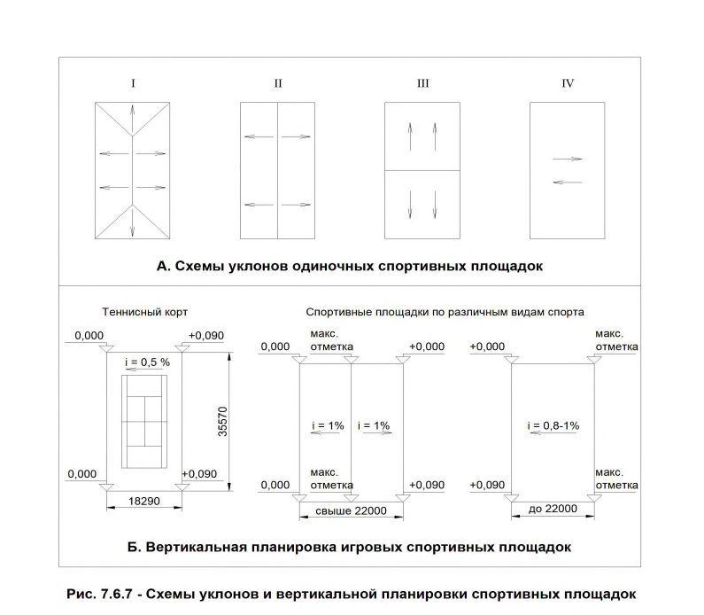
1 Максимальная отметска.
А - схемы уклонов одиночных спортивных площадок;
Б - уклоны спортивных площадок по различным видам спорта
Рисунок 1 - Уклоны спортивных площадок
7.7Общие требования к расчетам строительных конструкций
Статические и динамические расчеты несущих конструкций спортивных сооружений (в т.ч. сооружения повышенного уровня ответственности) должны проводиться с применением сертифицированного программного обеспечения.
Расчеты следует проводить на основные сочетания нагрузок, для зданий с расчетной сейсмичностью 7 и более баллов - и на особое сочетание с учетом сейсмической нагрузки согласно СП 14.13330.
Фундаменты следует проектировать в соответствии с СП 22.13330, СП 24.13330 и СП 47.13330 на основе результатов инженерногеологических исследований и расчетов несущих конструкций здания.
Стальные конструкции следует проектировать в соответствии с СП 16.13330, железобетонные конструкции - СП 63.13330.
7.8Особые требования к проектированию зданий и сооружений повышенного уровня ответственности
Для спортивных сооружений, относящихся в соответствии с [2] и [4, статья 48-1] к повышенному уровню ответственности, кроме учета требований 7.1 - 7.7 должны быть:
- выполнены модельные аэродинамические испытания, определены расчетные значения снеговых и ветровых нагрузок и разработаны рекомендаций по их назначению;
- организовано научное сопровождение: изготовления и монтажа конструкций, мониторинга основных несущих конструкций и оснований спортивных сооружений, геотехнического мониторинга при строительстве и эксплуатации.
7.9Расчеты на прогрессирующее обрушение
Расчеты конструкций спортивных сооружений на прогрессирующее обрушение (аварийную ситуацию) следует выполнять на нормативные значения постоянных и временных длительных нагрузок по СП 20.13330 для зданий и сооружений повышенного уровня ответственности.
Конструктивная система спортивного сооружения не должна быть подвержена прогрессирующему обрушению в случае локального разрушения отдельных конструктивных элементов при аварийных ситуациях.
8Требования к системам инженерного обеспечения
При проектировании спортивных сооружений технические решения по инженерным системам должны обеспечивать санитарно-гигиенические, противопожарные, технологические нормы.
8.1Теплоснабжение
Теплоснабжение спортивного сооружения (или отдельных групп помещений) проектируется от централизованных, автономных или индивидуальных источников теплоты согласно СП 60.13330, СП 89.13330, СП 124.13330.
Системы внутреннего теплоснабжения следует присоединять согласно СП 124.13330 к тепловым сетям централизованного теплоснабжения или автономного источника теплоты через автоматизированные индивидуальные или индивидуальные тепловые пункты, обеспечивающие гидравлический и тепловой режимы систем внутреннего теплоснабжения.
Автоматизированные ИТП следует проектировать с учетом СП 60.13330, СП 124.13330. Допускается совмещать ИТП с помещениями установок вентиляции и кондиционирования воздуха.
Применение электрической энергии с непосредственной трансформацией ее в тепловую энергию для отопления или нагрева в системах вентиляции и кондиционирования допускается по заданию на проектирование при соответствующем обосновании.
8.2Отопление, вентиляция, кондиционирование воздуха
В спортивных сооружениях проектируются системы отопления, вентиляции, кондиционирования воздуха, обеспечивающие параметры микроклимата (температуру, влажность, подвижность) и качества (газовый состав, концентрация загрязняющих веществ) воздушной среды спортивной зоны и вспомогательных помещений в соответствии с ГОСТ 30494, СП 60.13330, [12].
При выборе расчетных параметров микроклимата при проектировании спортивных сооружений следует руководствоваться заданием на проектирование и требованиями соответствующих федераций.
Расчетная температура и показатели воздухообмена в помещениях спортивных сооружений принимаются согласно таблице 11.
СП 332.1325800.2017
Таблица 11 - Параметры микроклимата отдельных зон спортивных сооружений
| Зона сооружения | спортивного | Температурный режим t , °C | Температурный режим t , °C | Кратность воздухообмена не менее, 1/ч | Кратность воздухообмена не менее, 1/ч |
|---|---|---|---|---|---|
| приток вытяжка 1 Спортивная зона | приток вытяжка 1 Спортивная зона | приток вытяжка 1 Спортивная зона | приток вытяжка 1 Спортивная зона | приток вытяжка 1 Спортивная зона | приток вытяжка 1 Спортивная зона |
| 1.1 | Залы ледовых арен с местами для зрителей | В спортивной зоне 1,5м над уровнем льда | 12…16* | По расчету, но не менее 80м³/ч наружного воздуха на одного занимающегося и не менее | По расчету, но не менее 80м³/ч наружного воздуха на одного занимающегося и не менее |
| 1.1 | Залы ледовых арен с местами для зрителей | На трибунах | +14…+2 3* | 20м³/ч на одного зрителя | 20м³/ч на одного зрителя |
| 1.2 | Залы ледовых арен без мест для зрителей | В спортивной зоне 1,5м над уровнем льда | 8…14* | По расчету, но не менее 80м³/ч наружного воздуха на одного занимающегося | По расчету, но не менее 80м³/ч наружного воздуха на одного занимающегося |
| 1.3 | Спортивные залы с местами для зрителей | В спортивной зоне | 17…23 | расчету, но не менее 80м³/ч | расчету, но не менее 80м³/ч |
| 1.3 | Спортивные залы с местами для зрителей | На трибунах | 19…25 | По | По |
| 1.4 | Спортивные залы без мест для зрителей, залы ОФП и СФП | В спортивной зоне | 17…23 | наружного воздуха на одного занимающегося и не менее 20м³/ч на одного зрителя | наружного воздуха на одного занимающегося и не менее 20м³/ч на одного зрителя |
| 2 Вспомогательная зона | 2 Вспомогательная зона | 2 Вспомогательная зона | 2 Вспомогательная зона | 2 Вспомогательная зона | 2 Вспомогательная зона |
| 2.1 | Гардеробные верхней одежды для занимающихся и зрителей | 16…18 | 16…18 | - | 2 |
| 2.2 | Раздевалки спортивные | 20…22 | 20…22 | 2-3** | 2-3** с учетом душевых |
| 2.3 | Душевые | 24…26 | 24…26 | 5 | 10 |
| 2.4 | Массажные | 20…22 | 20…22 | 4 | 5 |
| 2.5 | Камера бани сухого жара | Макс. 110*** | Макс. 110*** | - | 5 (периодического действия при отсутствии людей) |
| 2.6 | Помещение для сушки спортивной одежды | 22…24 | 22…24 | 2 | 3 |
| 2.7 | Помещения для судей, СМИ, инструкторского, тренерского, административного и инженерно- технического персонала | 19…21 | 19…21 | 3 | 2 |
| 2.8 | Санитарные узлы: -общего пользования (для зрителей) -для занимающихся (при раздевалках) | 16…18 16…18 | 16…18 16…18 | - - | 100 м³ /ч на один унитаз или писсуар 50 м³ /ч на один унитаз или писсуар |
| 2.9 | Умывальные при | - | за счет |
СП 332.1325800.2017
| санитарных узлах общего пользования | 16…18 | санитарных узлов | ||
|---|---|---|---|---|
| 2.1 0 | Кладовые для спортивного оборудования и хозяйственного инвентаря | 15…18 | - | 1 |
| 2.1 1 | Помещение для холодильных машин | Не ниже 10 | 4 | 5 |
| 2.1 2 | Помещение для стоянки льдозаливочных машин | Не ниже 10 | По балансу из зрительного зала | 10 (1/3 из верхней и 2/3 из нижней зоны) |
- ***Обеспечивается от самостоятельного источника энергии технологическим оборудованием заводского изготовления и отключающим устройством при повышении температуры в камере свыше 110 ° С.
Примечание - Расчетная температура воздуха для всех помещений спортивных сооружений кроме спортивной зоны (1.1-1.4) приведена для рабочего времени в холодный период года; в теплый период температура воздуха в помещениях принимается в соответствии с ГОСТ 30494, СП 60.13330.
Расчетное число зрителей в спортивных сооружениях при проектировании систем вентиляции принимается, исходя из 100% заполнения зрительских мест.
В период, когда спортивные сооружения с местами для зрителей используются для тренировочных занятий (без присутствия зрителей), расчетная температура воздуха в них (в холодный период года) принимается, как для спортивных сооружений без мест для зрителей.
Подвижность воздуха в спортивных зонах принимается, не более:
0,3 м/с -в спортивных залах для художественной гимнастики, бадминтона, настольного тенниса, в залах ледовых арен;
0,5 м/с - в остальных спортивных залах.
Относительную влажность воздуха в спортивных залах (кроме залов ледовых арен) рекомендуется принимать в пределах 30%-60%, нижние пределы принимаются для холодного периода года при температурах, указанных в таблице 11.
В залах ледовых арен следует обеспечивать относительную влажность, исключающую образование конденсата на поверхностях ограждений и тумана в зоне ледовой площадки; параметры влажности в зависимости от температуры воздуха на высоте 1,5 м над уровнем льда следует поддерживать не более указанных в таблице 12.
Таблица 12 - Предельные максимальные значения относительной влажности в зоне ледовой площадки по условиям предотвращения выпадения тумана в зависимости от температуры воздуха
| Температура, ºС | 8 | 9 | 10 | 11 | 12 | 13 | 14 | 15 | 16 |
|---|---|---|---|---|---|---|---|---|---|
| Относительная влажность,% | 78 | 76 | 73 | 71 | 70 | 68 | 65 | 62 | 60 |
По заданию на проектирование в соответствии с правилами (регламентами) федераций могут устанавливаться более жесткие требования к параметрам температуры, влажности и подвижности воздуха в спортивной зоне.
В спортивных залах, где предусматривается снижение температуры в нерабочее время, систему отопления рекомендуется устраивать из двух раздельных групп нагревательных приборов: основной, рассчитанной на постоянное поддержание температуры внутреннего воздуха 5°С, и дополнительной, обеспечивающей доведение внутренней температуры до расчетной. В качестве дополнительных рекомендуются системы воздушного отопления, системы вентиляции и кондиционирования воздуха.
Воздухообмен в залах ледовых арен с местами для зрителей рассчитывается для следующих эксплуатационных режимов:
- соревнования на ледовой площадке со зрителями;
- соревнования по неледовым видам спорта со зрителями, а также концертно-зрелищные и массовые мероприятия;
- тренировочные занятия на ледовой площадке без зрителей;
- тренировочные занятия по неледовым видам спорта без зрителей.
При использовании в ледовых аренах машин по уходу за льдом с двигателями внутреннего сгорания, следует обеспечивать воздухообмен, достаточный для ассимиляции выделяемых двигателями вредных веществ при обеспечении санитарной нормы подачи свежего воздуха для занимающихся.
В спортивных залах с местами для зрителей воздухообмен рекомендуется рассчитывать для двух режимов - со зрителями и без них.
Самостоятельные системы приточной и вытяжной вентиляции следует предусматривать для:
- спортивных залов и залов ледовых арен;
- душевых, раздевален для занимающихся и массажных;
- помещений для административного, инженерно-технического, инструкторско-тренерского персонала, бытовых помещений для рабочих;
- медицинских пунктов и иных помещений медицинского назначения;
- технических помещений.
В системах воздушного отопления, совмещенных с вентиляцией и кондиционированием, допускается применение рециркуляции при обеспечении нормативной подачи наружного воздуха и фильтрации рециркуляционного воздуха. Для систем, обслуживающих спортивные залы со зрителями рекомендуется предусматривать обеззараживание рециркуляционного воздуха.
В залах с применением деревоклеенных конструкций при необходимости обеспечения требуемой относительной влажности в зоне этих конструкций (не менее 45%) рекомендуется устройство увлажнения воздуха в системах приточной общеобменной вентиляции; при отсутствии приточной вентиляции допускается применение местных увлажнителей.
В спортивных залах и залах ледовых арен с местами для более 200 зрителей рекомендуется предусматривать независимые системы вентиляции и кондиционирования воздуха для зоны размещения зрителей и спортивной зоны.
Спортивные залы без мест для зрителей, объемом не менее 80 м³ на каждого единовременно занимающегося, допускается проектировать с естественной приточно-вытяжной вентиляцией с обеспечением однократного воздухообмена в 1 ч.
При проектировании естественной приточно-вытяжной вентиляции рекомендуется предусматривать неорганизованную подачу наружного воздуха в спортивные залы с использованием в качестве приточных устройств открывающихся фрамуг в нижней и верхней частях витражей.
Системы противодымной вентиляции спортивных сооружений следует предусматривать в соответствии с СП 7.13130, разделом 8 СП 60.13330.2016.
Нагревательные приборы систем отопления следует устанавливать преимущественно у наружных стен залов с учетом размещения спортивного оборудования. В помещениях с влажным и мокрым режимами ниши в наружных стенах для размещения нагревательных приборов не устраиваются.
Нагревательные приборы и трубопроводы в спортивных залах не должны, как правило, выступать из плоскости стен в пределах высоты 2 м от пола.
Размещение элементов системы вентиляции и отопления (воздуховоды, решетки, нагревательные приборы и трубопроводы) следует проектировать в нишах (на высоте до 2 м от уровня пола) или без ниш (выше 2 м от уровня пола). Установка защитных экранов или иных защитных средств обязательна.
8.3Холодоснабжение
Системы холодоснабжения для намораживания и поддержания искусственного ледового покрытия ледовых арен следует проектировать с промежуточным холодоносителем, используя в этом качестве незамерзающие при рабочих температурах жидкости.
При проектировании систем необходимо соблюдать ГОСТ EN 378-1, ГОСТ EN 378-2, ГОСТ EN 378-3, ГОСТ EN 378-4.
Компенсация тепловой нагрузки на ледовую поверхность происходит через трубную систему охлаждения с циркулирующим холодоносителем.
Для изготовления трубной системы следует применять трубы из полиэтилена низкого давления или стальные бесшовные. Материал трубопроводов выбирается, исходя из прочностных характеристик, требований коррозионной стойкости к применяемому холодоносителю, конструктивного исполнения плиты охлаждения.
Диаметр охлаждающих трубопроводов и шаг между ними определяются расчётом.
Конструкцией трубной системы охлаждения должно быть обеспечено равномерное распределение температурного поля по всей поверхности ледового покрытия. Значение неравномерности при постоянной толщине ледового покрытия 40 мм должно составлять не более ±0,5ºС.
Холодильное оборудование подбирается по результатам теплотехнического расчёта с учетом необходимого уровня надежности системы.
Основное холодильное оборудование (холодильные агрегаты, насосы, емкостное оборудование) размещается внутри здания в машинном отделении или снаружи - в контейнере.
В качестве исходной для выбора производительности оборудования используется максимальная нагрузка, рассчитанная для режимов:
- намораживания льда в теплое время периода эксплуатации арены;
- поддержания постоянной температуры ледовой поверхности в режиме проведения спортивных мероприятий с полной загрузкой объекта.
Расчетные температуры поверхности льда принимаются по заданию на проектировании на основе требований правил (регламентов) соответствующих федераций.
8.4Водоснабжение и канализация
При проектировании спортивных сооружений следует предусматривать хозяйственно-питьевое, противопожарное и горячее водоснабжение, канализацию и водостоки, которые необходимо проектировать в соответствии с СП 10.13130, СП 30.13330, [12].
Наружные трубопроводы сетей водоснабжения и канализации следует проектировать в соответствии с СП 31.13330 и СП 32.13330.
Качество холодной и горячей воды, подаваемой на хозяйственнобытовые нужды, должно соответствовать СанПиН 2.1.4.1074.
При устройстве автоматического водяного пожаротушения следует руководствоваться требованиями СП 5.13130 с учетом отнесения помещений зданий спортивных корпусов к I группе по степени опасности развития пожара.
Исполнение установок водяного пожаротушения должно соответствовать ГОСТ Р 50680, параметры установок пожаротушения приведены в [41].
Перечень зданий, сооружений, помещений и оборудования, подлежащих защите автоматическими установками пожаротушения приведен в [42].
Внутренний противопожарный водопровод следует предусматривать с учетом требований приложения Л СП 118.13330.2012, СП 10.13130.
Горячая вода для хозяйственно-бытовых нужд должна соответствовать СанПиН 2.1.4.1074.
Горячая вода должна подаваться на технологические нужды - для подготовки поверхности льда катков, а также для предприятий питания спортивного сооружения.
Для полива открытых плоскостных сооружений и территории, а также для создания льда сезонных катков допускается использование воды непитьевого качества, соответствующей требованиям ГОСТ 17.1.3.07.
8.5Электроснабжение
При проектировании электрооборудования спортивных сооружений необходимо руководствоваться СП 76.13330, [43], другими нормативными документами.
Устройство молниезащиты спортивных сооружения следует проектировать в соответствии с ГОСТ Р 50571.22, ГОСТ Р МЭК 61140, [44]. Категория молниезащиты здания определяется по [44] или по заданию на проектирование.
По периметру проектируемого здания следует предусматривать организацию наружного контура молниезащиты.
8.6Электроосвещение, в том числе спортивной зоны
Уровень естественного и искусственного освещения помещений спортивных сооружений должен соответствовать СП 52.13330, СанПиН 2.2.1/2.1.1.1278.
Искусственное освещение следует предусматривается во всех помещениях.
Освещать естественным верхним (верхне-наклонным) светом допускается: раздевальные, санитарно-гигиенические помещения, помещения персонала, спортивные зоны крытых спортивных сооружений, плоскостные спортивные сооружения.
В тренировочных залах для бокса (для создания контраста в освещении ринга по сравнению с остальной поверхностью зала) допускается установка отдельных светильников концентрированного светораспределения непосредственно над рингом (при отключении основного освещения зала).
Уровень средней горизонтальной освещенности трибун для зрителей следует принимать 50 лк, освещенности плоскостных спортивных сооружений на горизонтальной поверхности - 50 лк, на вертикальной 30 лк.
СП 332.1325800.2017
Освещенность зон показа зрителей на трибуне крупным планом в режиме телетрансляции высокой четкости принимается увеличенной до 750 лк, в режиме телетрансляции стандартной четкости принимается увеличенной до 500 лк; зоны определяются заданием на проектирование в пределах до 20% площади трибуны.
В спортивных сооружениях необходимо предусматривать переключение осветительной системы отдельных зон в пределах 200-600 лк (для тренировочных занятий 300-400 лк).
Коэффициент запаса осветительных приборов принимается: 2,0 - для светильников с металлогалогеновыми лампами (МГЛ), 1,25 -для светодиодных светильников. Источники света принимаются со сплошным или близким к сплошному спектром излучения с цветовой температурой 5600-6400 К.
Отношение горизонтальной освещенности к вертикальной принимается не более 3:1.
Неравномерность освещенности зоны зрителей от спортивной зоны (с плавным переходом от одного уровня к другому) допускается не св. 1:3.
В качестве источников света для искусственного освещения следует использовать современные энергосберегающие светильники. Для освещения спортивной зоны коэффициент пульсации источников света составляет не более 0,1%. Тип световых источников определяется заданием на проектирование.
Спортивные сооружения, где планируется проведение спортивных мероприятий с телетрансляцией высокой четкости, должны быть освещены светильниками с коэффициентом цветопередачи CRI не менее 90.
Предпочтительно применение светильников с диффузными рассеивателями. Светильники следует устанавливать на потолке в линии параллельные продольным стенам спортивного зала. Управлять освещением следует непосредственно из зала, размещая аппараты управления у входных дверей. Управление освещением должно обеспечивать возможность отключения 2/3 светильников основного освещения при сохранении равномерности освещения. Включение освещения инвентарной должно осуществляться из зала у входа (проема) в инвентарную.
При необходимости плавного регулирования светового потока, следует применять современные источники света с системой плавного регулирования светового потока (диммирования). Управление яркостью освещения (диммирование) допускается осуществлять тремя-четырьмя ступенями.
Управление освещением универсальных спортивных залов должно предусматривать включение осветительных установок в соответствии с трансформацией зала.
Для освещения спортивных залов высотой 8 м и менее рекомендуется применять систему верхнебокового освещения с установкой светильников на боковых стенах и потолке за пределами спортивной зоны.
Наиболее качественная система освещения для всех видов спорта (за исключением тенниса) -система комбинированного освещения при соотношении отраженного и направленного света 3:2, но ее применение неэкономично. Поэтому в большинстве случаев рекомендуется установка светильников на потолке спортивного зала с обеспечением защитного угла не менее 40° в продольной и поперечной плоскостях.
При применении осветительных приборов широкого светораспределения возможно устройство верхнего освещения с установкой их непосредственно над спортивной зоной.
Размещение светильников (за исключением светильников отраженного света) на стенах в торцах спортивных залов, предназначаемых для спортивных игр, не допускается.
В залах для спортивных игр с мячом (7.5) следует предусматривать защиту светильников.
Все крепежные детали оборудования, регуляторов, электрических выключателей должны заглублены или установлены заподлицо с поверхностью стен.
Электрические выключатели, регуляторы осветительной арматуры в залах, достижимых для инвалидов, должны располагаться на высоте от 0,8 до 1,3 м.
8.7Внешнее и внутреннее освещение путей эвакуации
Аварийное освещение путей эвакуации, зон повышенной опасности и помещений с большой площадью следует предусматривать в соответствии с СП 52.13330.
Эвакуационные лестницы без естественного освещения следует обеспечивать постоянным и аварийным (эвакуационным) электрическим освещением.
В безопасных зонах для МГН необходимо предусматривать аварийное освещение.
Продолжительность работы освещения путей эвакуации должна быть не менее 1ч.
8.8Системы связи и телекоммуникаций
Спортивные сооружения следует оснащать системами электросвязи, обеспечивающими качественную эксплуатацию и эффективное функционирование, безопасность и своевременность оповещения о приближающейся опасности всех находящихся на территории сооружения клиентских групп, в том числе МГН в соответствии с СП 59.13330, СП 118.13330, СП 134.13330, СП 132.13330, ГОСТ Р 22.1.12, ГОСТ Р 53195.1, ГОСТ Р 53195.2, ГОСТ Р 53195.3, ГОСТ Р 53195.4, ГОСТ Р 53195.5, и другими НД.
Проектирование комплексных систем связи должно предусматривать создание локальных систем (диспетчеризации, сигнализации, коммерческого учета потребления энергоресурсов, систем обеспечения безопасности сооружения, систем охраны входов в здание, систем диспетчеризации и видеоконтроля подъемных платформ для инвалидов и маломобильных групп населения и т.п.) с передачей информации по единой технологической системе связи до диспетчерского пункта, а также для обеспечения возможности присоединения систем объекта к городским магистральным сетям связи и работы их в составе общегородских систем различного назначения.
Состав комплекса систем связи и технологических систем для каждого спортивного сооружения определяется заданием на проектирование в зависимости от требований, предъявляемых к его функциональному назначению.
8.9Билетно-пропускная система и система контроля и управления доступом
Для проведения спортивных мероприятий спортивное сооружение в соответствии с [1, глава 2, статья 20, пункты 1.5 и 2.1] и [3] необходимо оборудовать СКУД, позволяющую в режиме реального времени получать информацию о наполняемости трибун и имеющую возможность идентификации зрителей по документам, обеспечивающим проход (билет, электронный билет, карта болельщика или другие персонифицированные носители информации о зрителе).
СКУД спортивного сооружения должна быть обеспечена интеграцией с БПС, системой видеонаблюдения, охранно-пожарной сигнализацией и программным комплексом единого центра управления безопасностью.
СКУД на программном уровне осуществляет передачу данных в отношении входящих на территорию спортивного сооружения зрителей в единый центр управления безопасностью для обработки, хранения, а также идентификации лиц в соответствии с [1, глава 2, статья 20, пункты 1.5 и 1.7] и [3].
Комплектация и функциональные возможности БПС и СКУД определяются заданием на проектирование.
9Долговечность и ремонтопригодность
Проект здания спортивного сооружения в соответствии с СП 70.13330 должен учитывать сохранение прочности и устойчивости несущих конструкций в течение всего срока эксплуатации, при условии соблюдения правил эксплуатации, мониторинга состояния конструкций, систематического технического обслуживания и ремонта спортивного сооружения.
Таблица А.1
АПриложение А. Классификатор объектов спорта
| 01.0000000.Х.Х. | АВТОДРОМ |
|---|---|
| 02.0000000.Х.Х. | АРЕНА |
| 03.0000000.Х.Х. | АРЕНА ЛЕДОВАЯ |
| 04.0000000.Х.Х. | БАССЕЙН |
| 05.0000000.Х.Х. | ВЕЛОТРЕК |
| 06.0000000.Х.Х. | ДИСТАНЦИЯ СПОРТИВНАЯ |
| 07.0000000.Х.Х. | ЗАЛ СПОРТИВНЫЙ |
| 08.0000000.Х.Х | КАНАЛ ГРЕБНОЙ |
| 09.0000000.Х.Х. | КАНАЛ ДЛЯ ГРЕБНОГО СЛАЛОМА |
| 10.0000000.Х.Х. | КОМПЛЕКС БИАТЛОННО-ЛЫЖНЫЙ |
| 11.0000000.Х.Х. | КОМПЛЕКС ГОРНОЛЫЖНЫЙ |
| 12.0000000.Х.Х. | КОМПЛЕКС КОННОСПОРТИВНЫЙ |
| 13.0000000.Х.Х. | КОМПЛЕКСЛЫЖНЫЙ |
| 14.0000000.Х.Х. | КОМПЛЕКС ТРАМПЛИНОВ ДЛЯ ПРЫЖКОВ НА ЛЫЖАХ |
| 15.0000000.Х.Х. | МАНЕЖЛЕГКОАТЛЕТИЧЕСКИЙ |
| 16.0000000.Х.Х. | МНОГОФУНКЦИОНАЛЬНЫЙ СПОРТИВНЫЙ КОМПЛЕКС (ФИЗКУЛЬТУРНО-ОЗДОРОВИТЕЛЬНЫЙ КОМПЛЕКС) |
| 17.0000000.Х.Х. | ОВАЛ КОНЬКОБЕЖНЫЙ |
| 18.0000000.Х.Х. | ПАРК ДЛЯ ЭКСТРЕМАЛЬНЫХ ВИДОВ СПОРТА |
| 19.0000000.Х.Х. | ПЛОЩАДКА СПОРТИВНАЯ |
| 20.0000000.Х.Х. | ПОЛЕ СПОРТИВНОЕ |
| 21.0000000.Х.Х. | СНОУБОРД ПАРК - ФРИСТАЙЛ ЦЕНТР |
| 22.0000000.Х.Х. | СТАДИОН |
| 23.0000000.Х.Х. | СТРЕЛЬБИЩЕ |
| 24.0000000.Х.Х. | ТИР СТРЕЛКОВЫЙ |
| 25.0000000.Х.Х. | ТРАССА САННО-БОБСЛЕЙНАЯ |
| 26.0000000.Х.Х. | ТРАССА СПОРТИВНАЯ |
| 27.0000000.Х.Х. | ЦЕНТР БОУЛИНГА |
| 28.0000000.Х.Х. | ЦЕНТР ПАРУСНЫЙ |
| 29.0000000.Х.Х. | ЦЕНТР ШАХМАТНО-ШАШЕЧНЫЙ |
Таблица Б.1
БПриложение Б. Типы спортивных сооружений
| № № | Спортивное сооружение | Тип объекта спорта (согласно [6])| | Наименование вида спорта | Использование спортивного сооружения для паралимпийских видов спорта при незначительной трансформации (или без нее) |
|---|---|---|---|---|
| 1 | Ледовая арена | 03.0000000.Х.Х. Арена ледовая 17.0000000.Х.Х. Овал конькобежный | Конькобежный спорт Хоккей Хоккей с мячом Фигурное катание Керлинг Шорт-трек | Следж-хоккей Керлинг на колясках |
| 2 | Многофункциональны й спортивный комплекс, с универсальными спортивными залами | 07.0000000.Х.Х. Зал спортивный 16.0000000.Х.Х. Многофункциональный спортивный комплекс (физкультурно- оздоровительный комплекс) | Спортивная акробатика Спортивная гимнастика Художественная гимнастика Прыжки на батуте Баскетбол Волейбол Гандбол Мини-футбол Бадминтон Теннис Настольный теннис Бокс Виды борьбы Тяжелая атлетика Фехтование | Баскетбол на колясках Волейбол сидя Теннис на колясках Настольный теннис (ПОДА) Поуэрлифтинг (ПОДА) Фехтование на колясках |
| 3 | Плоскостное спортивное сооружение | 19.0000000.Х.Х. Площадка спортивная 20.0000000.Х.Х. Поле спортивное | Баскетбол Волейбол Гандбол Теннис Пляжный волейбол Пляжный футбол Хоккей на траве | Теннис на колясках |
Приложение В
Единовременная пропускная способность спортивных сооружений
Таблица В.1
| Тип спортивного сооружения / Вид спорта | Наименование и размеры спортивной зоны | Единовременная пропускная способность спортивных зон, чел. | Единовременная пропускная способность спортивных зон, чел. |
|---|---|---|---|
| Тип спортивного сооружения / Вид спорта | Наименование и размеры спортивной зоны | в режиме тренировочных занятий* | в режиме соревнований** |
| Ледовая арена | Ледовая арена | Ледовая арена | Ледовая арена |
| Кёрлинг | Площадка | 6 | 8 |
| Конькобежный | Дорожка 400м | 80 | *** |
| спорт | Дорожка 333м | 60 | |
| Фигурное катание на коньках | Площадка | 30 | *** |
| Хоккей | Площадка | 30 | 44 |
| Хоккей с мячом | Поле | 30 | 32 |
| Шорт-трек | Площадка | 30 | *** |
| Многофункциональный спортивный комплекс, имеющий в составе универсальные | Многофункциональный спортивный комплекс, имеющий в составе универсальные | Многофункциональный спортивный комплекс, имеющий в составе универсальные | Многофункциональный спортивный комплекс, имеющий в составе универсальные |
| спортивные залы Залы для спортивных игр | спортивные залы Залы для спортивных игр | спортивные залы Залы для спортивных игр | спортивные залы Залы для спортивных игр |
| Бадминтон | Корт | 8 | 2/4 |
| Баскетбол | Площадка | 18 | 24 |
| Волейбол | Площадка | 20 | 24 |
| Гандбол | Площадка | 22 | 32 |
| Мини-футбол | Площадка | 22 | 24 |
| Настольный теннис | Игровое пространство | 4 | 2/4 |
| Теннис | Корт | 6 | 2/4 |
| Залы гимнастические | Залы гимнастические | Залы гимнастические | Залы гимнастические |
| Спортивная акробатика | Зал 42 24м* 4 | 50 | *** |
| Спортивная гимнастика | Зал | 11м² на одного чел. | *** |
| Прыжки на батуте | Зал | 8 чел. на один снаряд | *** |
| Художественная гимнастика | Зал 36 18м* 4 | 20 | *** |
| Залы единоборств | Залы единоборств | Залы единоборств | Залы единоборств |
| Бокс | Ринг в зале 15 15м* 4 | 15 | *** |
| Дзюдо | Татами в зале 16 16м* 4 | 20 | *** |
| Самбо | Ковер в зале 24 15м* 4 | 16 | *** |
| Спортивная борьба | Ковер в зале 24 15м* 4 | 16 | *** |
| Тяжелая атлетика | Помост в зале 36 18м* 4 | 15 | *** |
| Фехтование | Поле боя | 7 | *** |
| Плоскостное спортивное сооружение | Плоскостное спортивное сооружение | Плоскостное спортивное сооружение | Плоскостное спортивное сооружение |
| Баскетбол | Площадка | 18 | 24 |
| Волейбол | Площадка | 20 | 24 |
|---|---|---|---|
| Гандбол | Площадка | 22 | 32 |
| Пляжный волейбол | Площадка | 4 | 4 |
| Пляжный футбол | Площадка | 22 | 30 |
| Теннис | Корт | 6 | 2/4 |
| Хоккей на траве | Поле | 28 | 26 |
* За основу взят максимальный показатель пропускной способности из расчета проведения тренировочных занятий для занимающихся без спортивных разрядов.
- ** В игровых видах спорта пропускная способность спортивной зоны рассчитывается с учетом участия в соревнованиях двух команд на одной площадке.
- *** В индивидуальных видах спорта пропускная способность в режиме соревнований рассчитывается исходя из требований, установленных положением (регламентом) организации, ответственной за проведение соревнований.
- В универсальных спортивных залах, предусматривающих единовременное проведение спортивных мероприятий в объединенной спортивной зоне (на нескольких площадках) пропускная способность увеличивается, согласно числу и назначению этих площадок.
При расчете единовременной пропускной способности спортивного сооружения необходимо учитывать число занимающихся или спортивных команд, использующих вспомогательные помещения до и после нахождения их в спортивной зоне спортивного сооружения.
* 4 В залах иных размеров, пропускную способность необходимо рассчитывать пропорционально размерам залов, указанным в таблице.
Размеры и основные параметры спортивных зон с учетом размещения
А
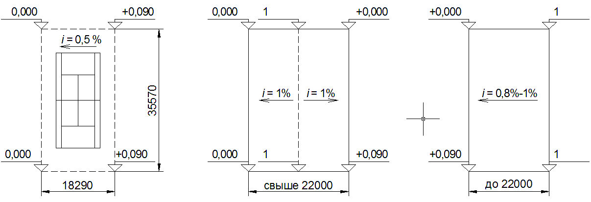
А - спортивная зона для кёрлинга на площадке 60х30 м; Б - разметка площадки для кёрлинга
1 - границы площадки с ледовой поверхностью; 2 - зона свободных защитников; 3 - линия кёрлинга на колясках; 4 - точки «дабл-микст»; 5 - линия колодок; 6 - «бэк» - линия; 7 - «ти» - линия; 8 - боковая линия; 9 - «хог» - линия; 10 - контрольная линия; 11 - колодки
Рисунок Г.1 - Спортивная зона для кёрлинга
Приложение Г спортивно-технологического оборудования
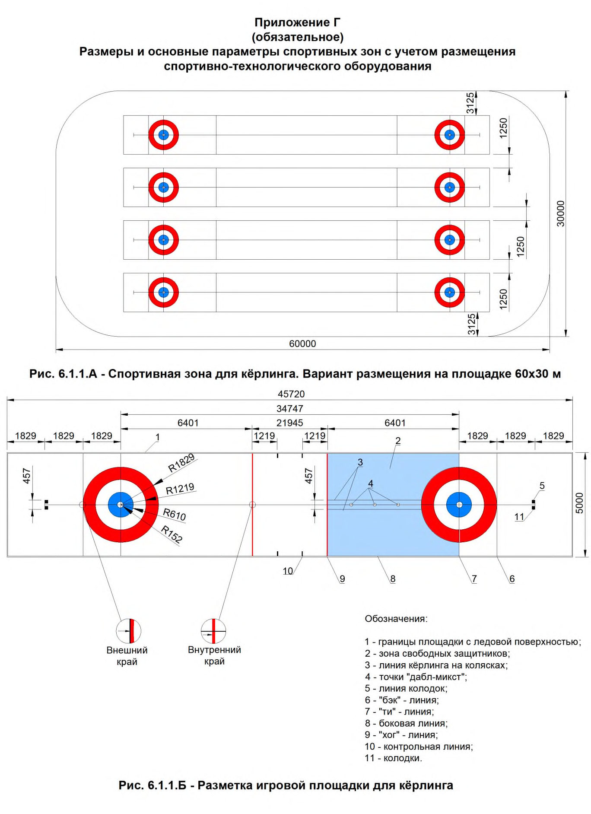
Пример расчета длина стандартных соревновательных дорожек
- 1 = Сумма длин двух прямых (между закладными по центральной оси) = 2 * А
- 2 = Длина внутреннего поворота В × p
- 3 = Длина наружного поворота = С × p
- 4 = Переход = √ А² + (ширина дорожки)² - А
Пример расчета дорожек длиной 400 м
| Радиус поворота внутренней дорожки 25 м | Радиус поворота внутренней дорожки 25 м |
|---|---|
| Ширина каждой дорожки 4 м | Ширина каждой дорожки 4 м |
| 1 = 2 × 113,57 | = 227,14 м |
| 2 = 25,5 × 3,1416 | = 80,11 м |
| 3 = 29,5 × 3,1416 | = 92,68 м |
| 4 = √ 113,57² + 4² - 113,57 = | 0,07 м |
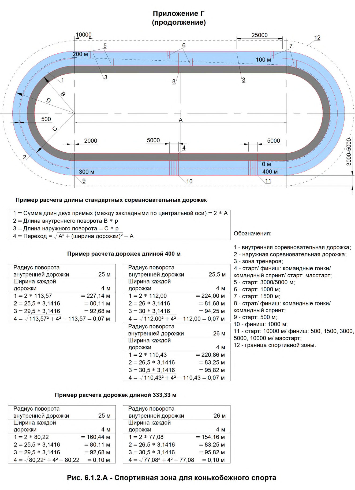
Пример расчета дорожек длиной 333,33 м
| Радиус поворота внутренней дорожки | 25 м | Радиус поворота внутренней дорожки | 26 м |
|---|---|---|---|
| Ширина каждой дорожки | 4 м | Ширина каждой дорожки | 4 м |
| 1 = 2 × 80,22 | = 160,44 м | 1 = 2 × 77,08 | = 154,16 м |
| 2 = 25,5 × 3,1416 | = 80,11 м | 2 = 26,5 × 3,1416 | = 83,25м |
| 3 = 29,5 × 3,1416 | = 92,68 м | 3 = 30,5 × 3,1416 | = 95,82 м |
| 4 = √ 80,22² + 4² - 80,22 | = 0,10 м | 4 = √ 70,08² + 4² - 70,08 | = 0,10 м |
1 - внутренняя соревновательная дорожка; 2 - наружная соревновательная дорожка; 3 - зона тренеров; 4 - старт/ финиш: командные гонки/ командный спринт/ старт: масстарт; 5 - старт: 3000/5000 м; 6 - старт: 1000 м; 7 - старт: 1500 м; 8 - страт/ финиш: командные гонки/ командный спринт; 9 - старт: 500 м; 10 - финиш: 1000 м; 11 - старт: 10000 м/ финиш: 500, 1500, 3000, 5000, 10000 м/ масстарт; 12 - граница спортивной зоны
Рисунок Г.1, лист 1 - Спортивная зона для конькобежного спорта
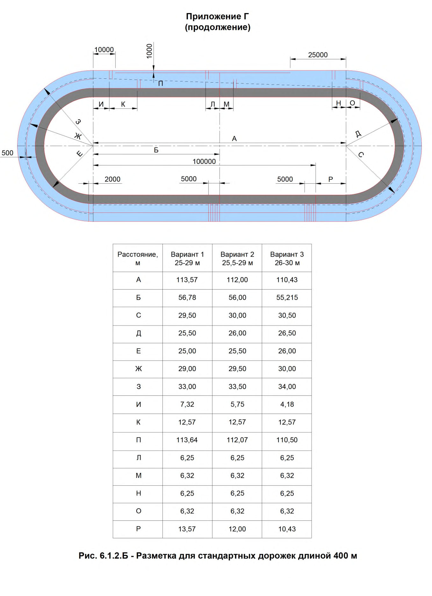
Рисунок Г.1, лист 2 - Разметка стандартных конькобежных дорожек длиной 400 м
| Расстояние, м | Вариант 1 25-29 м | Вариант 2 25,5-29 м | Вариант 3 25-29 м |
|---|---|---|---|
| А | 113,57 | 112,00 | 110,43 |
| Б | 56,78 | 56,00 | 55,215 |
| С | 29,50 | 30,00 | 30,50 |
| Д | 25,50 | 26,00 | 26,50 |
| Е | 25,00 | 25,00 | 26,00 |
| Ж | 29,00 | 29,50 | 30,00 |
| З | 33,00 | 33,50 | 34,00 |
| И | 7,32 | 5,75 | 4,18 |
| К | 12,57 | 12,57 | 12,57 |
| П | 113,64 | 112,07 | 110,50 |
| Л | 6,25 | 6,25 | 6,25 |
| М | 6,32 | 6,32 | 6,32 |
| Н | 6,25 | 6,25 | 6,25 |
| О | 6,32 | 6,32 | 6,32 |
| Р | 13,57 | 12,00 | 10,43 |
А
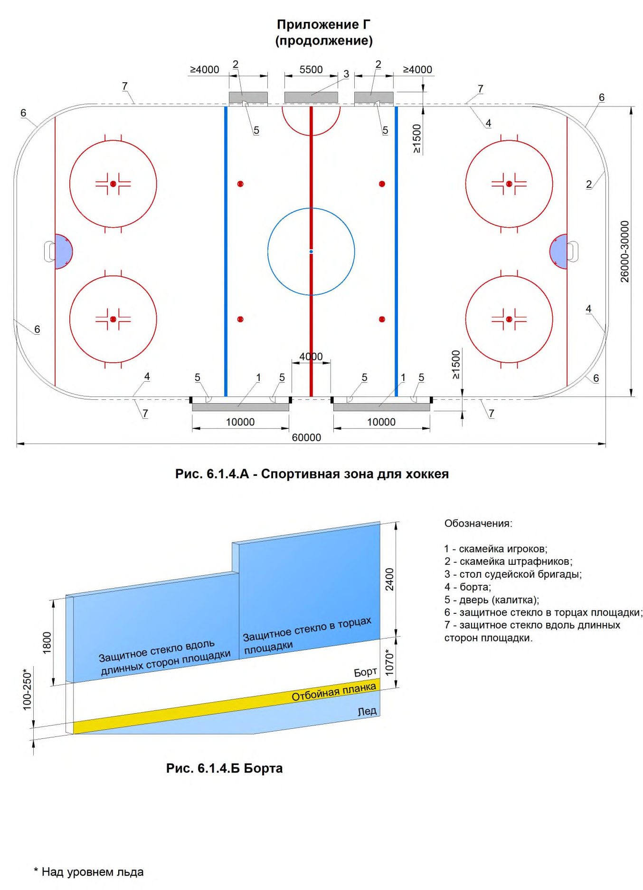
А - спортивная зона для хоккея;
Б - борт хоккейный
1 - скамейка игроков; 2 - скамейка штрафников; 3 - стол судейской бригады; 4 - борта; 5 - дверь (калитка); 6 - защитное стекло в торцах площадки; 7 - защитное стекло вдоль длинных сторон площадки
Рисунок Г.3, лист 1 - Спортивная зона для хоккея
В
В - разметка хоккейной площадки; Г разметка центрального круга и точки вбрасывания; Д - разметка круга и точки конечного вбрасывания; Е - разметка площади ворот; Ж - разметка судейской зоны; З - разметка точки вбрасывания в средней зоне
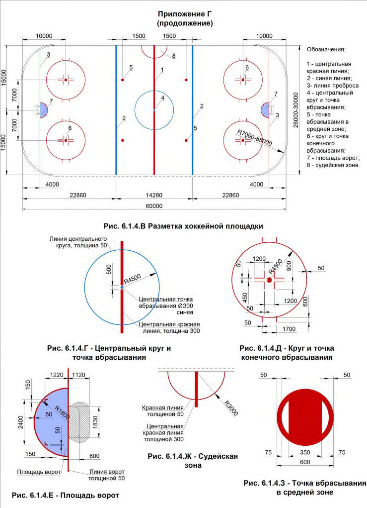
1 - центральная красная линия; 2 - синяя линия; 3 - линия проброса 4 - центральный круг и точка вбрасывания; 5 - точка вбрасывания в средней зоне; 6 - круг и точка конечного вбрасывания; 7 - площадь ворот; 8 - судейская зона
Рисунок Г.3, лист 2 - Хоккейная площадка
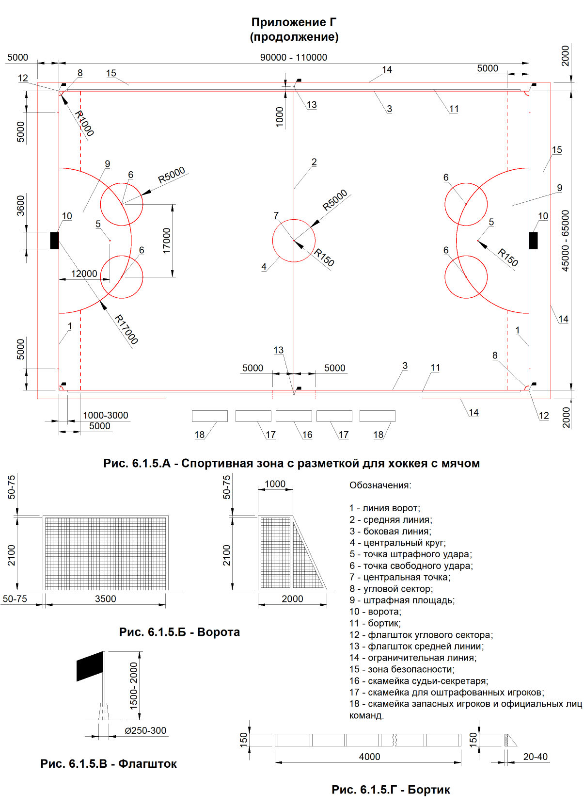
А - спортивная зона с разметкой для хоккея с мячом; Б - ворота; В - флагшток; Г - бортик
1 - линия ворот; 2 - средняя линия; 3 - боковая линия; 4 - центральный круг; 5 - точка штрафного удара; 6 - точка свободного удара; 7 - центральная точка; 8 - угловой сектор; 9 - штрафная площадь; 10 - ворота; 11 - бортик; 12 - флагшток углового сектора; 13 - флагшток средней линии; 14 - ограничительная линия; 15 - зона безопасности; 16 - скамейка судьи-секретаря; 17 - скамейка для оштрафованных игроков; 18 - скамейка запасных игроков и официальных лиц команд
Рисунок Г.4 - Спортивная зона для хоккея с мячом
Б
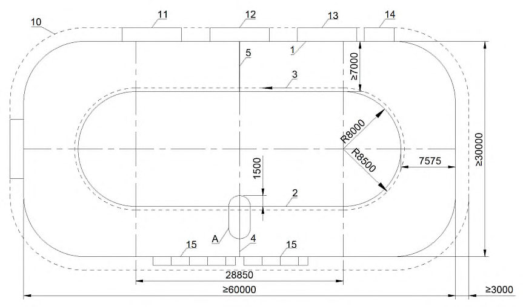
А - спортивная зона для шорт-трека; Б - разметка дорожки для шорт-трека; В - разметка дорожки для шорт-трека (узел «А»)
1 - ограждение с матами безопасности; 2 - расчетная внутренняя ограничительная линия; 3 - расчетная траектория и направление бега; 4 - линия общего финиша и старта на дистанции 1000, 3000 и 5000 метров; 5 - линия старта бега на дистанцию 1500 и 500 метров; 6 - линия переносимого старта полуфинальных и финальных забегов на 500 метров; 7 - линия поворота; 8 - точка на линиях поворота для установки маркера; 9 - точки на линии старта (вдоль всей линии через 1300 мм); 10 - граница спортивной зоны; 11 - финишный хитбокс; 12 - зона работы стартера; 13 - стартовый хитбокс; 14 - тренерская биржа; 15 - судейский подиум
Рисунок Г.5 - Спортивная зона для шорт-трека
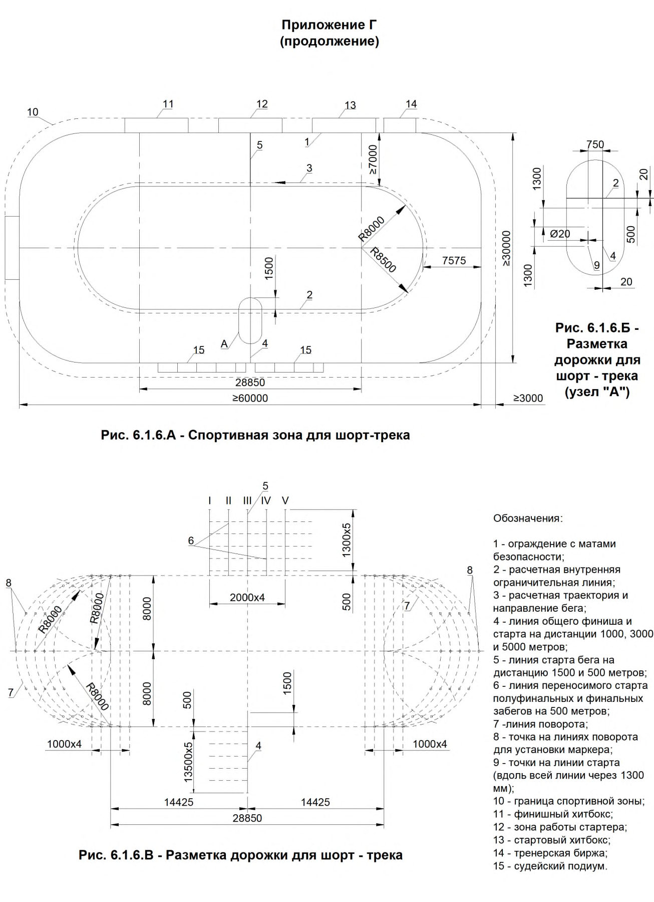
А - спортивная зона для бадминтона; Б - разметка корта бадминтона; В - разметка корта бадминтона (узел «А»)
1 - ближняя линия подачи; 2 - дальняя линия подачи для парной игры; 3 - дальняя линия подачи для одиночной игры; 4 - боковая линия для парной игры; 5 - боковая линия для одиночной игры; 6 - средняя линия; 7 - правое поле подачи; 8 - левое поле подачи; 9 - зона безопасности; 10 - стойка; 11 - сетка; 12 - судейская вышка; 13 - граница спортивной зоны
Рисунок Г.6 - Спортивная зона для бадминтона
А
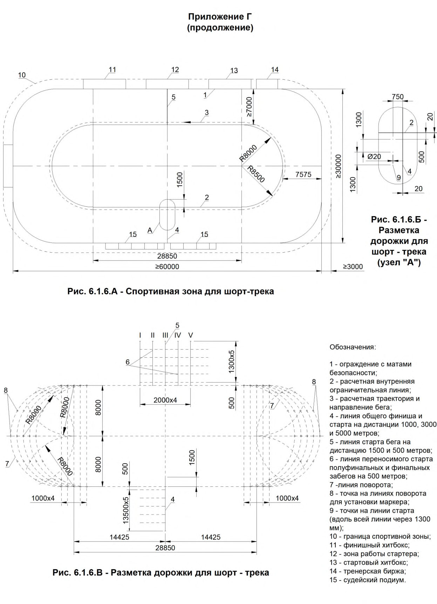
А - спортивная зона для баскетбола; Б - разметка площадки для баскетбола
1 - лицевая линия; 2 - боковая линия; 3 - центральная линия; 4 - линия штрафного броска; 5 - линия трехочковых бросков; 6 - линия вбрасывания; 7 - центральный круг; 8 - ограниченная зона; 9 - зона безопасности; 10 - ограничивающая линия; 11 - стол секретаря; 12 - скамейка команды; 13 - щит; 14 - корзина
Рисунок Г.7, лист 1 - Спортивная зона для баскетбола
В
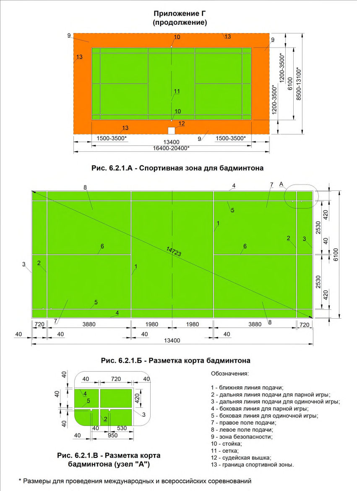
В - разметка площадки для баскетбола (узел «А»); Г - конструкция щита
1 - лицевая линия; 13 - щит; 14 - корзина; 15 - игровые и 24-секундные часы; 16 - протектор
Рисунок Г.7 лист 2 - Спортивная зона для баскетбола
А
А - спортивная зона для волейбола; Б - разметка игровой площадки для волейбола; В - разметка игровой площадки для волейбола (узел «А»); Г - разметка игровой площадки для волейбола (узел «Б»)
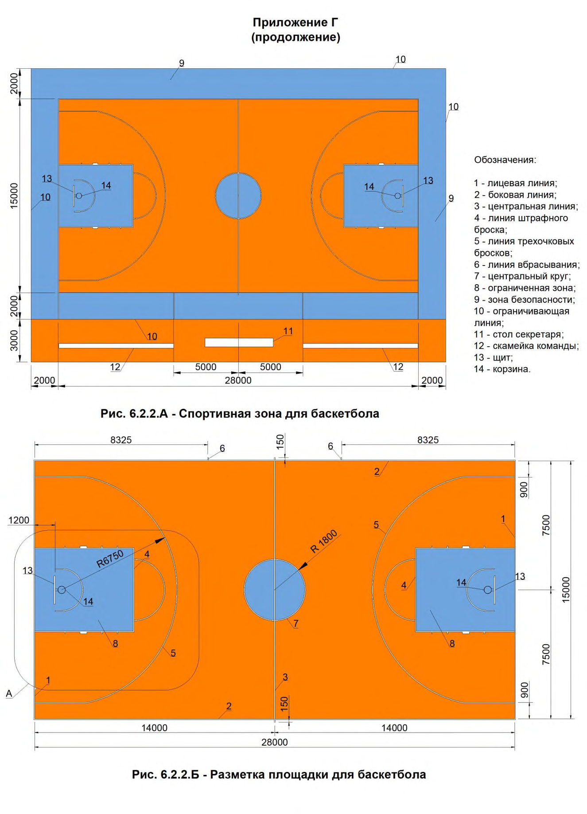
Рисунок Г.8 - Спортивная зона для волейбола
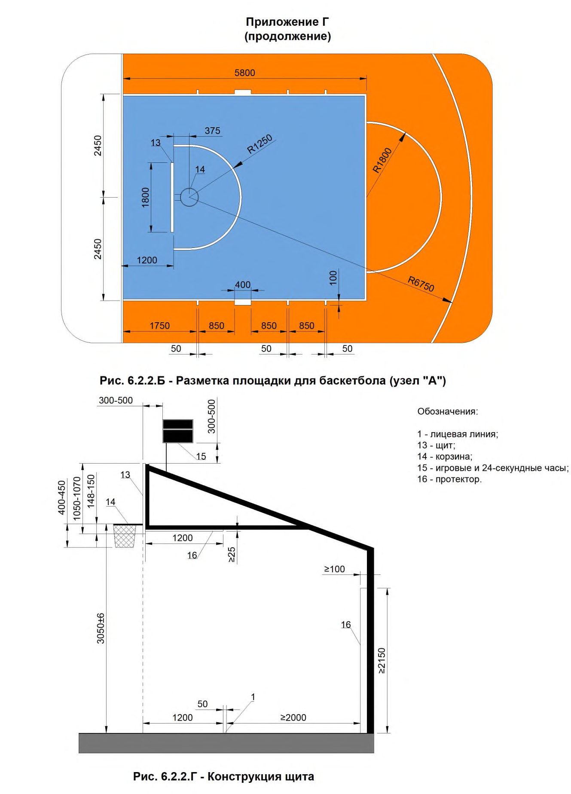
А - спортивная зона для гандбола; Б - разметка игровой площадки для гандбола; В - разметка игровой площадки для гандбола (узел «А»); Г - разметка игровой площадки для гандбола (узел «Б»)
1 - зона безопасности; 2 - ворота; 3 - заградительная сетка; 4 - стол секретариата; 5 - скамейка команды; 6 - граница спортивной зоны; 7 - внешняя линия ворот; 8 - боковая линия; 9 - центральная линия; 10 - линия свободных бросков; 11 - линия площади ворот; 12 - линия ворот; 13 - семиметровая линия; 14 - линия ограничения вратаря; 15 - площадь ворот; 16 - линия замены
Рисунок Г.9 - Спортивная зона для гандбола
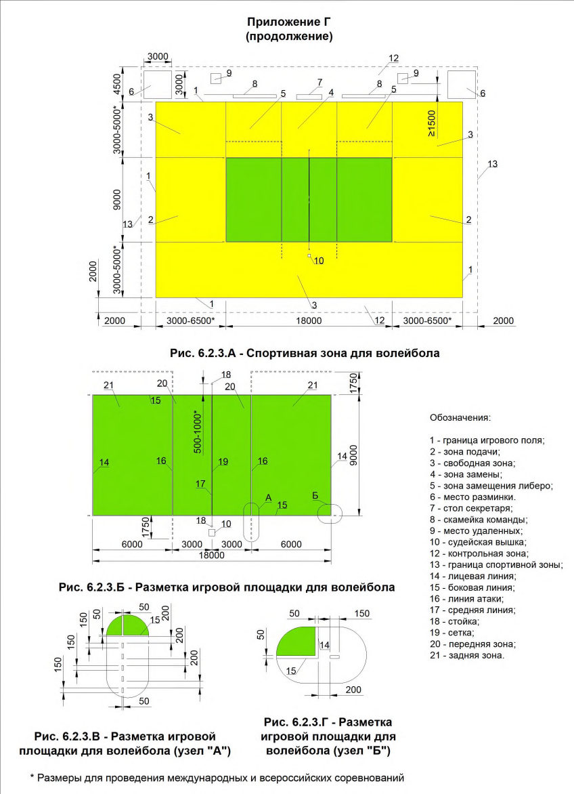
Рисунок Г.10 - Спортивная зона с разметкой для мини-футбола
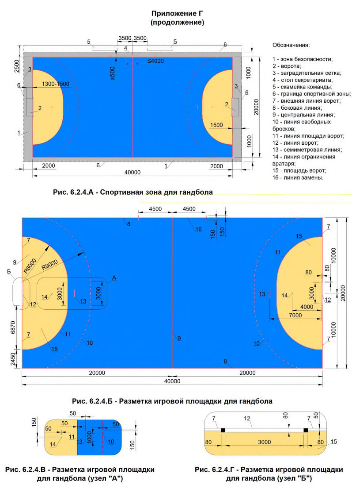
Рисунок Г.11 - Спортивная зона для настольного тенниса (вариант расстановки столов в зале 36х18м)
1 - судейская вышка; 2 - зона безопасности; 3 - граница спортивной зоны Рисунок Г.12, лист 1 - Спортивная зона для тенниса
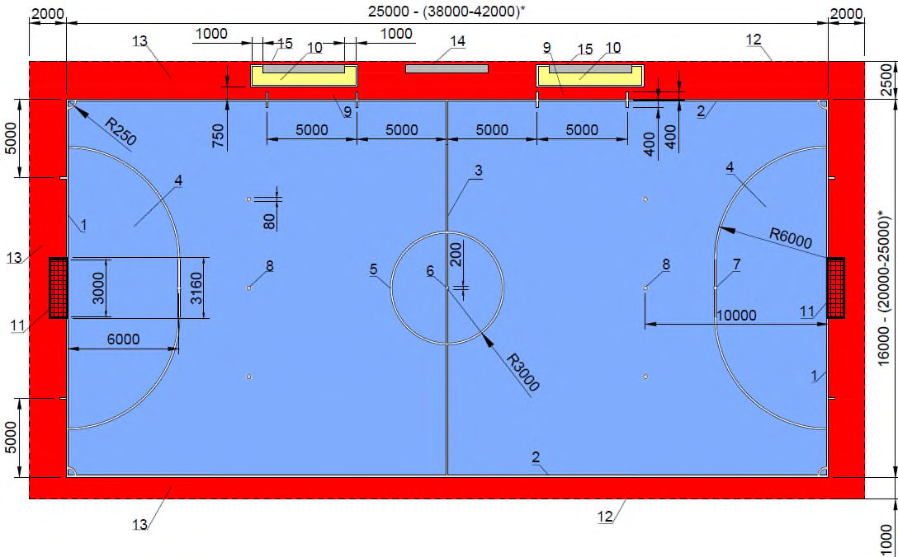
Рисунок Г.12, лист 2 - Разметка теннисного корта
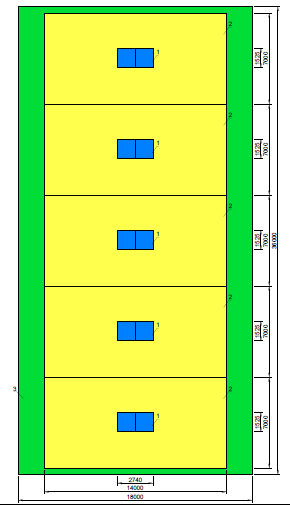

1 - не засчитываемая для «джек-бола» зона; 2 - «V»-линия; 3 - линия зоны игры/боксов; 4 - линия границы; 5 - крест (точка установки «джек-бола»); 6 - бокс (место игрока)
Рисунок Г.13 - Разметка площадки для паралимпийского бочча
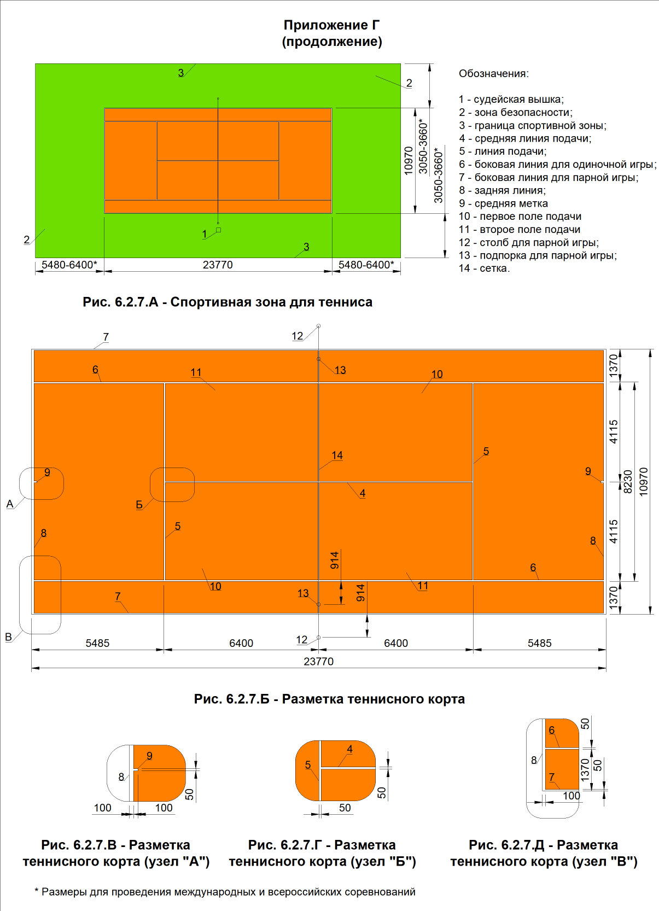
1 - игровая площадка; 2 - боковая линии; 3 - лицевая линии; 4 - центральная линия; 5 - двухметровая линия; 6 - передняя зона; 7 - зона обслуживания; 8 - стойка; 9 - граница спортивной зоны
Рисунок Г.14 - Спортивная зона и разметка для волейбола сидя

1 - линия ворот; 2 - боковая линия; 3 - линия «хай-болл»; 4 - лайн-аут; 5 - нейтральная зона; 6 - зона приземления; 7 - зона ориентации; 8 - командная зона; 9 - ворота; 10 - судейский стол; 11 - скамейка игроков; 12 - граница спортивной зоны
Рисунок Г.15 - Спортивная зона и разметка для голбола

1 - ограничительная линия; 2 - боковая линия; 3 - линия гола; 4 - центральный круг; 5 - зачетное поле; 6 - судейский стол; 7 - зона ожидания замены; 8 - скамейка запасных; 9 - зона штрафников; 10 - стол штрафного судьи; 11 - конус ворот; 12 - граница спортивной зоны
Рисунок Г.16 - Спортивная зона и разметка для регби на колясках
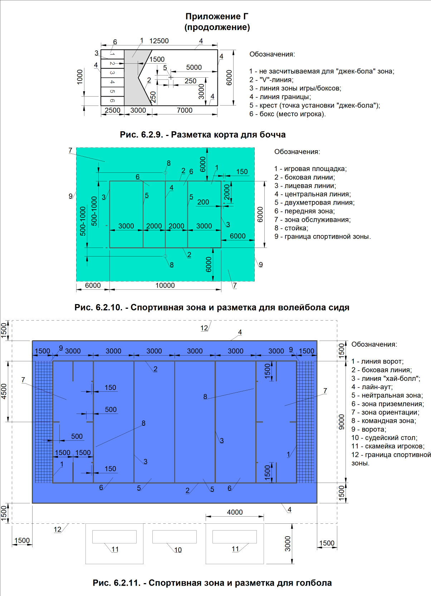
1 - линия ворот; 2 - боковая линия; 3 - средняя линия; 4 - штрафная площадь; 5 - центральный круг; 6 - центральный круг; 7 - отметка пенальти; 8 - дополнительная отметка пенальти; 9 - площадь ворот; 10 - ограждение; 11 - ворота; 12 - граница спортивной зоны; 13 - зона безопасности; 14 - стол хронометриста; 15 - скамейка запасных; 16 - калитка
Рисунок Г.17 - Спортивная зона и разметка для футбола 5х5
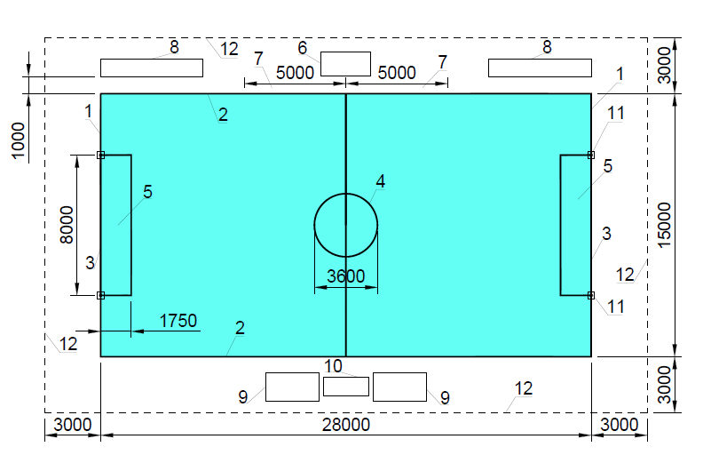
1 - ковер; 2 - зона безопасности; 3 - граница спортивной зоны
Рисунок Г.18 - Спортивная зона для спортивной акробатики
1 - площадка для вольных упражнений; 2 - зона снаряда «конь для махов»; 3 - зона снаряда «кольца»; 4 зона опорного прыжка; 5 - зона параллельных брусьев; 6 - зона для упражнений на перекладине; 7 - помост / граница зоны безопасности
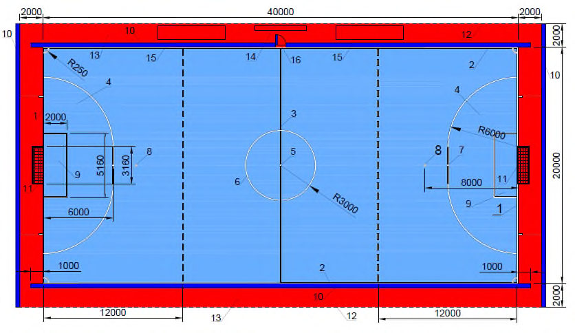
Рисунок Г.19, лист 1 - Спортивная зона для спортивной гимнастики (мужчины)
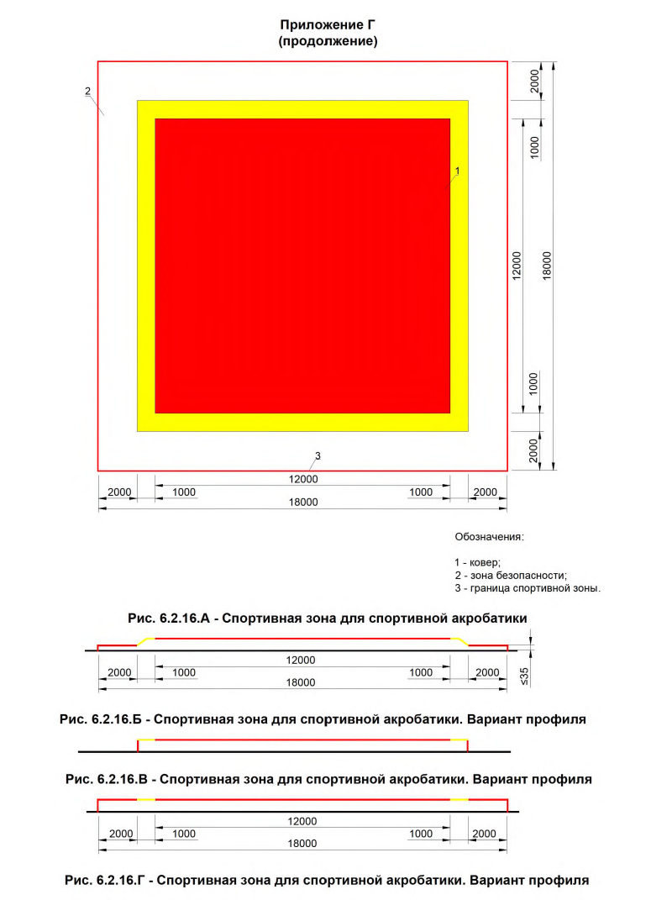
1 - зона опорного прыжка; 2 - зона упражнений на разновысоких брусьях; 3 - зона снаряда «бревно»; 4 площадка для вольных упражнений; 5 - помост / граница зоны безопасности
Рисунок Г.19, лист 2 - Спортивная зона для спортивной гимнастики (женщины)
1 - трамплин; 2 - зона безопасности с матами; 3 - зона жюри; 4 - акробатическая дорожка; 5 - зона жюри; 6 - дорожка разбега для двойного мини-трампа; 7 - двойной мини-трамп; 8 - зона жюри; 9 - граница спортивной зоны
Рисунок Г.20, лист 1 - Спортивная зона для прыжков на батуте
А - трамплин. Вид сбоку; Б - трамплин. Вид спереди; В - трамплин. Вид сверху; Г - двойной минитрамплин. Вид спереди; Д - двойной минитрамплин. Вид сбоку; Е - двойной минитрамплин. Вид сверху, перпендикулярно в обе области
Рисунок Г.20, лист 2 - Спортивные снаряды для прыжков на батуте
А Б
А - дорожка разбега двойного минитрамплина; Б - акробатическая дорожка 1 - двойной мини-трамп; 2 - зона А; 3 - зона В; 4 - зона С; 5 - дорожка для разбега; 6 - дополнительный мат безопасности; 7 - зона безопасности; 8 - акробатическая дорожка; 9 - зона приземления; 10 - площадь приземления; 11 - дорожка для разбега; 12 - линии; 13 - дополнительный мат безопасности; 14 - зона безопасности
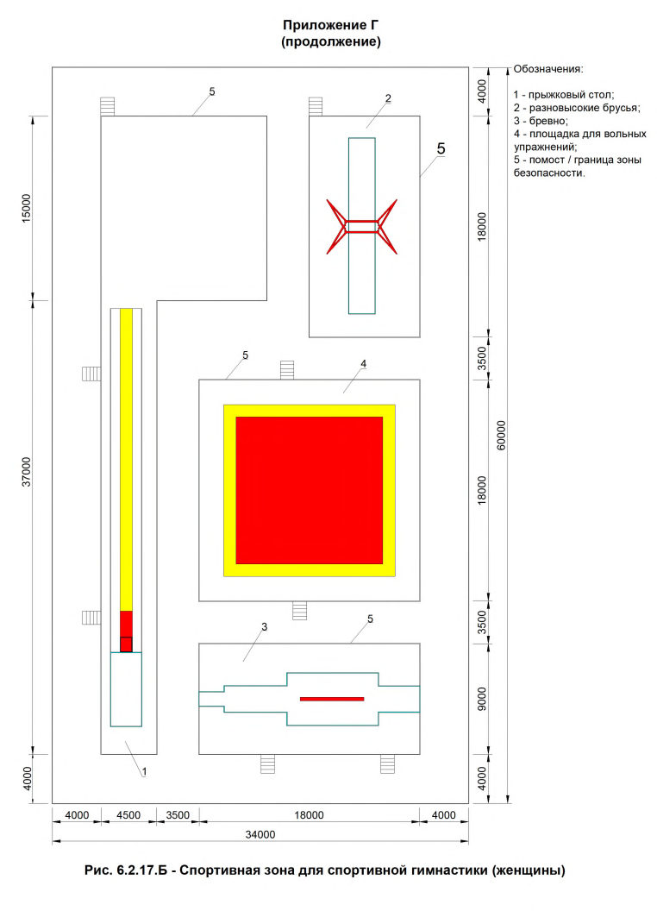
Рисунок Г.20, лист 3 - Спортивная зона для отдельных дисциплин в прыжках на батуте
А
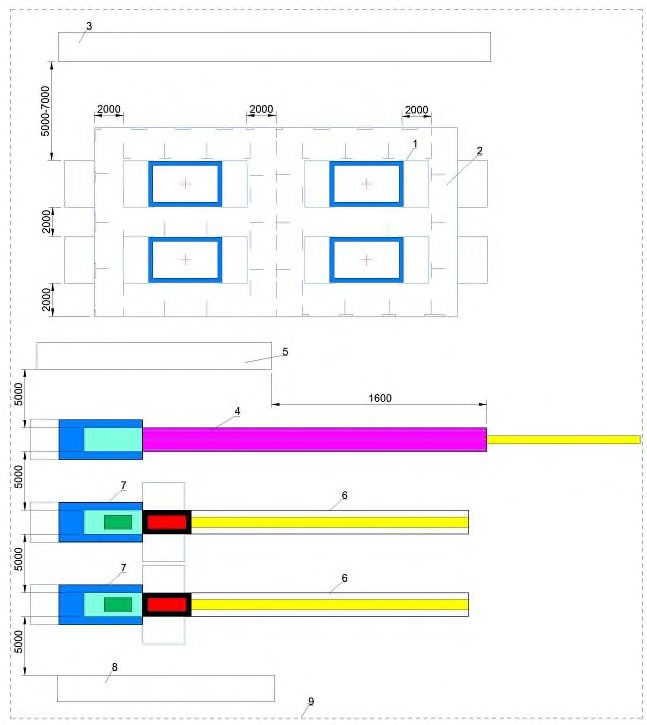
А - спортивная зона для художественной гимнастики; Б - спортивная зона для художественной гимнастики. Вариант профиля; В - спортивная зона для художественной гимнастики. Вариант профиля; Г - спортивная зона для художественной гимнастики. Вариант профиля
1 - ковер; 2 - зона безопасности; 3 - граница спортивной зоны
Рисунок Г.21 - Спортивная зона для художественной гимнастики
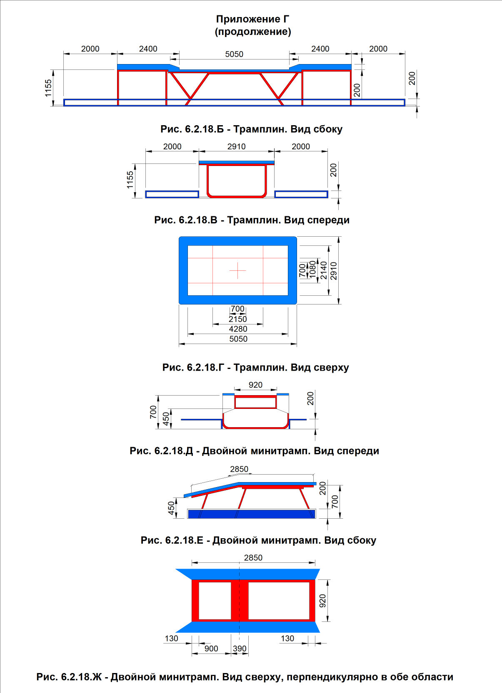
1 - судья 1; 2 - судья 2; 3 - судья 3; 4 - судья 4; 5 - судья 5; 6 - технический делегат (супервайзер); 7 - специалист, оценивающий работу рефери; 8 - официальный информатор; 9 - хронометрист/ оператор гонга; 10 - оператор судейской электронной аппаратуры; 11 - стол врача; 12 - специалист, оценивающий работу боковых судей; 13 - красный угол; 14 - синий угол; 15 - нейтральный угол; 16 - стойки камер; 17 - фотографы; 18 - помост; 19 - ринг; 20 - места секундантов; 21 - границы спортивной зоны
Рисунок Г.22 - Спортивная зона для бокса
Рисунок Г.23 - Спортивная зона для дзюдо
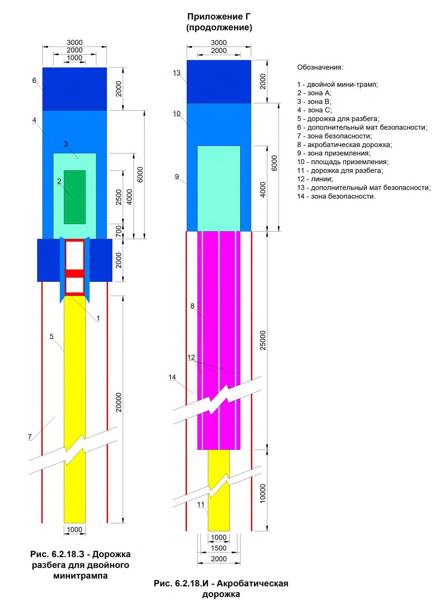
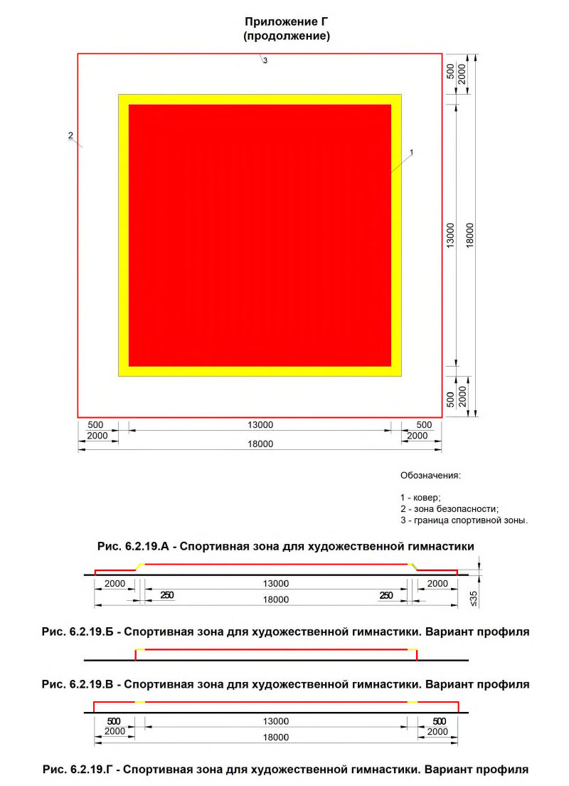
Рисунок Г.24 - Спортивная зона для спортивной борьбы

1 - граница площадки (помоста); 2 - рабочая зона ковра; 3 - центр ковра; 4 - линия границы «зачетной зоны»; 5 - зона безопасности
Рисунок Г.25 - Спортивная зона для самбо
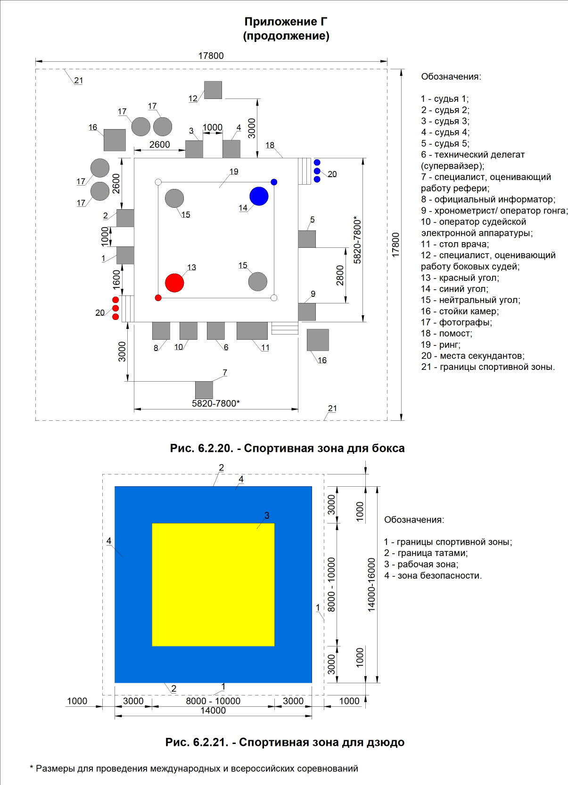
1 - границы спортивной зоны; 2 - подиум; 3 - помост для штанги; 4 - зона вокруг помоста; 5 - зона размещения вспомогательного оборудования; 6 - зона судей и обслуживающего персонала; 7 - зона разминки и отдыха; 8 - перегородка зоны разминки
Рисунок Г.26 - Спортивная зона для тяжелой атлетики
А
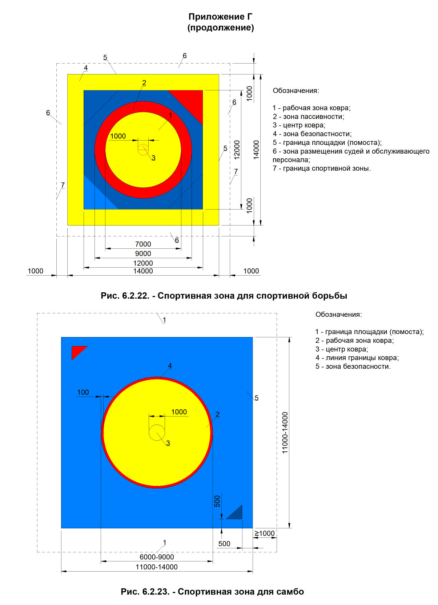
А - спортивная зона для фехтования; Б - разметка поля боя для фехтования; В -Помост. Вид сбоку
A - электрофиксатор уколов (ударов) с выносной сигнализацией; M - минимальное расстояние 1 м; P - зоны для участников командной встречи; L - выносной счетчик времени; K - катушки-сматыватели; TV - видео для повторного просмотра схватки (в случаях использования на соревнованиях); B - средняя линия поля боя; S - линии начала боя; E - линия-указатель последних двух метрах поля боя; H - линия задней границы; R - зона последних двух метров поля боя (обычно выделяется другим цветом или пунктирной линией по бокам); O - продолжение поля боя для отступления; V-V - боковая граница поля боя; штриховкой обозначена металлизированная дорожка, покрывающая весь помост; 1 - цветные лампы выносной сигнализации электрофиксатора наносимых уколов (ударов); 2 - фамилия спортсмена и его страна; 3 - хронометр и текущий счет боя (командной встречи)
Рисунок Г.27 - Спортивная зона для фехтования
Рисунок Г.28 - Спортивная зона с помостом для паралимпийского пауэрлифтинга

А
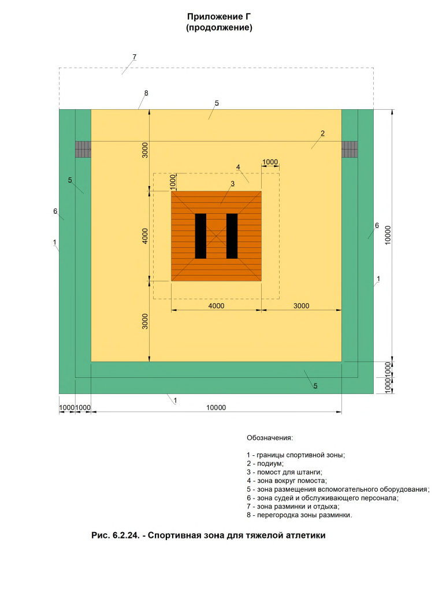
А - спортивная зона для фехтования на колясках; Б - варианты расположения платформ крепления кресел-колясок
1 - фиксируемая платформа; 2 - рама; 3 - крепление кресел-колясок
Рисунок Г.29 - Спортивная зона для фехтования на колясках
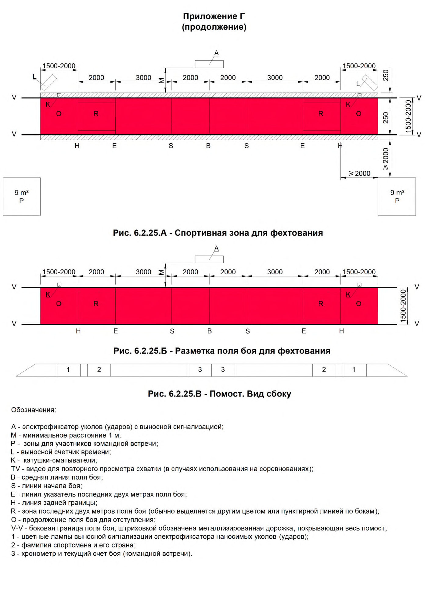
1 - зона подачи; 2 - площадка; 3 - свободная зона; 4 - место команды; 5 - стол секретаря; 6 - лицевая линия; 7 - боковая линия; 8 - стойка; 9 - сетка; 10 - судейская вышка
Рисунок Г.30 - Спортивная зона с разметкой для пляжного волейбола
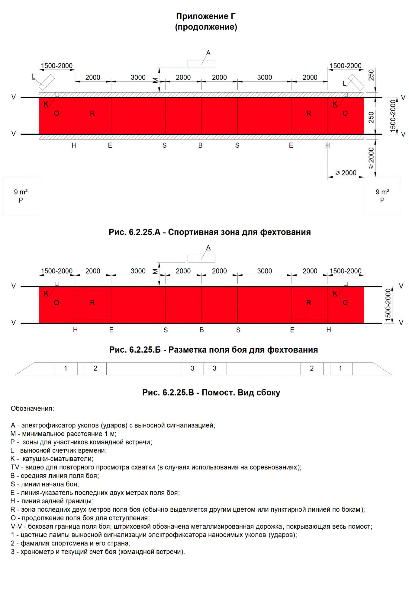
\_\_\_\_\_\_\_\_\_\_\_\_\_\_\_\_\_\_\_
* Размеры для проведения международных и всероссийских соревнований.
А - спортивная зона для пляжного футбола; Б - ворота для пляжного футбола
1 - границы песчаной площадки; 2 - маркировочная лента; 3 - линия удаления (воображаемая); 4 - линия штрафного пространства (воображаемая); 5 - маркировочные флажки; 6 - линия ворот; 7 - ворота
Рисунок Г.31 - Спортивная зона с разметкой для пляжного футбола
А
Б
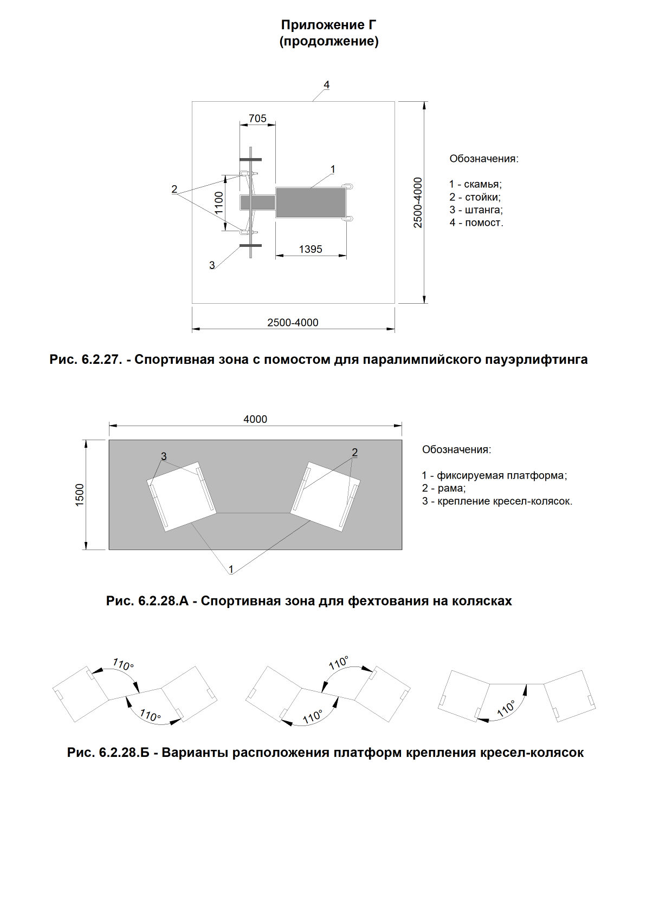
А - спортивная зона для хоккея на траве; Б - ворота для хоккея на траве 1 - средняя линия; 2 - боковая линия; 3 - задняя линия; 4 - линия ворот; 5 - четверть линия; 6 - зона четверть линии; 7 - круговая линия; 8 - центральная точка штрафной зоны; 9 - угловые флажки; 10 - ворота
Рисунок Г.32 - Спортивная зона с разметкой для хоккея на траве
СП 332.1325800.2017
| [1] | Федеральный закон от 4 декабря 2009 г. №329-ФЗ «О физической культуре и спорте в Российской Федерации» |
|---|---|
| [2] | Федеральный закон от 30 декабря 2009 г. №384-ФЗ «Технический регламент о безопасности зданий и сооружений» |
| [3] | Федеральный закон от 23 июля 2013 г. №192-ФЗ «О внесении изменений в отдельные законодательные акты Российской Федерации в связи с обеспечением общественного порядка и общественной безопасности при проведении официальных спортивных соревнований» |
| [4] | Федеральный закон от 29 декабря 2004 г. №190-ФЗ «Градостроительный кодекс Российской Федерации» |
| [5] | Федеральный закон от 22 июля 2008 г. №123-ФЗ «Технический регламент о требованиях пожарной безопасности» |
| [6] | Приказ Министерства спорта Российской Федерации от 25 февраля 2016 г. №172 «Об утверждении классификатора объектов спорта» |
| [7] | Приказ Росстата от 8 декабря 2014 г. №687 «Об утверждении статистического инструментария для организации Минспортом России федерального статистического наблюдения за деятельностью учреждений по физической культуре и спорту» |
| [8] | Приказ ГКФТ РФ от 4 февраля 1998 г.№44 «Об утверждении планово-расчетных показателей количества занимающихся и режимов эксплуатации физкультурно-оздоровительных и спортивных |
| [9] | Постановление Правительства РФ от 18 апреля 2014 г. №353 «Об утверждении Правил обеспечения безопасности при проведении официальных спортивных соревнований» |
| [10] | Приказ МВД России №1092 от 17 ноября 2015 г. «Об утверждении |
Библиография
- [11] Постановление Правительства РФ от 6 марта 2015 г. № 202 (ред. от 23 июля 2016 г.) «Об утверждении требований к антитеррористической защищенности объектов спорта и формы паспорта безопасности объектов спорта»
- [12] СП 2.1.2.3304-15 Санитарно-эпидемиологические требования к размещению, устройству и содержанию объектов спорта (Зарегистрирован в Минюсте России 29 октября 2015 г., регистрационный № 39547)
- [13] Правила вида спорта «кёрлинг» (Утверждены приказом Минспорта России от 28 марта 2016 г. № 340)
- [14] Правила вида спорта «конькобежный спорт» (Утверждены приказом Минспорта России от 12 октября 2015 г. № 943)
- [15] Правила вида спорта «фигурное катание на коньках» (Утверждены приказом Минспорттуризма России от 30 декабря 2010 г. № 1299)
- [16] Правила вида спорта «хоккей» (Утверждены приказом Минспорттуризма России от 30 марта 2010 г. № 248)
- [17] Правила вида спорта «хоккей с мячом» (Утверждены приказом Минспорта России от 19 августа 2016 г. № 984)
- [18] Правила вида спорта «спорт лиц с поражением опорно-двигательного аппарата» (утверждены приказом Минспорттуризма России 9 ноября 2010 г. № 1195)
- [19] Правила вида спорта «бадминтон» (Утверждены приказом СП 332.1325800.2017 СП 332.1325800.2017 пожаротушения и автоматической пожарной сигнализацией
- [43] СП 31-110-2003 «Проектирование и монтаж электроустановок жилых и общественных зданий»
- [44] СО 153-34.21.122-2003 Инструкция по устройству молниезащиты зданий, сооружений и промышленных коммуникаций